［＃「朝鮮慶州金冠塚發見の王冠」のキャプション付きの図（fig18371_01.png、横×縦）入る］
朝鮮慶州金冠塚發見の王冠
［＃改丁］
私は『
博物館』といふ
題で
書くことになりましたが、
何分博物館といつても、
美術考古博物館もあり、
科學博物館もあり、そのほかいろ／＼の
博物館があるので、それを
一々説明すれば
百科の
學を
講釋することになり、それは
私には
出來ない
藝當であるのみならず、
一册の
本にはとうてい
收め
切れません。しかし
幸ひ
美術や
自然科學のお
話は、
別に
諸先生が
筆を
執られてゐることゝ
思ひますから、
私は
博物館のうち
考古學の
博物館のことだけを
書くことにし、この
一册の
本によつて
若い
人達に
考古學の
大體のお
話しをすることにいたしました。たゞ
何分書物の
標題が『
博物館』となつてゐますので、
始めに
少しばかり
博物館全體のことを
述べて
置きます。
考古學のお
話しをする
爲めには、どうしても
實物をお
見せするか、せめて
寫眞や
繪をお
目にかけなくてはよくわかりかねます。それで、この
本にもわりあひにたくさん
繪を
入れて
置きました。そのうち
霜島正一郎［＃「霜島正一郎」はママ］先生の
手になつたものもありますが、
便宜上私の
描いた
拙い
素人畫もたくさんあるのは、おゆるしを
願ふほかはありません。またこの
本を
書くにあたつて、
松本龍太郎さんにいろ／＼
御厄介になつたことを、こゝで
厚くお
禮を
申しあげて
置きます。
昭和四年七月
濱田青陵
［＃改丁］
［＃ページの左右中央］
博物館
［＃改ページ］
［＃ページの左右中央］
裝幀・恩地孝四郎
島田貞彦
口繪・霜島正三郎

繪・霜島正三郎
濱田青陵
［＃改ページ］
［＃ページの左右中央］
［＃改丁］
皆さんは、
博物館といふ
所を
見たことがありますか。
博物館にはいろ／＼の
美しいものや
珍しい
品物が
竝べてあります。
皆さんのなかには、
博物館に
竝べてあるものは
金錢で
買ふことの
出來ないといふことが、たゞ
三越や
大丸などの
でぱーとめんと・
すとあーと
違つてゐるところだと
思ふ
人があるかも
知れません。またそれらの
店よりも
面白いものや
綺麗な
物が
少いところだといふ
人があるかも
知れません。しかし
博物館と
でぱーとめんと・
すとあーとの
違ひは、けっしてそのような
點ばかりではないのです。
でぱーとめんと・
すとあーではお
客の
眼を
惹くように、
美しいものや
珍しいものを、たいてい、なんの
秩序もなく
竝べ
立てゝありますが、
博物館の
陳列品は
皆、
種類をわけ
順序をつけ、その
品物には
一々わかるような
説明をつけて、それを
見て
廻るうちに
自然に
學問が
出來るようにしてあるのです。それで
博物館は
品物を
買ひに
行くところでもなく、また
遊びに
行くところでもありません。
皆さんの
學校と
同じように
勉強をしたり、
學問をする
場所なのです。もっとも
學校と
違ふところは、
博物館には
先生がをられません。また
時間も
一時間づゝきまつて
勉強するようには
出來てをりませんから、
誰でも
博物館に
行つた
人は、
自由に
勉強が
出來、
時間にしばられるといふ
窮屈な
思ひはありません。けれども、
先生のように
親切に
教へて
下さる
人はなく、
休みの
時間にお
友達と
面白く
遊ぶことが
出來ないから、
時には
退屈することもありませう。
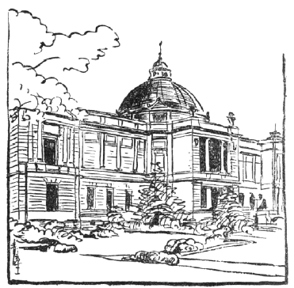
第一圖 東京帝室博物館
博物館には
皆さんの
知つてゐるように、
種々の
品物が
竝べてありますが、たいていはある
種類のものばかりを
選んで、
陳列してあるのです。
例へば
東京の
上野公園や、
奈良にある
帝室博物館とか、また
京都の
恩賜京都博物館などには、
古い
繪畫や
彫刻や、
陶器などのような
美術品ばかりが
陳列してあります。このように
美術品ばかりを
陳列する
博物館を
美術博物館あるひはこれを
略して
美術館とも
呼びます。それから
歴史に
關係ある
品物ばかりを
陳列した
博物館は
歴史博物館といひます。また
鑛物や
動植物のような
博物學に
關する
標本類ばかりを
陳列してある
所は
博物學博物館といふことが
出來ます。その
他貝殼ばかりを
竝べた
貝類博物館、
電氣に
關するものを
竝べた
電氣博物館といふように、
陳列品の
種類は
大わけにも
小わけにも
隨意に
區別することが
出來ます。
［＃「第二圖 京都恩賜博物館」のキャプション付きの図（fig18371_03.png、横×縦）入る］
第二圖 京都恩賜博物館
私達の
知識を
廣め
學問の
爲になる
品物は
千差萬別で、その
種類は
實に
無限に
多いのでありますから、これをみんな
一つの
場所に
集めて
陳列することは
容易でありませんし、またさうした
博物館をこしらへるには
非常に
大きな
建て
物が
入る、それを
見て
廻るだけでも
二日も
三日もかゝり、かへって
不便になります。だから
世界のどの
國でも、
陳列物の
種類によつて
博物館をわけてをります。それで
大きくわける
場合はたいてい
前に
申した
美術や
歴史に
關するものを
一まとめにしたものと、
博物學に
關するものを
一まとめにしたものとの
二種類に
區別するのでありまして、この
二つの
博物館がたいてい
違つた
場所につくられてをります。そのほか
陳列品を
小さく
區別した
特別の
博物館がたくさんあることは
申すまでもありません。もちろん
大きな
博物館の
建て
物は
立派であつて、その
國や
町の
飾り
物としては
結構でありますが、これを
見物する
人や
勉強する
人達には
不便が
多いのですから、それよりも
小じんまりとした
博物館で、
内容の
整つたものゝ
方がよいといふことになるのであります。ちょうど
皆さんの
學校でも、あまり
大きい
學校はかへって
勉強に
不便のことがあるのと
同じです。
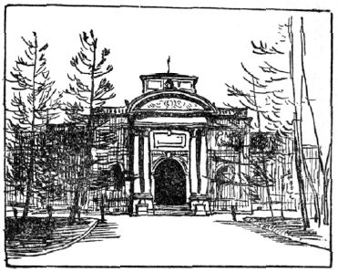
第三圖 奈良帝室博物館
博物館は、
最初にも
申したとほり、たゞ
珍しいものや
美しいものをたくさんに
竝べるといふところではなくて、それらがあるひは
年代の
順に、あるひは
地方の
別にといふふうに、
品物を
順序よく
系統を
立てゝ
竝べ、これを
見る
人が
知識を
廣め
學問をするために
作られたものでありますから、
博物館の
良い
惡いといふことはその
所に
竝べてあるものが
多いか、
少いとかいふことよりも、また
珍しいものがあるとかないとかいふよりも、その
竝べ
方が
良く
出來てゐるかゐないかといふのできまるのであります。だからいくら
珍しい
品が
多く、また
良いものがたくさんに
竝べてあつても、その
竝べ
方に
秩序がなくめちゃ／＼であつたりしては、
學問をするのにいっこう
役に
立たないのであります。ほんとうに
良い
博物館は
今いつたとほり、
品物の
竝べ
方が
系統的に
出來てゐる
上に、
竝べてある
品物の
目録が
完全に
作られてゐなければなりません。さうでないとわれ／＼は
博物館で
知識を
廣め
勉強することが
工合よくまゐりません。それで
博物館には、どうしても
一つ／＼の
品物の
名前、その
他必要の
事柄を
書き
記した
目録が
出版せられなくてはならないのであつて、その
目録の
中には
簡單な
品物の
説明と、
必要に
應じて
圖畫のようなものも
挿し
入れなければならぬのであります。
世界の
各國にある
大博物館では、
皆、さうした
立派な
目録が
出版されてをりますから、
博物館に
行く
人は、それらの
目録を
安く
買ふことが
出來、その
目録と
竝べてある
品物とを
照し
合せて、
容易く
研究することが
出來るのであります。
［＃「第四圖 京城總督府博物館」のキャプション付きの図（fig18371_05.png、横×縦）入る］
第四圖 京城總督府博物館
博物館では、また
目録書のほかに、
陳列品について
手輕に
知ることが
出來るために、いろ／＼の
書物が
出版されてあつたり、
繪葉書なども
作られてあつて、
見物人が
容易くこれを
買ひ
受けて
記念にもし、また
後日の
想ひ
出の
緒にもなるようになつてゐます。
繪葉書より
大きな
寫眞の
必要な
人には、その
希望にまかせてそれ／″＼の
寫眞を
賣るようにもなつてゐるのです。
更に
博物館では
外より
來た
見物人や
學者達に
研究させるばかりでなく、
博物館にゐる
人自身がその
陳列品を
利用して
研究を
重ね、それに
關する
立派な
書物をどし／＼
出版してゐる
例がたくさんにあります。かように
目録やそれ
以外の
書物が
出版せられて、
研究の
結果が
發表されるようにならなければ、
眞の
博物館の
役目は
達せられないのであります。
大きい
博物館をつくることは
金さへあれば
容易でありますが、
良い
博物館をつくることは
金以外更に
知識が
必要でありますから、
餘程困難なことになります。
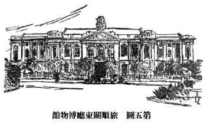
第五圖 旅順關東廳博物館
また
博物館が
學問をするのにいくらつごうよく
出來てゐても、
館内の
設備がよく
調はねばだめです。
冬の
寒い
日に
暖房がなかつたりしたら
寒氣のために
落ちついて
勉強することも
出來ないのです。
西洋の
大きな
博物館では、
良い
目録や
良い
研究書物が
出版されてゐるばかりでなく、
館内の
設備も
完全に
出來てゐて、
愉快に
見物されるようになつてゐます。たいていの
部屋には
氣持ちのよい
長椅子が
置いてあつて、
見物人はゆっくりと
腰を
下して
美しい
繪を
見たり、
彫刻をたのしんで
眺めたりすることが
出來、また
暖房のあるために
冬の
日も
館内は
春のように
暖く
過すことが
出來ます。そしてたいていの
博物館の
地下室には
便利な
食堂、
かふぇーなどが
設けられ、
食事もできるし、お
茶も
飮めるしといふようになつてゐますから、
戸外運動をしない
人々は、
日曜日には
教會から
博物館へ
來て
一日を
愉快に
暮すのであります。
日本においても
將來設けられる
博物館は、かうした
設備を
整へる
必要があると
思ひます。さうでないと
樂しんで
博物館に
行く
人もなく、
博物館は
學校の
教室よりも、
一そう
無趣味のところになつてしまひませう。
［＃改ページ］
わが
國では、
學校は
大都會はもとより
田舍の
町や
村にも
立派なのがたくさんにあつて、
日本ほど
學校のよく
整つた
國は
世界中にも
少いといはれてをりますが、これに
反して
學校の
名はなくても、
學校と
同じ
役目をする
博物館は
實に
貧弱であつて、わづかに
東京、
京都、
奈良の
三箇所に
美術博物館がある
外、これといふものもないのは
甚だ
殘念です。これは
日本人がまだ
學問をするには
學校だけで
十分であるといふような、
間違つた
考へを
持つてゐることから
來たものでありませうが、
今後は
學校以外に、
圖書館や
博物館が
學校同樣に
日本國中到る
處に
出來て、
學校において
先生から
學問を
教はりながら、また
學校を
出てから
皆さんが
自分で
圖書館や
博物館へ
行つて、
學問をやるようにならなければいけないと
思ひます。
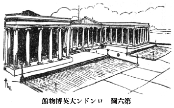
第六圖 ロンドン大英博物館
現在わが
國にある
博物館はその
數が
少いばかりでなく、
殘念ながら
世界に
押し
出して
優れた
博物館とは
申すことが
出來ません。そこで
世界で
指折りの
博物館といへば、どうしても
西洋にあるのを
擧げなければならないのです。しかし、どの
國の
博物館が
最も
良いかといふようなことは、
容易に
斷言するわけにはまゐりません。
各々博物館にはそれ／″＼の
特色があり、
建て
物がわりあひに
粗末でも、
陳列品に
優れたものが
多いとか、
陳列の
方法が
良いとか、いろ／＼の
事情があつて、
博物館の
優劣をきめることは
餘程困難ですが、なんといつてもヨーロッパにおいて
有名な
博物館は、まづ
第一にイギリスのロンドンにある
大英博物館を
擧げなければなりません。こゝは
美術と
歴史の
方面に
關する
品物だけを
集めた
博物館でありまして、
今から
四千年も
五千年も
前に
開けたエヂプトやアッシリヤ、それからやゝ
下つてギリシヤ、ローマ
時代の
文化を
語る
古美術品はもとより
支那、
日本のような
東洋のものを
多數、しかも
優れたものを
集めてあります。この
博物館で
一番珍しいものは
何かとたづねられると、ちょっと
返答に
惑ひますが、エヂプト、ギリシヤ、アッシリアの
古美術品は
世界中どこの
博物館にも、これに
優るものは
少いといはれてをります。あのエヂプトの
繪文字を
讀み
始める
手がゝりになつた『ロセッタ・ストーン』といふ
石、ギリシヤの『パルテノン』といふ
御堂にあつた
彫刻もこゝにあります。それだけでも、いかに
珍しいものがあるかといふことは
推察出來るでせう。そしてこの
博物館にはまた
立派な
圖書館が
設けてありまして、
勉強するにまことにつごうよく
出來てゐます。こゝを
一應見物するだけでも
一日を
要しますが、
入場は
無料であり、
傘や
杖を
預つてくれても
賃錢を
取りません。
毎日見物や
勉強のために、
入場する
人々は
非常にたくさんあつて、ちようど
博覽會へ
行つたほどの
賑ひです。この
大英博物館が
專ら
古代のものを
蒐集してゐますのに
對して、
今少し
新しい
時代の
美術品や
歴史に
關するものを
陳列したものに、ビクトリア・アルバート
博物館といふのがロンドンにあります。その
大きさも
大英博物館に
肩を
竝べるくらゐあつて
立派な
博物館です。
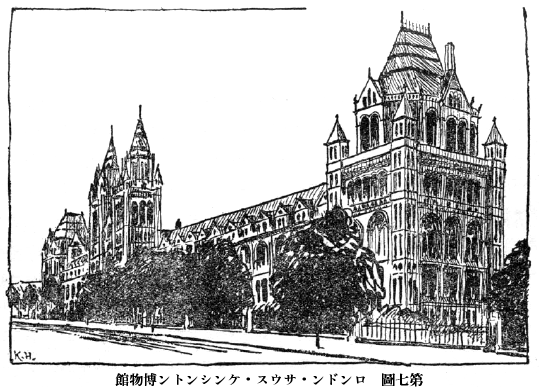
第七圖 ロンドン・サウス・ケンシントン博物館
前の
二つの
博物館は
美術と
歴史の
方面に
關したものでありますが、ロンドンには
博物學の
方面の
大きな
博物館もあります。それは、サウス・ケンシントン
博物館です。こゝには
動植鑛物を
始め、
理科に
關する
標本が
完備してゐます。そして
子供や
素人のためにいろ／＼
興味を
惹くように
竝べてありますので、
年の
若い
學校の
生徒なども
大勢見物に
出かけます。たとへば
昆蟲の
標本室にはひつて
見ますと、
珍しい
蝶々や
甲蟲などの
變つた
種類のものが
驚く
程たくさんに
集めてあります。またその
室の
兩側の
壁近くには、
幾百といふ
多くの
引き
出しがあつて、
種類別に
整理した
昆蟲標本でいっぱいになつてをり、
誰でも
勝手に
出して
見ることが
出來るので、
自由に
勉強が
出來る
設備になつてをります。そのほか
大きな
動物の
標本には
象や
鯨もあり、
鑛物や
植物の
標本もすっかり
揃つてゐることは
申すまでもありません。
更にロンドンには
古代の
繪畫ばかりを
集めた
博物館だとか、
肖像畫を
專門に
竝べた
博物館だとか、ロンドン
市に
關する
歴史の
材料を
集めた
博物館だとか、インドに
關する
資料ばかりを
集めた
博物館だとか、
昔から
今日まで
戰爭に
使つた
武器ばかりを
陳列した
博物館だとか、
汽車、
汽船、
電車、
飛行機のような
交通に
關する
機械類を
集めた
博物館だとかゞ、こゝかしこにたくさんにありますから、これ
等を
一とほり
見物して
歩くだけでも、ロンドンで
一週間ぐらゐは、
大丈夫かゝるでせう。ロンドン
以外では、スコットランドのエヂンバラを
始めイギリスの
大都市、
地方の
町や
村にある
博物館を
一つ／＼
數へ
擧ぐるならば
數百にも
達するくらゐであります。しかもロンドン
以外の
町にもわが
東京の
帝室博物館ぐらゐのものが
無數にあるのは、なんと
羨ましい
［＃「羨ましい」は底本では「羨ましい」］ことではありませんか。
フランスの
都パリにも、またロンドンに
劣らないほどの
大きな
博物館があります。それはルーヴル
博物館です。こゝには
古代の
美術や
歴史に
關する
物が
陳列されてありますが、
中でもギリシヤの
彫刻だとか、アッシリアやエヂプトなどの
古い
品物では
世界に
比類のない
程の
立派なものが
集められ、
陳列品の
價値ある
點から
見ても、
大英博物館にけっして
負けないのであります。ルーヴルには
圖書館が
附設されてない
代りに、
古い
繪の
博物館が
含まれてをります。
殊にこの
古い
繪の
方では、
他にこれと
肩を
竝べる
程のものはないといはれてをります。たゞこの
博物館は
昔の
建て
物をそのまゝ
使つてゐるので、
光線の
工合が
少しく
惡いのが
缺點ともいへるでせう。ルーヴルの
他にパリで
有名なのは、
歴史に
關するものを
竝べたクルニー
博物館、
郊外に
出ますと、サン・ジェルマンの
博物館といふ
考古學の
博物館があります。
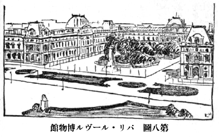
第八圖 パリ・ルーヴル博物館
つぎにドイツへ
行きますと、
首府ベルリンにはいふまでもなく
多くの
博物館があります。フリィドリッヒ
帝［＃「フリィドリッヒ帝」は底本では「フリィドノッヒ帝」］博物館などには
古い
美術品ばかりが
集めてあり、ベルガモンといふ
所から
持つて
來たギリシヤの
彫刻を
容れるため、すばらしい
設備がしてあります。また
日本支那その
他東洋の
美術品を
集めた
博物館だとか、
世界各國人種の
土俗品を
網羅した
博物館だとかゞこの
大都會を
飾つてをりますが、ロンドンやパリの
大博物館に
比べては、
新しく
出來たゞけに
少し
見劣りがするようであります。しかしドイツではベルリン
以外の
都會に、かへってベルリンよりも
大きくて、しかも
立派な
博物館が
少からずあります。その
中でも
名高いものには、ドレスデンの
繪畫博物館、ミュンヘンの
繪畫館、
同彫刻館などを
擧げなくてはなりますまい。ミュンヘンには、また
自然科學、（
理科）に
關する
方面の
博物館で、
世界中で
一番よく
整ふたものが
近頃建てられました。ドイツ
博物館といふのがそれです。この
博物館には
電車のことでも、
汽車のことでも、
飛行機のことでも、
潜水艦のことでも、
らぢおのことでも、また
鑛山のこと、
印刷のこと、その
他なんでも
理科の
學問を
應用した
爲事に
關する
品物を、それ／″＼その
發達の
順序に
應じて
竝べてあります。そして、
見物人が
自分で
隨意に
ぼたんを
押すときは、
電氣仕掛けに
通じて
機械が
動き
出し、
見物人自身で
實驗が
自由に
出來るようになつてをります。ですからもし
博物館を
詳細に
見て
行つたならば、
中學校や
大學などに
入學しなくとも、ひとりで
學問が
出來るであらうと
思はれるぐらゐに、すべてに
完備してゐるのにはまったく
驚嘆せられます。
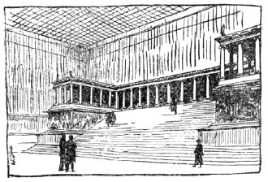
第九圖 ベルリン博物館ベルガモン彫刻室
オーストリアのウインの
町にも、ベルリンよりも
一そう
立派な
博物館が
二つもあります。イタリイに
行きますと、ローマにはバチカン
博物館を
始め、
古美術品を
陳列した
良い
博物館が
二つ
三つありますし、ネープルスやフローレンス、ミランその
他にも
大博物館が
無數にあります。イタリイは
古い
時代に
文化の
榮えた
國でありますから、これ
等の
博物館に
收めてあるものには
秀れた
品が
多く、とうてい
他の
國々では
見られないものがたくさんあります。
毎年イタリイを
旅行する
人は
非常に
多いのでありますが、イタリイ
滯在の
半は、
博物館で
過し、あとの
半はローマだとかポムペイだとかの
舊蹟を
巡遊するといふあり
樣であります。
以上の
他、ヨーロッパではスペインのマドリッド、デンマルクのコウペンハーゲン、スェーデンのストックホルムといふような
都市には、イギリスやドイツやフランス
等にもあまり
劣らない
博物館があつて、よし
國は
小さくても
博物館や
圖書館だけは、
大國と
肩を
竝べることが
出來るくらゐのものがあります。
軍艦や
兵隊では
競爭は
出來なくとも、かうしたもので
負けないで
行かうといふのです。ロシヤにも
昔から
大きい
博物館がありますが、モスコーやレニングラードにある
博物館は、ヨーロッパ
第一流のものに
比べてけっして
劣らないといはれてをります。トルコの
都にも
立派な
博物館があつて、なか／＼
有名であります。
また、これはヨーロッパではありませんが、アフリカのエヂプトのカイロには、
古いエヂプトの
遺物ばかりを
竝べてある
大きな
博物館があります。
ぴらみっとや
古い
墓から
出たいろ／＼の
寶物が
一ぱいありまして、
今から
四五千年前の
王樣の
みいらも、そのまゝ
見ることが
出來ます。また
近頃發掘されたツタンカーメンといふ
王樣のお
墓から
出た
黄金づくめのすてきな
品物が
山のように
陳列せられて、
見る
人をびっくりさせてをります。
［＃「第十圖 メトロポリタン博物館ギリシヤ室中庭」のキャプション付きの図（fig18371_11.png、横×縦）入る］
第十圖 メトロポリタン博物館ギリシヤ室中庭
アメリカといふ
國は、
皆さんも
知つてゐるとほり
新しい
國でありますが、
非常にお
金持ちでありますから、ぜいたくをつくした
立派な
博物館が
近頃たくさんに
造られ、その
建て
物や
設備においてはヨーロッパ
諸國のとても
及ばないものが
少からずあります。その
中でも
大きい
美術博物館としてロンドンの
大英博物館、パリのルーヴル
博物館に
優るとも
劣らないものは、ニューヨークのメトロポリタン
博物館でありませう。こゝにはエヂプト、ギリシヤその
他西洋の
古美術はもとより、
日本支那を
始め
東洋諸國のものを
非常にたくさん
集めてあつて、とうてい
一日や
二日では
全部見て
廻ることは
出來ないのであります。しかもこの
博物館で
見物人を
驚かすものは、そのギリシヤ、ローマの
部屋の
一部にイタリイのポムペイで
發掘された
昔の
家の
客間そのまゝを
模造してあることです。
眞中には
庭園があり、
噴水が
絶えず
水を
噴き
出し、あたりには
青々と
繁つた
庭木も
植ゑてあり、
熱い
夏の
日でも
涼しい
感じを
與へ、さながら
昔の
時代の
人となつてポムペイにゐるような
思ひがいたします。これはアメリカばかりでなく、ヨーロッパの
博物館にもありますが、
古い
彫刻などは
皆臺の
上に
乘せてあつて、
ぼたんを
押せばそれが
自由に
廻轉するようになつてをりますので、
見物人は
一つ
所に
立つてゐながら、
前後左右からその
品物を
見ることの
出來るのは
實に
便利な
仕掛けではありませんか。またボストンには、メトロポリタンにも
劣らない
程の
美術館があります。その
日本部には
日本においてさへ
見られないような
古い
美術品もあり、
日本の
建築や
床の
間のようなものを
作つて、
陳列してあるのには
感心されます。これらの
品は
日本人が
美術の
價値を
知らない
時代に
海外へ
賣つてしまつたものであつて、
今では
日本に
買ひ
戻すことも
出來ないのです。またワシントンのフリヤー・ガレリーといふ
美術館は、
支那の
古畫をもつて
特色としてゐます。それからフィラデルフィアの
大學附屬博物館にも、また
支那の
古い
時代の
彫刻などにすばらしい
立派なのがあります。かようにアメリカの
博物館はなか／＼
侮り
難い
勢ひをもつてゐるばかりでなく、
近年は
支那などから
出る
古美術品は
金錢を
厭はず
購入するといふ
状態ですから、ヨーロッパ
諸國はこの
點ではとても
勝てないことになりました。
博物學方面の
博物館も
立派なのが
各地に
設けてありますが、ことにワシントン、シカゴ、ニューヨークなどにあるものはよく
完備してをります。
動物の
標本は
皆、
ぱのらまの
風景の
中に、それをあしらつて、
自然の
景色の
中にそれ／″＼
動物が
棲んでゐる
所を
見せることに
努めてをりますから、
見物人は
大人でも
子供でも
興味をもつてそれ／″＼
動物の
生活状態を
知ることが
出來るのです。かような
博物館は、アメリカの
各州に
一つや
二つは
必ず
設けられてあるのは
實に
羨ましいと
思ひます。せめて
日本にこんなのが
一つでも
設けられたらと
思はずにはゐられません。またアメリカには
大きな
博物館に
附屬し、また
獨立に
兒童博物館といふのがたくさんあります。これは
理科その
他に
關して、ごく
簡單な
知識を
授けるために
出來たもので、
學校で
習ふことを、
一々實物に
照して
復習することが
出來ます。それですからいつも
熱心な
男の
子や
女の
子が
一ぱいです。これも
西洋で
羨ましいものの
一つであります。
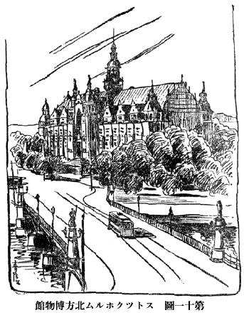
第十一圖 ストツクホルム北方博物館
西洋各國にあるいろ／＼の
博物館の
中で、
一風變つた
特色があつて
非常に
面白く
感じたのは、ヨーロッパのスエーデン
國のストックホルムにある
民俗博物館であります。これはスエーデンの
土地の
風俗や
習慣などを
示す
博物館であつて、ハゼリウスといふ
一人の
熱心な
人が、
古い
風俗や
品物がだん／＼
亡びて
行くのを
悲しんで、
初めはわづかの
品物を
集め
出し、それがだん／＼
大きくなつて
行つて
今日の
國立の
大博物館となり、
北方博物館といふ
名稱がつけられたのであります。
建て
物は
三階建ての
立派なもので、その
一番下の
部屋にはスエーデンの
各地方の
農家の
状態をそのまゝこゝへ
移してあつて、
寢臺だとか
爐邊の
模樣などが
地方々々別に
區別して
竝べてあるのです。また
二階には
家々の
道具類が、あるひは
織り
物あるひは
木器あるひは
陶器といふように
種類をわけて
見られるようにしてあります。それから
三階へ
上ると、
今度は
時代順に
竝べて、だん／＼
變つて
來てゐるところを
現してゐます。かように
三種の
竝べ
方によつて、
私共見物人はスエーデンの
風俗や
習慣の
特質を
十分にいろ／＼の
方面から
研究することが
出來るようになつてをります。ところがまたこの
博物館のすぐ
傍にスカンセンといふ
丘陵があつて、それが
野外博物館になつてをります。その
丘の
上にはスエーデンの
各地方の
植物を
移植し、また
特有の
動物をも
飼養してゐるところは、ちょっと
植物園か
動物園のようでもあります。そしてその
間に
各地方からそのまゝもつて
來た
農民の
小屋があり、
古い
式の
教會堂が
木の
間がくれに
建つてゐるかと
思ふと、
面白い
風車があり、
倉庫のような
古い
建て
物が
昔のまゝに
設けてあるといふ
風であります。さてその
農民小屋にはひつて
見ると
爐邊には
薪が
燃やされてあつて、その
地方の
風俗をした
爺さんが
たばこを
燻らしてゐたり、
娘さんはまた
絲を
紡いで
熱心に
働いてゐるといふ
實際生活を
見ることが
出來、また
料理屋や
茶店も
各地方にあるそのまゝの
建築で、
料理もまたその
地方の
名物を
食はせ、
給仕女は
故郷の
風俗をしてお
客の
給仕に
出るといふふうになつてゐます。
［＃「第十二圖 スカンセン野外博物館の一部」のキャプション付きの図（fig18371_13.png、横×縦）入る］
第十二圖 スカンセン野外博物館の一部
これは
單に
旅人を
面白く
思はせるために
設けられたものではなくて、だん／＼
文明に
進むに
從ひ、
昔の
良い
風俗や
面白い
建築物が
次第に
滅んで
行くのを
保存するために
出來たものであります。
私は
日本においても、
文化の
進むに
從つて、
田舍にある
古い
風俗や
道具類が、
次第に
滅び
行くことを
殘念に
思ふので、
一日も
早くかういふふうな
民俗博物館が
設けられることを
希望するものであります。そして、このスエーデンの
博物館を
造つた
人は、
最初から
多くの
金錢を
投じて
着手したのではなく、
少しづゝ
集めて
長い
年月の
間に
一人の
力でもつて
完成させたことを
思ふときは、
誰でも
熱心と
時間とをもつてやりだせば、
成しあげることが
出來ることゝ
信じます。このスエーデンの
北方博物館とまつたく
同じような
博物館が
更に
北の
國、ノールウエのオスロにもありますし、
近頃この
種の
博物館は
各國に
設けられて
來る
傾向になつてをります。
［＃改丁］
［＃ページの左右中央］
［＃改丁］
博物館を
大別すると、
美術、
歴史、
考古に
關する
品物を
陳列した
博物館と、
博物、
理科の
方面の
品物を
集めた
科學博物館の
二つの
種類に
區別せられることは
前にも
述べたとほりでありますが、これらの
博物館について
一々詳しくお
話しをすることは、この
本の
紙面が
許さないばかりでなく、
科學博物館や、
美術、
歴史の
博物館に
關しては、
各々その
題目について
他の
先生方が
話されることになつてをりますから、
私は
第一の
美術、
歴史、
考古に
關する
博物館の
内、たゞ
考古學に
關する
博物館のお
話しをこれからいたしませう。
いつたい
考古學といふ
學問は、
人間が
世界に
現れて
以來今日に
至るまでの
長い
年月の
間にこの
世界中に
遺した
種々の
品物、それは
人間の
作つた
道具とか
武器の
類、また
建築、
彫刻、
繪畫その
他一切の
品物、これを
私共は
遺物といつてをりますが、その
遺物によつて
人間の
過去の
時代の
生活の
模樣だとか、
文化の
状態だとかを
研究する
學問であります。しかし
新しい
時代になるほど
種々の
書き
物などが
遺つてをりますので、それによつて
昔のことがたいていわかりますから、
遺物ばかりで
調べる
必要はありませんが、ずっと
時代が
古くなり、
書き
物があまりなかつたり、またまったくない
古い
時代になりますと、どうしても
遺物ばかりで
研究をするほか
方法はありません。それで
考古學では、
遺物ばかりで
研究しなければならぬごく
古い
時代、あるひは
遺物を
主に
使つて
研究しなければならぬ
古い
時代のことを
專ら
調べて
行くのであります。ですから
考古學の
博物館といへば、
遠い
古い
時代に
人間の
造つた
品物を
竝べて
置くのでありますが、
大きい
家屋だとか
洞窟だとかいふものになりますと、
博物館の
中へ
持つて
來ることが
困難ですから、たいていは
模型や
圖面を
陳列することになつてをります。
私は
七八歳の
少年時代から、
昔の
人の
作つた
石の
矢の
根などを
集めて
喜んだのでありましたが、その
頃私は
石の
矢の
根は
人間の
作つたものではなくて、
水晶や
何かと
同じように
自然に
出來た
石だとばかり
信じてをりました。またある
人は
石の
矢の
根は
天狗の
作つたものだと
話してくれました。しかしそれは、
今日から
四十年程前のことでありまして、その
頃には
日本のどこへ
行つても
考古學の
博物館といふものは
一つもなく、また
石の
矢の
根のようなものについても、
説明した
書物がなかつたのであります。もしその
頃考古學の
博物館があつたならば、
石の
矢の
根は
自然に
出來たものでもなく、また
天狗の
作つたものでもなくて、
古い
時代に
人間が
作つたものであるといふことがわかつたことでありませう。しかし
四十年後の
今日でも、
日本では
殘念ながら
考古學博物館がどこにも
設けられてゐませんから、
皆さんはやはり
先生に
聽くか、
書物を
見るかしなければ、それらについて
知ることの
出來ないのは
甚だ
遺憾なことであります。
昨年私がドイツを
旅行して、ミュンヘンといふ
町へまゐりました
時、そこにある
大きい
美術博物館の
附近に、
小さいけれども
考古學博物館がありましたので
見物に
出かけました。そこはわづか
二つか
三つしか
部屋がなく、ほんとうに
小さいもので、
爺さんがたゞ
一人、つくねんとして
番をしてゐました。その
中へ
私がはひつて
行くと、
陳列棚の
陰の
方に
一人の
少年がゐて、
手帳を
出して
一しょう
懸命に
見たものについて
筆記してゐました。
私はこの
少年の
熱心さに
感心したので、
「あなたはかういふ
古いものがすきですか」
とたづねました。
「はい、
私はこんなものを
調べるのが
一番好きです」
と
答へて、なほも
鉛筆を
手帳の
上に
走らせてゐるのです。それで
私は、
「あなたのような
熱心な
少年は、
將來きっと
考古學の
立派な
學者になりませう」
といつて
別れたのでありました。
日本にもよし
小さくとも、こゝかしこに
考古學の
博物館が
建てられてあつたら、このドイツの
少年のように
熱心な
子供が
出來て
來て、それが
將來考古學の
偉い
學者になるであらうと
感じたのでありました。
［＃「第十三圖 ピテカントロプスの頭蓋」のキャプション付きの図（fig18371_14.png、横×縦）入る］
第十三圖 ピテカントロプスの頭蓋
さて
人間は
下等動物からだん／″＼
進化して
來たものであつて、われ／＼は
猿と
同じ
祖先から
生れて
來たものであらうといふことは、ダアウヰンが
進化論を
唱へて
以來、
餘程の
頑固な
人を
除いてたいてい
皆信ずることになりました。しかし、その
人間と
猿との
共同祖先はどういふものであつたでせうか。またその
共同祖先から
今日の
人間のようになつた
最初の
人間はどういふものであつたでせうか。このようなことを
知るには、
地中に
埋まつてゐるその
古い
骨の
化石を
掘り
出し、それを
材料として
研究する
外はありませんが、さてさういふ
猿と
人間との
中間のものゝ
骨が
今日までにいかほど
發見されたかといふに、
殘念ながら
中々思ふように
出てまゐりません。しかしたゞ
一つ
今から
四十年前（一八九二
年）にオランダの
軍醫デヨボアといふ
人が、
南洋ジャ
 島
島のトリニールといふ
所で
發見した
骨が、ちょうどこの
人間と
猿との
中間にある
動物の
骨だといはれてをります。
骨といつても、たゞ
頭蓋骨の
頂き、いはゆる
頭の
皿の
部分と
左の
腿の
骨の
一部分と
臼齒が
出たばかりでありますが、これを
調べて
見ると、どうしても
今日の
類人猿とは
違つて、
餘程人間的の
性質をおびてゐたことがわかるのです。ことに
直立して
歩行したものであることが、
足の
骨の
性質によつて
十分に
想像せられます。それでその
骨の
持ち
主である
動物と、『ピテカントロプス・エレクツス』すなはち
猿人、
直立して
歩行する
猿人といふ
名をつけたのであります。この
骨を
基礎として
顏や
體を
造つて
見ると、
第十四圖にあるような
猿人となるのです。これが
猿の
方に
近いか、
人間の
方に
近いかは、
議論があるにしても、とにかく
人間と
猿との
中間の
動物といつて
差し
支へはありません。
［＃「第十四圖 ピテカントロプス猿人」のキャプション付きの図（fig18371_15.png、横×縦）入る］
第十四圖 ピテカントロプス猿人
その
後、
本當の
人間と
名のつけられる
一番古い
骨は、ドイツのハイデルベルグの
附近で
發見されました。それはたゞ
一つの
下顎骨でありますが、この
骨は
顎が
内側に
引込み、
今日の
人間とはよほど
違つてゐますけれども、
類人猿とは
全く
別種であり、もはや
人間の
仲間であることは
明かであります。
第十五圖をご
覽なさい。たゞ
一つの
下顎骨から
想像して
見ると、こんな
人間が
出來上るのです。これを『ハイデルベルグ
人』といつてゐます。
［＃「第十六図 ハイデルベルグ人下顎骨」のキャプション付きの図（fig18371_16.png、横×縦）入る］
第十六図 ハイデルベルグ人下顎骨
その
次ぎに
古いものは、イギリスのピルツダウンで
發見されたもの、それからドイツのネアンデルタール、ベルジュームのスピイなどで
發見されたもので、これらのものは
皆ハイデルベルグ
人よりも
餘程進歩してをりますけれども、
現代の
人類、
日本人、
支那人のような
黄色人種、ヨーロッパやアメリカの
白色人種、それからアフリカあたりの
黒人まで
含めた
現代人類と
比較して
見ると、
動物學上これら
現代人と
同じ
一つの
人種にいるべきものではなくて、それとは
別な
種に
屬するほどの
違ひを
示してをりますので、われ／＼はこれを『ホモ・プリミゲニウス』（
原始人）と
呼んでゐるのであります。
第十八圖はネアンデルタールから
出た
骨から
想像して
見た、その
時分の
人間です。
［＃「第十五圖 ハイデルベルグ人」のキャプション付きの図（fig18371_17.png、横×縦）入る］
第十五圖 ハイデルベルグ人
［＃「第十七圖 ピルツダウン人」のキャプション付きの図（fig18371_18.png、横×縦）入る］
第十七圖 ピルツダウン人
その
次ぎの
時代に
出て
來た
人間は、フランスのドルドンヌ
州その
他から
發見された
骨によつて
代表されるものであつて、その
中で
主なるものはクロマニヨン
人といはれるものです。この
時代の
人間になると、
今日の
人間とまったく
同じ
種に
屬するものであり、またある
點では
今の
野蠻人などよりは
餘程進んだ
頭腦の
持ち
主であつたことは、その
頭の
骨を
見てもわかります。ですからクロマニヨン
人は、われ／＼と
同樣、
現代人といふ
名をつけなければなりません。しかしその
現代人に
屬するクロマニヨン
人が
棲んでゐた
時代はいつ
頃だらうと
申しますと、ずいぶん
古い
時代であつて
明瞭にはわかりかねるのでありますが、まづ
今日から
七八千年乃至一萬年に
近い
以前であらうといふことです。
從つてそれ
以前の
原始人だとか、ハイデルベルグ
人だとかに
至つては
何萬年前であるか、にはかに
見當がつかないくらゐです。まして
人と
猿の
中間とも
見られる
猿人などは
五十萬年、あるひはそれ
以上の
古い
昔のものとしなければならぬのでありまして、かように
考へて
來ると
人間の
始めはなんとずいぶん
古いものではありませんか。また
人間の
現れる
以前の
下等動物ばかり
棲んでゐた
世界はどれだけ
古いことでせう。
數千萬年をもつてかぞへても
數へ
切れない
昔とは、
實に
驚くべきことであります。われ／＼が
歴史をもつてから
今日まで、わづかに
數千年といふ
短時日でありますが、
人間の
始めて
出現してから
歴史の
始まるまでと、
歴史以後今日までとの
長さの
比例は、
歴史以前の
方が
歴史以後の
數十倍からあるといふことでわかるでせう。
［＃「第十八圖 ネアンデルタール人想像圖」のキャプション付きの図（fig18371_19.png、横×縦）入る］
第十八圖 ネアンデルタール人想像圖
さて
人類が
始めてこの
世界に
現れてから
非常に
長い
間、
歴史時代にはひるごく
近い
時代までも、
人間は
今日われ／＼のように
銅や
鐵の
金屬を
使用して
種々の
器物を
作ることをまったく
知らなかつたのであります。それで
最初は
今日の
猿などと
同じく、たゞそのあたりにある
木片だとか
石塊だとかをもつて、
穴を
掘つて
蟲をとつたり、あるひは
木の
實をわつて
食ふといふような
生活をしてゐたのでありませう。ところがだん／＼
進歩するに
從つて
石塊に
多少の
細工を
加へ、
手に
握つて
物を
打ち
壞すに
便利な
形にこしらへるようになりました。
更にまたその
石を
磨いて
美しい
形の
器物を
造るようになり、あるひは
自分の
食つた
動物の
骨に
細工を
加へて、それを
道具にしたりしたのでありますが、とにかく
主として
石で
造つた
器物を
使用した
時代が
長らくつゞいたのです。それをわれ／＼は
石の
時代、あるひは
石器時代と
呼んでをります。
［＃「第十九圖 クロマニヨン人想像圖」のキャプション付きの図（fig18371_20.png、横×縦）入る］
第十九圖 クロマニヨン人想像圖
ところが
人類はまた
偶然に
岩石の
間にある
金だとか
銅だとかのような
金屬を
發見して、こんどはその
金屬をもつて
器物を
造るようになりましたが、これは
石や
骨の
器物に
比べると、
非常につごうの
良いことを
知り、まづはじめにはたゞの
銅を
使ふようになつたのであります。ところがたゞの
銅では
柔かすぎ、
鑄造もむつかしいので、
銅に
錫をまぜて
青銅といふ
金屬を
作り、これを
器物の
材料としてゐた
時代がありました。この
時代を
青銅時代あるひは
青銅器時代と
稱するのであります。そののち
遂に
鐵が
廣く
器物に
使用される
時代となつたのでありますが、その
時代を
鐵の
時代、あるひは
鐵器時代といふのです。
今日においては
鐵以外に
あるみにゅーむその
他いろ／＼の
金屬が
發見されてまゐりましたが、やはり
鐵が
切れものや、
何かに
一番多く
使はれてゐるので、
廣い
意味においては、
今日も
鐵器時代に
屬するといふほかはありません。
［＃「第二十圖 トムゼン氏」のキャプション付きの図（fig18371_21.png、横×縦）入る］
第二十圖 トムゼン氏
かように
人類が
石から
銅、あるひは
青銅をへて、
次ぎに
鐵をもつて
刃物をつくる
時代となりました。この
三つの
時代を
考古學者は、
文化の
三時代、あるひは
文化の
三つの
階段と
名づけるのであります。しかしこの
三つの
階段は、あらゆる
人類が
必ずこの
順序でもつて
通過するものではありません。ある
場合には、
石の
時代から
鐵の
時代になつた
例もたくさんありますが、ヨーロッパを
始めアジアの
諸國においては、
大體この
三つの
時代を
通過して、
人類の
文化が
進んで
來たのです。また
世界中のあらゆる
國の
人類が、みな
同じ
時代に
石から
銅、
銅から
鐵といふふうに
進んで
來たのではなく、ある
國では
早く
石から
銅の
時代になり、
更に
鐵の
時代になつたものもあるし、また
長い
間石の
時代に
殘されてゐたのもありますが、とにかくこの
三つの
時代の
動き
方は、
大體人類文化の
順序を
示すものといつてもよろしい。
かように
人類の
文化の
三階段があるといふことを
初めて
唱へた
人は、
今日から
百年ばかり
以前に
生きてゐた、デンマルクの
學者トムゼンであります。またその
弟子のワルセイが、
先生の
説を
事實によつてだん／＼
證明して
行つたのでありますが、どうしてこの
北歐の
一小國の
學者が、かような
説を
出すに
至つたかといふのに、
北ヨーロッパ
諸國には
石の
時代、
青銅の
時代が、
他の
地方より
長くつゞいてゐたゝめに、その
頃の
遺物が
多く
存してゐたといふのが、その
理由の
一つであります。その
後に
至つて、この
三時代を
更に
細かくわける
學者が
出て
來ました。それはイギリスのラボックといふ
人で、
石器時代をば
舊石器時代と
新石器時代の
二つにわけることになりました。
今日われ／＼はラボックのわけ
方によつて、
石器時代を
二つとするのが
普通であります。また
石器時代から
金屬使用時代にはひる
中間時代を、
金石併用期と
名づける
學者もありますが、かようにわけて
行けば
限りなくわけられますけれども、それらの
細かいことは
改めてお
話しする
時がありませう。
要するにこの
石器、
青銅器及び
鐵器の
三つの
時代によつて
考古博物館は、その
陳列する
品物を
區別し、
時代別によつて
人類の
遺物を
竝べて
行くのが
普通の
方法となつてをります。
それで
私は、これから
皆さんに
考古博物館を
書物の
上でつくり、そこへ
案内して
説明して
行かうと
思ふのでありますが、たゞ
今述べた
順序で
進んで
行くことにいたします。さあ
皆さん、これから
舊石器時代の
陳列室にまゐりませう。
［＃改ページ］
［＃「第二十一圖 原器と舊石器」のキャプション付きの図（fig18371_22.png、横×縦）入る］
第二十一圖 原器と舊石器
この
室にはひつて
私共は、まづ
中央の
棚に
竝べてある
石器類をだん／＼
見て
行きませう。
一番初めにあるのは、いはゆる『
原石器』と
稱するものでありまして、これはちょっと
見たところでは、その
邊に
轉がつてゐる
石の
破片と
少しも
變らない、たゞ
角張つて
打ち
缺いた
痕のあるように
見えるだけのものでせう。（
第二十一圖左上）これは
皆さんも、
果して
人間が
造つたものであるか
否かについて
疑ふのはむりがありません。
學者の
間にも
種々意見がありまして、ある
學者は、
人間が
手を
加へて
造つたものであるといひ、またある
學者は、いや
自然に
石がぶつかったり、
何かの
機會に
出來たにすぎないものだといふ。しかし、かような
石の
破片を
持つて
來て、これが
原石器であるかどうかといふ
確かなことは
答へが
出來ないにしても、
人間が
立派な
石器を
造る
以前に、それよりも
簡單な、ちょうどこんな
粗末な
石器を
造つたことがあつてもよいし、またこんな
石片の
中にも、
人間の
手を
加へたものが
混じてゐることだけは
認めなければなりません。
よしこの
原石器に
疑問があるにしても、その
次ぎに
竝べてある
拳のような
形をした
石になると、
誰が
見ても（
第二十一圖左下）かう
根元が
太つて
先が
尖つた
石ばかりが、
偶然にわれて
出て
來るとは
思はれない。どうしてもこれは
人間が
造つたものとしなければなりません。これには
人間の
拳ほどもある
大形のものが
非常に
多いのでありまして、
一番古い
石器といはれ、セイユ
期の
石器と
呼ばれてゐるものであります。その
次ぎに
造られた
石器は、その
隣りにあるアシュウル
期の
石器です。（
同上右上中）
形は
大體前のものに
似てゐるけれども、
製法が
細かくなり、だいぶ
美しく
出來てをります。こんな
石器は
一體何に
使用したものであるかといふに、
全體が
槌の
役にもなり、
尖つたところでは
物を
突き、
角ばつたところでは
軟かいものを
切るといふように、あらゆることに
用ひられたのでせう。これが
次第に
進んで
來ますと
使用の
途も
別になり、それ／″＼
適當の
形になつて
石槍とか
石劍とか、あるひは
石庖丁とかにわかれて
行くのでありますが、この
時代にはまだ、それがわかれてゐなかつたのであります。
［＃「第二十二圖 骨牙器と彫刻物」のキャプション付きの図（fig18371_23.png、横×縦）入る］
第二十二圖 骨牙器と彫刻物
その
次ぎに
竝べてあるのは、
皆さんの
見られるとほりその
造り
方は、
前のよりもかへって
簡單であるようですが、しかも
大きく
打ちわつた
表面を
巧みに
使つて、
必要の
部分を
細かく
打ちわつてあるのが
氣につくでせう。
薄く
平たいもの、
先が
鋭利に
尖つたものなども
出來てきたのです。これをムスチェー
期のものといつてゐます。なほ
次ぎ
々々に
陳列してあるように、
石器には
非常に
精巧なソリュートレ
期のもの、また
少し
簡單で
要領のよく
出來てあるマデレエン
期といふふうにだん／＼
變化して
來てゐることがわかります。（
第二十一圖左中及び
右下）ところがこのマデレエン
期になりますと、
石器はあまり
進歩したように
見えないけれども、この
時代にはひつて
新しく
盛んに
出て
來たものは、
動物の
骨だとか、
角だとかで
造つた
品物であります。そこに
竝べてあるような
骨製の
先の
尖つたものや、
種々のものがありまして、
中には
牙や
骨の
上に
動物の
形や
人間の
形を
彫刻したものなどがあります。（
第二十二圖）これには
前の
時代には
見られなかつた
品物です。そこに、
大きな
平たい
骨のようなものゝ
上に、
象の
形が
彫刻してあるのを
見るでせう。（
第二十三圖）これは
長い
毛の
生えた
象であることはすぐ
氣づくのでありまして、
今日の
象とは
違つて、
昔シベリアなどに
棲んでゐた
まんもすといふ
大象の
形を
現したものであります。その
まんもすの
形を
まんもすの
牙の
上に
彫つたもので、これは
珍しい
品であります。こゝにあるのはその
模造品であつて、
現物はフランスのある
博物館に
大切に
保存されてあります。この
他れんぢゃー（
馴鹿）の
上に
れんぢゃーの
形を
彫刻したものや、
人間の
形などを
彫つたものも
少くありません。
［＃「第二十三圖 まんもす牙上彫刻まんもす圖」のキャプション付きの図（fig18371_24.png、横×縦）入る］
第二十三圖 まんもす牙上彫刻まんもす圖
［＃「第二十四圖 スペイン・アルタミラ洞天井畫」のキャプション付きの図（fig18371_25.png、横×縦）入る］
第二十四圖 スペイン・アルタミラ洞天井畫
かように
舊石器時代の
中頃から、
動物などの
形を
彫刻にして
現すことが
大そう
上手になつて
來ました。これらを
見てもこの
時代の
人間を
一概に
野蠻人だとはいへない、たゞ
金屬を
使用することを
知らなかつたといふにすぎないのです。この
彫刻を
造つた
人間は、
前に
説明した
古い
人間の
模型中にあつた『クロマニヨン』
人に
屬するのであります。『クロマニヨン』
人は、
頭腦も
大きく
恰好も
整うてをり、けっして
野蠻人といふことの
出來ない
體格の
持ち
主でありますからこそ、かようなものが
造り
得られたのです。
更に『クロマニヨン』
人は、
彫刻をしたばかりでなく、
大きな
繪も
描いたのです。その
繪は
今日まで
遺つてをりますが、あちらの
壁を
御覽なさい。（
第二十四圖）
壁に
懸つてゐる
牛、
馬、
鹿などの
繪はかれ
等が
洞穴の
中の
石壁に
彫りつけたり、また
描いたりした
繪の
寫しであります。かの
牛は
びぞんといふ
牛で、
今日の
牛とはその
形は
異なつてゐますけれども、
鹿や
馬の
形はなんとよく
似て
本物のようでありませんか。
筆致の
確かな
點、
全體が
生き／＼してゐるところ、
實にこれがそんな
古い
一萬年前にも
近い
時代に
出來たものであらうかと、
誰も
疑ふのもむりはありません。
實際のところこれが
今から
五十年ほど
前に、
初めてスペインの
北の
海岸アルタミラといふ
田舍の
丘の
上の
洞穴で
發見された
時、たいていの
學者は
皆、これが
一萬年もへた
古いものでなく、ずうっと
新しいものだといつて
誰も
信じなかつたほどです。しかしその
洞穴をよく
調べると、けっして
新しい
時代に
人がはひつて
作つたものではなく、
びぞんといふ
牛のような
動物は、
一萬年近くも
前でなければ
棲息してゐなかつたものであり、それをこれほど
寫生的に
描くには、
實物によつて
寫生したのでなければならぬといふことなどが、だん／＼わかつて
來たのみでなく、やがてはフランスの
中部ドルドーンヌのフオン・ド・ゴームといふ
所の
洞穴などにまた、
同じような
繪のあることが
發見せられたのです。それで
今日では
誰もこれを
疑ふものはなくなつたのであります。
［＃「第二十五圖 舊石器時代の人が洞穴に畫をかいてゐる圖」のキャプション付きの図（fig18371_26.png、横×縦）入る］
第二十五圖 舊石器時代の人が洞穴に畫をかいてゐる圖
私もこの
間、スペインのアルタミラの
［＃「アルタミラの」は底本では「アルタミナの」］洞穴へ
行つて
親しくその
繪を
見ることが
出來たのでありますが、それはのろ／＼とした
丘の
頂きに
近く
小さな
口を
開いた
穴であつて、
中にはひると
十數疊敷きぐらゐの
大きさの
室があつて、その
奧へ
進むと
二三十間ほどもはひつて
行かれます。
今の
動物の
繪はその
大きい
室の
天井に
描いてあつたが、
石の
凹凸を
巧みに
利用して
突出部を
動物の
腹部とし、
黒と
褐色の
彩色をもつて
描いてあつて、それがあり／＼と
殘つてをります。
一萬年前より
今日までこのようによく
保存されたとは
思へないくらゐであります。また
近年この
洞穴を
發掘して、
昔彩色に
使つた
繪具も
發見せられたので、それらは
洞穴の
傍にある
番人小屋にある
小さな
陳列室に
竝べてありました。
昔の
人は
暗い
室の
内でどうしてこんな
繪を
描いたのでせうか。おそらく
燈火を
用ひたとすれば
動物の
脂肪をとぼしたことゝ
思はれます。この
洞穴の
繪を
發見したのに
面白い
話があります。
發見者は
偉い
學者でも
大人でもなく、
一人の
小さい
娘さんであつたのです。
今から
五十年程前ん
［＃「ん」はママ］（一八七九
年）に、この
附近にサウツオラといふ
人が
住んでゐました。その
人は
古い
穴を
調べることに
興味をもち、ある
日七八歳の
女の
子を
伴れてこの
洞穴の
中へはひつたのです。
穴の
入り
口は、
今より
狹くやう／＼
四ん
這ひになつて
中にはひつて
行くと、
女の
子が、
「お
父さん、あそこに
牛が
描いてあります」
と
叫んだので、
「なに、そんなことがあるものか」
と
打ち
消しながらよく
見ると、
牛や
馬の
繪が
續々と
七八十程も
現れて
來たので、サウツオラは
驚きました。そしてそれが
原因で
洞穴の
研究をして、これを
學界に
發表しましたが、
當時誰も
信ずる
者がなく、サウツオラは
失望落膽し、
殘念に
思ひながら
死んだのです。
死後幾年かをへて、それが
始めて
舊石器時代の
繪であることにきまり、
今更サウツオラの
手柄を
人々が
認めるようになりました。
今もその
洞穴の
人り
口に
建つてゐる
碑文にそのことが
記されてあります。また
當時の
少女はまだ
生きてゐて、そこからあまり
遠くない
村に
住んでゐるといふことを
番人の
女から
聞きましたが、
定めしもう
年よりのお
婆さんになつて
當時自分くらゐの
娘の
子の
親となつてゐることであらうと
思ひます。
アルタミラの
洞穴の
繪とごく
似てゐる
繪は、
前にいつたフランスのフオン・ド・ゴームの
繪であります。この
洞穴は、アルタミラとは
違つて、
丈の
高い
奧の
深い
穴であつて、
兩側の
壁にやはり
多數の
動物の
繪を
描いてあります。こゝへも
私は
行きましたが、
繪の
出來は
前のものより、
少し
劣るようでありますが、
大體において
同じ
調子であります。その
他フランスの
洞穴には、これとよく
似た
繪や、
少し
趣を
異にする
繪が、
無數にありますが、
一風變つた
描き
方で
舊石器時代の
繪と
認められるものは、
東スペインの
洞穴などに
遺つてゐる
繪であります。みな
妙な
恰好をした
人間の
繪で、それは
今日南アフリカの
土人ブッシュマンなどが
描く
繪と
非常に
似てゐるのです。
さて
私たちは
次ぎの
室にはひる
前に、ちょっと
見落した
石器類を
一應見ることにいたしませう。そこにあるのは
舊石器時代の
最後の
頃であるオリニヤック
期のもので、その
次ぎに
來るのが、
舊石器時代から
新石器時代に
移つて
行く
中間のアジール
期のものです。
石器の
造り
方などは
別に
進歩してゐませんけれども、それにもあるように
文字のようなものを、
石に
朱で
書いたものがあるのは
珍しいと
思ひます。（
第二十二圖左下）
［＃改ページ］
舊石器時代と
新石器時代とは、
人種上にも
文化上にも
關係がなくて、かけ
離れた
別のものであるといふふうに、
今までの
人は
多く
思つてゐましたが、
近頃は、この
舊新兩石器時代の
間には
聯絡があつて、けっして
無關係のものとすることが
出來ないといふふうに、だん／″＼
考へられて
來たのであります。そしてまた
學者の
中には、この
二つの
時代の
間に、
中石器時代といふ
中間のものを
置く
人もあります。それはとにかく、
新石器時代は
舊石器時代と
比べて、
人種の
上にも
文化の
上にも
餘程違つたものがあり、この
時代になると、
人種はもちろん
現在の
世界の
人種とまったく
同じ
種に
屬してゐるし、その
他自然界の
状態も
非常に
今日と
接近して
來ました。それで
石器を
使用したといふ
點においては
舊石器時代と
變りはありませんが、その
人種上からも、また
一般文化の
上から
見ますと、かへって
後の
青銅器時代と
深い
關係があるのであります。また
新石器時代のつゞいた
年代は
舊石器時代に
比べて
大へん
短く、
舊石器時代の
十分の
一にも
足りないくらゐです。
［＃「第二十六圖 ヨーロツパ新石器時代人想像圖」のキャプション付きの図（fig18371_27.png、横×縦）入る］
第二十六圖 ヨーロツパ新石器時代人想像圖
新石器時代になると
氣候その
他、
世界の
状態は
今日と
餘り
變つたところなく、たゞ
海岸線が
今よりも
陸地に
入り
込んでゐたといふくらゐに
過ぎないのです。その
時代に
棲んでゐた
獸類も、
今日われ／＼の
見るものと
大した
變りはなく、あの
まんもすといふ
大きな
象や、
馴鹿がヨーロッパなどに
棲んでゐるといふようなことはもうなくなつてしまひました。
一體新石器時代の
人間は、どんな
所に
住んでゐたかといひますと、もちろん
洞穴に
棲むものもあり、
山間にゐるものもありましたが、
海岸近くに
住居して、
魚や
貝を
捕へてその
肉を
食つたものが
多いようです。それで、その
當時の
人が
住居した
跡が
海岸附近に
遺つてゐて、かれ
等が
食つてすてた
貝殼や、
魚や
獸の
骨などがたまつてゐる
所があります。かういふ
場所では、
白い
貝殼が
一番よく
目立つので、われ／＼はこれを
貝塚と
呼んでをるのであります。
貝塚の
中からは
貝殼や
骨のようなものゝ
他に、その
時分の
人間が
使用してゐた
石器だとか
骨器だとか、また
土器だとかの
破損してすてられたものや、あるひは
遺失したものなどが
發見せられます。この
貝塚は
前に
申しましたように、
元來海岸に
棲んだ
人間の
住居の
傍に
出來た
塵埃すて
場であります。ですから
何しろ
海岸に
近い
場所にあつたに
相違ありませんが、
今日では
海岸から
遠く、
時には
數里も
離れた
所にあることがあります。これはその
後陸地が
隆起し、
海がひいてしまつたのです。またその
反對にデンマルクなどのように、
海が
陸地ををかして
來たので、
今日では
海中に
貝塚が
浸つてゐるところもあります。
この
貝塚を
始めて
研究した
人は、デンマルクの
學者でありました。
最初は、たくさんの
貝殼は、
果して
昔の
人がその
肉を
食つてすてたものか、どうかゞ
疑問とせられたのでありましたが、ある
學者が
綿密に
調査した
結果、すてゝあるそれらの
貝殼は、みな
成熟した
貝ばかりで、
未成熟のものがなく、また
二枚貝の
一方だけのものが
多いことなどがわかりました。もしも
自然に
貝殼がつもつたものとすれば、そのうちには、きっと
食べられない
幼ない
貝も
交つてゐなければならないはずだのに、
大きい
熟した
貝ばかりであり、また
貝殼の
一方しかないといふことは、
自然にたまつたものでなく、
昔の
人が
食つて
殼をすてたものであるといふほかはないのです。なほこの
貝塚は、ヨーロッパの
海岸地方ばかりでなく、アメリカその
他世界各國にあります。
日本にも
多くありますが、
日本の
貝塚については、
後にお
話しいたしませう。
［＃「第二十七圖 現代水上住居」のキャプション付きの図（fig18371_28.png、横×縦）入る］
第二十七圖 現代水上住居
新石器時代の
人間は、またあるところでは
湖水の
中に
棒杙を
打つてその
上に
小屋を
設けて
棲んでゐました。そしてその
小屋が
多く
集まつて
一つの
村落をつくつてゐました。これを
湖上住居、あるひは
杙上住居と
申します。イタリイの
北部やスヰスあたりに
多くこの
遺跡があります。それはちょうど
今日ボルネオのパプア
人やシンガポールあたりの
海岸で
見かけるのと
同樣、
陸地との
交通はたいてい
小舟に
乘つたものです。（
第二十七圖）なぜこんな
所に
住むのでせうか。それには
種々の
理由があるでせうが、その
一つは
敵の
襲撃を
免れ、
猛獸の
害を
避けるためであつたでせう。また
陸上の
家に
住んで、
穢い
塵埃をあたりにすてると
不潔なばかりでなく、いろ／＼の
病氣に
罹ることを
實驗して、
不潔物を
水にすて
清潔な
生活をするといふ
意味もあつたかと
思はれます。もちろんこの
小屋は
燒けたり
壞れたりして、
今日まったく
殘つてをりませんが、その
土臺の
杙だけが
水の
中に
遺つてゐるのです。
今から
數十年前のある
年、スヰスの
國のチュウリッヒ
湖の
水が
今までになく
減つて
底が
現れました。その
底に
棒杙が
一萬本もにょき／＼と
立つてゐるのをケラーといふ
學者が
發見しまして、だん／″＼
研究した
結果、これが
昔の
人の
湖上住居の
跡であることがわかりました。その
證據にはその
杙のある
附近を
掘つて
見ますと、
當時の
人間が
落したり
捨てたりした
石器や
土器までが
發見され、
織り
物や
木の
實の
類までが、よく
殘つてをりました。
湖上住居は、しかし
新石器時代ばかりでなく、
次ぎの
青銅器時代までも
引きつゞいて
行はれてゐたことは、
湖水の
一番深い
底からは
石器が
發見され、
淺い
上の
方からは
青銅器が
發見されたことによつて
知ることが
出來ます。
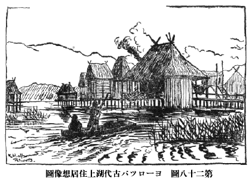
第二十八圖 ヨーロツパ古代湖上住居想像圖
あすこの
壁に
懸けてある
繪をご
覽なさい。
遺つてゐた
土臺の
杙から
想像して
湖上住居の
小屋を
描いたものであります。（
第二十八圖）その
隣りにある
繪は、
現在南洋において
實行してゐる
水上住居でありますが、いかにもよく
似てゐることがわかりませう。（
第二十七圖）なほイタリイの
北の
方などでは、
水はなくても
低い
濕つぽい
所に、
湖上住居と
同じような
杙をたて、その
上に
小屋を
作つて
住んでゐた
人間が、
新石器時代から
青銅時代にかけてをりました。
さて
新石器時代の
人類はどういふふうな
生活をしてゐたかといひますと、やはり
舊石器時代の
人間と
同じように、
石を
割つたり、
叩いたりして
製作した
極めて
粗末な
器物をも
使つてゐたのでありますが、それ
以外にこの
時代には
石を
磨いてすべ／＼した
美しいものに
造り
上げることをやり
出したのです。また
石器の
形も
大體は
前の
時代よりは
小形のものが
多く、しかも
石器の
使ひ
途によつて
種々異なつた
形のものがわかれて
發達して
來ました。
例へば
平たく
刃が
兩方から
磨き
出してゐる
石斧、あるひは
長い
槍、あるひは
庖丁といつたふうに、
使用に
便利な
種々の
形が
出來たのであります。そしてそれらが
皆、その
後發達して
今日の
金屬の
器物になつて
行つたのです。またこの
時代の
一番大きな
發明は、
弓矢が
始めて
用ひられることであります。それは
矢の
先につける
矢の
根石があることでわかるのであります。
投げ
槍といふようなものは、あるひはありましたかも
知れませんが、
弓矢のような
飛び
道具は、
舊石器時代には
見られないもので、
實に
新石器時代の
新式武器であります。この
發見はちょうど
近代における
鐵砲の
發明と
同樣、
當時の
人間が
狩獵や
戰爭の
場合、どれほど
便利で、またどれほど
有效であつたかといふことは、
今から
想像されます。たゞ
今述べたところの
石器は、この
棚に
陳列してあるように、
世界の
各國から
出てゐるのでありますが、その
形はたいてい
皆よく
似たもので、
大した
相違はありません。（
第二十九圖）
［＃「第二十九圖 ヨーロツパ新石器時代遺物」のキャプション付きの図（fig18371_30.png、横×縦）入る］
（１）石斧
（２）石奔
（３）石斧
（４）石斧
（５）石劍
（６）石鍬
（７）柄つき石斧
（スヰス）
（８）土器
（９）土器
また、この
新石器時代になつてから、
人類の
發明した
大切な
品物は
土器であります。
土器といひますと
粘土で
形を
造つて、それを
火で
燒いたものであります。もっとも
今日のように
堅い
燒き
物や、
釉藥を
用ひた
品は
出來なかつたので、いはゆる
素燒きでありますが、とにかく
土器が
發明されてから、
人間は
生活上に
非常な
便利を
得て
來ました。
今まで
水を
汲んだり、それを
保存するには
椰子の
實の
殼のようなものとか、
貝類の
殼とかを
使ふことの
他はなかつたのであります。これらのものは
大きさも
限りがあり、
形も
一定してをりますが、この
土器になりますと、
大きい
容れ
物でも
思ふような
形のものでも
自由に
造ることが
出來ます。それで
狩獵でとつて
來た
獸の
肉は、
壺の
中に
鹽漬けとして
保存されるし、
水やその
他の
流動物を
瓶に
入れて、
自由に
運ぶことも
出來るようになりました。また
以前水を
湯に
沸すことは
非常に
困難であつて、
僅かに
石のくぼみへ
水を
入れて、それに
燒き
石を
投げ
込むとか、
貝殼に
入れた
水を
火に
近寄せて
少しの
湯を
得たに
過ぎなかつたのでありますが、
土器の
發明が
出來てから、
多量の
湯を
沸すことも
出來るようになつたのであります。
定めし
舊石器時代の
人類は、
湯で
身體をふくといふことはしなかつたので、
身體も
穢れて
不潔だつたでせうが、
新石器時代に
至つては、よし
浴場はなかつたとしても、
湯でもつて
身體を
清潔にすることが
出來るようになつたと
想像せられます。（
第二十九圖）
この
土器の
發明は
更に
大なる
進歩を
人間生活の
上にもたらしました。それは、
今までは
食物を

ることを
知らなかつた
人間が、
土器によつて
動物の
肉でも
植物でも、
自由に
ることが
出來るようになつたので、
今まで
食べられなかつた
品物や
食物の
部分も、
て
食べることになつたのであります。その
結果、
從來たゞ
食物の
材料を
集めるために、
一日中骨を
折つて
働いてゐた
人間が、
集めた
食料の
貯藏が
出來るようになり、
食料が
豐になつたので
働く
力に
餘裕が
出來、それを
他の
方面に
用ふることを
得るようになり、
從つて
文明が
一段と
進歩することになつたのでありますから、
土器の
發明といふことは、
人類の
文明の
歴史の
上に
一大事件でありまして、ある
學者のごときは、
土器を
知らない
人間生活を
野蠻的生活、
土器をもつ
人間の
生活を
半開生活と
稱して
區別するくらゐであります。
私共今日の
生活から
茶碗や
壺などをなくしてしまつたならば、どれだけ
不便なことであるかは、
十分に
想像が
出來るのであります。
さて、かように
大切な
土器を
誰がどこで
發明したかといふことは
容易にわからぬのでありますが、
最初は
粘土が
水に
濕されると
軟かくなり、
思ふ
形に
造られることが
知られ、また
濕つた
粘土が
火の
傍に
置かれると、
固くなることを
知つたといふことなどが
發見の
緒となつたかと
想像せられます。また
籠の
外側とか
内側とかに
粘土を
塗り
込めて、
籠と
共に
火で
燒くといふ
製法もあつたようであります。
新石器時代に
人類が
造つたものには、
前に
述べました
石器や
土器などの
他に、なほ
非常に
大きなすばらしい
物があります。それは
人間の
體の
幾倍もある
大きな
石をもつて
造られた
墓とか、あるひは
宗教の
目的に
使つた
場所とかいふものでありまして、それに
使用された
石が
非常に
大きいので、われ／＼はそれを
巨石記念物と
名づけてゐます。これにはいろ／＼の
種類がありまして、その
一つに
立て
石（めんひる）といふものがあります。（
第三十一圖２）それはたいてい
一本の
大きな
長い
石が
突き
立てゝあるもので、その
石の
高さは
五六尺のものもありますが、
大きいものになると
五六十尺もあるものが
［＃「あるものが」は底本では「あるのもが」］あります。これはなんのために
使つたのであるか、
確かにはわかりませんが、この
巨石を
昔の
人が
神として
崇拜したものであるか、または
尊い
場所の
目標としたものであらうと
想像するより
外はありません。
私は
先頃フランスの
西海岸にあるカルナックといふ
所の
大きい
立て
石を
見に
行つたのでありますが、
今は
三つにをれて
地上に
倒れてゐます。
元は
直立してゐたもので、
高さは
七八十尺もあつたものですが、
二百年程前に
雷が
落ちたゝめに
折れたのだといふことでありました。カルナックの
立て
石より
小さいものは、フランスに
數限りなくありますが、
變つて
面白いのは
行列石（ありにゅまん）とでも
稱するもので、
六七尺から
十二三尺くらゐの
高さの
石が
幾百となく、
一定の
間隔をもつて
竝び
立つてゐるのであります。これもなんの
目的のために
出來たものであるかはわかりませんが、やはり
宗教的の
意味をもつて
造られたものであらうと
思はれます。カルナックにある
行列石には、
千二百本ばかりの
石が
兵隊のように
竝んでをるのがありました。（
第三十一圖１）
［＃「第三十圖 巨石記念物」のキャプション付きの図（fig18371_31.png、横×縦）入る］
第三十圖 巨石記念物
（１）行列石（フランス・カルナツク）
（２）どるめん（デンマーク）
（３）輪状列石（デンマーク）
また
大きな
石をもつて
圓く
輪のように
竝べ
廻してある
環状列石（くろむろひ）といふのがあります。これには
石の
大小は
種々ありますが、
大きなものになると
圓の
直徑が
一町くらゐもあり、
石の
高さは
二三十尺に
及ぶものもあります。
今日世界で
一番名高いものはイギリスの
すとんへんじといふものでありまして、いま
飛行場となつてゐるソールスベリーの
廣い
野原に
圓く
巨石を
廻した
不思議な
姿が
立つてをります。（
第三十二圖２３）
大空高く
飛行機が
飛んでゐる
下に、この
大昔の
不思議な
遺物を
見るときは、
一つは
二十世紀の
現在、
一つは
紀元前二十世紀にも
溯るべき
古代のものを、
同時に
眼前に
眺めて
一種の
感に
打たれるのであります。この
すとんへんじの
中央に
立つて
東方を
眺めるときは、
太陽の
出るのを
眞正面に
見られるから、
太陽崇拜に
關係ある
宗教上の
目的で
造られたものであらうと
説く
人もありますが、
實際なんのためにこの
野原に、かようなものが
設けられたか
確かなことは
知ることが
出來ません。もっともこの
すとんへんじは
新石器時代の
終りで、
青銅が
使用され
出した
時代に
造られたものであるといはれますが、それはとにかく
以上お
話した
巨石記念物は、いづれも
新石器時代から
作られたことには
間違ひありません。
［＃「第三十一圖 巨石記念物」のキャプション付きの図（fig18371_32.png、横×縦）入る］
第三十一圖 巨石記念物
（１）どるめん（イギリス）
（２）めんひる（フランス）
（３）高塚（デンマーク）
（４）高塚（イギリス）
今一つ
大きい
石で
造つたものに
石机、すなはち
どるめんといふのがあります。それは
少しひらたい
石を
三方に
立て、その
上にやはりひらたい
大石をのせた
一見てーぶるの
形をしたものであります。
どるめんといふ
語も、
石の
机といふ
意味の
言葉であります。この
てーぶるの
下に
人間を
葬つたので、これは
疑ひもなく
墓であります。（
第三十一圖１）、（
第三十二圖１）この
どるめんは
石器時代から、
青銅器時代に
亙つて
行はれたもので、
後には、だん／＼
石で
造つた
長い
廊下のような
室が
出來、その
石の
上に
土をかぶせて
圓い
高塚としたものが
現れました。この
石室のある
塚は、
新石器時代から
次ぎの
青銅器時代以後において、
盛んに
世界各國に
行はれてゐたものでありまして、
日本にもたくさんありますが、
日本にはごく
古い
石器時代の
どるめんはありません。（
第三十七圖３４）
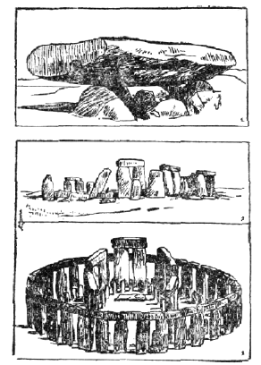
第三十二圖 巨石記念物
（１）どるめん（フランス）
（２）輪状列石（イギリス・すとんへんじの現状）
（３）その復舊圖
いま
申しました
種々の
巨石で
造つた
記念物に
用ひられた
石は、
多くは
山や
谷にある
自然石の
恰好良いものを
取つて
來て、そのまゝ
使用したもので、
餘り
人工を
加へてありません。しかし、かような
大きい
石を
運搬するには、
餘程の
勞力が
必要であります。
今日のごとく
機械の
力がない
時代でありますから、たゞ
多數の
人間が
力を
合せて、
時には
牛馬の
力を
借りたかもわかりませんが、
多くは
人力をもつてなされたものに
相違ありません。ですから
當時において
既に
協同一致して
爲事をする
一つの
團體、
社會といふものが
出來てをり、またそれを
支配して
行く
頭、すなはち
酋長のようなものがなくては、とうていかような
爲事は
出來ますまいから、この
大工事の
遺物を
見たゞけでも、
當時の
社會状態が
察することが
出來ます。また
二十尺も
三十尺も
高い
石を
兩側に
立てゝ、その
上に
横に
巨石を
載せてあるものなどは、たゞ
人力だけでもつてなされるものではなく、
種々工夫を
凝したものでせう。それには
遠方より
土を
次第につんで
傾斜した
坂道を
築き
上げ、それへ
石を
押し
上げてこれを
縱に
落し
立て、それからその
上に
横石を
載せたもので、
坂道の
土砂はその
後除き
去つたものと
想像されるのです。
かような
大きな
巨石記念物は、
博物館に
運搬して
來ることはとうてい
出來ませんから、そこにある
模型と
寫眞によつて、
皆さんはその
大體を
知る
外はありませんが、たゞ
館の
中庭にはあの
どるめんの
小さいものを、
原状のまゝ
持つて
來て
据ゑてありますから、
後程庭へ
出て
御覽下さい。そしてその
石室にはひつて
見られたならば、
一番小さい
どるめんでも、どれだけの
大いさであるかゞわかり、
從つて
大きいものはどれほどあるかを
想像することが
出來ませう。
また
どるめんといふ
墓や
めんひるといふ
立て
石などには、をり／＼
圓や
三角だのゝ
形を
石の
上に
彫りつけたのがあつたり、ぽつ／＼と
大きなくぼみを
彫り
竝べたものがあります。それは
何か
宗教上の
意味の
現しであらうと
思はれます。ヨーロッパの
地中海にあるマルタ
島の
大きな
石の
墓、あれは
どるめんがだん／＼
進歩して
複雜な
型になつたもので、ずいぶん
珍しいものゝ
一つであります。
石の
上にぽつ／＼のくぼみが
多くつけてあるので
有名であります。その
他巨石記念物といふものゝ
中の
風變りのものは、やはり
地中海のサルジニヤ
島にある
ねるげといふもので、これは
石を
圓くつみ
上げ
根元は
太く、
先ほど
少しづつ
細くなつてゐる
塔のようなもので、
他の
地方には
見ることが
出來ないものです。
人類は
前に
述べましたとほり、
長い
年月、
石をもつて
器物を
造つて、
金屬を
使用することを
知らなかつたのでありますが、その
間に
自づと
天然に
石の
間に
混入したり、あるひは
砂の
中に
轉つてゐる
金屬などを
知り、
遂にはそれを
使用するようになつて
來ました。そしてそれらの
金屬をもつて
造つた
器物の
方が、
石で
造つたものよりは
工合のよいことを
知つてからは、だん／＼
石の
代りに
金屬で
造るようになりました。さて
金屬の
中で
一番早く
發見されたのはなんであるかと
申しますと、
金と
銅と
鐵の
三種であつたようであります。しかし
金は
綺麗で
裝飾にはなりますが、
質が
軟かくて
刃物などにしては
實際の
役に
立ちません。それで
銅と
鐵の
二つの
中、いづれかゞ
使用されることになりましたが、
果してどちらが
先に
使用されたかについては
今なほ
議論があります。
一方には
鐵の
方が
地中から
掘り
出すことが
容易でありますから、
早くから
使はれたとの
説がありますし、また
一方にはエヂプトのごく
古い
時代に、もう
鐵が
發見されてゐたといふこともありますが、
實際のところ
今日遺つてゐる
種々な
器物から
考へますと、
銅と
錫との
合金である
青銅が、
一番早く
石に
代つて
廣く
使用されることになつたといふべきでありませう。
それならば、その
銅は
最初どこで
發見されたかといふに、それはやはりはっきりわかりませんが、とにかくアジアの
西方においてまづ
盛んに
使用されたし、それが
南ヨーロッパに
入り、
遂には
中央ヨーロッパから
北ヨーロッパにだん／″＼
廣がつて
行つたといふことだけは
確かにわかるのであります。この
銅、あるひは
青銅を
使つた
人間は、
前に
申した
新石器時代の
人類とやはり
同じ
人種で、
石で
造つた
斧のような
器物を、
初めはそれと
同じ
形に
金屬をもつて
造つたのでありますが、それがだん／＼
使用に
便利な
形にかへて
行つたのです。また
銅に
錫をまぜると
鑄るのに
容易で、しかも
堅くつて
丈夫であるといふことも、
最初は
偶然に
知つたらしいのでありますが、
幾度かの
經驗で
銅九分に
錫一分をまぜあはすと、
器物としてはつごうが
良いことをも
知つたので、
青銅器時代の
終り
頃には、
混合の
歩合がたいていこのわりあひになつてをります。かのエヂプトの
進んだ
文明も
使用した
器物からいへば、
青銅を
一般に
多く
用ひてゐます。またギリシヤの
文明の
開ける
前に、クリートの
嶋やその
附近において
發達した
文明も、やはり
青銅器の
時代に
屬するのでありました。ヨーロッパでは
南の
方には
早く
鐵がはひつて
來ましたが、
北方のデンマルクやスエーデンやノールウエなどでは、
鐵のはひつて
來るのが
大分遲かつたがために、かへって
青銅で
器物を
造ることが
發達して、すばらしい
青銅器が
多く
出來てゐます。
御覽なさい、この
壁にかけてある
青銅器を
見て
行きますと、
初めは
石の
斧から
同じ
形の
銅の
斧になり、それがだん／″＼
進歩して
柄を
差し
込むところが
出來たり、また
短い
三角の
劍が
長く
平たい
劍にと、
進んで
行つたところがよくわかるでありませう。（
第三十三圖）
［＃「第三十三圖 ヨーロツパ青銅器」のキャプション付きの図（fig18371_34.png、横×縦）入る］
第三十三圖 ヨーロツパ青銅器
（１）斧
（２）斧
（３）短劍
（４）鉾
（５）長劍
（６）刀
（７）鏃
（８）腕輪
（９）留針
この
青銅器の
時代は、ヨーロッパばかりでなく、アジアにもありました。
支那では
周から
漢の
時代頃までは、
青銅が
重に
使用されたのでありますが、その
青銅は
支那人自分で
發明したものか、また
西方の
國から
傳はつたのであるかどうかは、まだ
十分に
研究されてをりません。
ところが、
人間が
青銅を
使つてゐる
間に、
鐵の
方が
銅よりも
堅くて
刃物などにはつごうの
好いことを
知つて
來たので、
遂に
青銅に
代つて
鐵が
用ひられるようになりました。これから
後を
鐵器時代といふのでありますが、ヨーロッパでは
鐵器時代の
最も
古い
時代をハルスタット
時代と
稱します。それはオウストリヤのハルスタットといふ
所の
古墳から
掘り
出された
鐵器が、よくその
特徴を
現してゐたので、さういふ
名をつけたのであります。それから
少し
後のヨーロッパの
鐵器時代を、
私共はラテーヌ
時代と
呼んでゐますが、これはスヰスのある
土地の
名でありまして、そこから
掘り
出されたものが
代表的のものとせられてゐるからであります。かのギリシアの
文明も、
鐵器時代のものでありまして、
今から
三千年程前に
鐵がギリシアにはひつて
來て、
前の
青銅器時代の
文明に
代つて
新しく
立派な
文明をつくり
出したのであります。しかし
鐵が
初めて
用ひられた
頃は、
銅ばかり
使つてゐた
前の
時代よりは
必ずしも
文明が
進んでゐたといふことは
出來ません。
前に
申しましたとほり、かの
立派なエヂプトの
文明も、クリート
嶋にあつたギリシア
以前の
非常に
進んだ
文明も、
皆青銅の
時代に
屬してゐることを
忘れてはなりません。そしてこの
青銅器から
鐵器の
時代における
文明の
話になりますと、
皆その
國々によつて
皆異なつた
形で
現れてをりまして、もう
歴史以後の
時代に
入りますので、それらの
時代に
出來た
品々を
悉くこの
博物館に
竝べることはとうてい
出來ません。それはまた
別の
博物館に
陳列してありますから、
皆さんはそこに
行つて
見て
下さい。
それで、
私共は、これから
西洋やその
他外國のものはこれだけにして、
日本で
出た
石器時代からの
古い
品物を
見に
行くことにいたしませう。しかしちょっとお
庭へ
出て、
私は
たばこを
一ぷくのみ、
皆さんも
一休みといたしませう。
［＃改丁］
［＃ページの左右中央］
［＃改丁］
さぁこれからは
西洋の
品物でなく、
私どもの
生れた
日本の
國の
古い
時代の
品物を
見、そのお
話をするのです。ところが
今まで
述べましたような
石器時代からだん／″＼
金屬器の
時代に、
人類の
進歩して
行つた
順序は、
日本においても
西洋と
同じようになつてゐるのです。けれども、
初めに
話しました
一ばん
古い
舊石器時代といふ
時代は、
日本にもあつたかも
知れないが、
今日までその
遺物が
少しも
見つかつてをりません。それゆゑ
今までのところでは、
日本で
一番古いのは、
新石器時代のものでありまして、それから
金屬器の
時代につゞいてゐるのであります。
さて
日本はいつ
頃まで
石器時代であつたかと
申しますに、よくはわかりませんが、
少くとも
今から
二千年程前まで
石器の
使用が
殘つてゐたようであります。そして、その
前の
千年間ぐらゐも
石器時代であつたかと
思はれますけれども、そのへんのことになると、
殘念ながら
年數を
明かにすることが
出來ません。
日本でも
昔から
百姓が
土地を
耕したり、
山が
崩れたりした
時、ひょっこり
石器の
發見されたことが
屡々ありましたが、
昔はそれらの
石器を
人間が
造つたものとは
思はないで、
石の
斧を
見て
雷神が
落したものであるとか、あるひは
石の
矢の
根を
見ては
神樣が
戰爭した
時の
矢であると
考へたり、あるひは
自然に
出來たものであると
信じたりしてゐました。
［＃「第三十四圖 木内石亭翁」のキャプション付きの図（fig18371_35.png、横×縦）入る］
第三十四圖 木内石亭翁
もっともかように
考へたのは
日本ばかりでなく、
西洋でも
支那でも
昔はみな
同じように
思つてゐたのでありました。またこの
不思議な
石をよせ
集める
物好きな
人があつて、
中にずいぶんたくさん
集めた
人もありました。
中にも
有名なのは、
今から
百年ばかり
前に、
近江に
木内石亭といふ
人で、これらの
人達も
多く
集めてゐる
間に、これは
天狗の
使つたものだとか
神樣のものとかではなくて、
人間が
昔使用したものであらうと
考へ
出して
來ました。また
新井白石のような
偉い
學者は、これは
昔北海道から
樺太に
棲んでゐた
肅愼といふ
民族が
使用したものであらうと
考へ、
百年ほど
前に
日本へ
來たシーボルドといふ
西洋人は、これは
昔のアイヌ
人が
使つたものだらうといつてをりました。
［＃「第三十五圖 モールス先生」のキャプション付きの図（fig18371_36.png、横×縦）入る］
第三十五圖 モールス先生
しかし、この
石器が
人間の
使つたものであり、また、かような
石器を
使つた
人間が
日本のこゝかしこにも
棲んでゐたといふことを、
現場を
掘つて
研究し、
本當によくわかつて
來たのは
新しいことであります。それは
今から
五十年程前に、アメリカから
日本の
大學の
教授になつて
來たモールスといふ
先生が、
初めてわれ／＼に
教へてくれたのであります。この
先生は
動物學者でありまして、
日本へ
來る
前に、アメリカのフロリダといふ
所で
石器時代の
貝塚を
掘つた
經驗があり、その
方面の
學問にも
詳しい
人でありました。
明治十二年に
船で
横濱に
着きまして、その
頃出來てゐました
汽車で
東京へ
行く
途中、
汽車の
窓からそこら
邊の
風景を
眺めてをりました。ところが
大森驛［＃ルビの「おほもりえき」は底本では「おはもりえき」］の
附近において
線路の
上に
白い
貝殼が
多く
散亂してゐるのを
見つけまして、これはきっと
石器時代の
貝塚があるのに
違いないと
思ひ、それから
間もなくこの
大森へ
發掘に
出かけました。
果してそれは
貝塚でありまして、
石器や
土器が
多數に
出て
來たのです。これが
日本において
貝塚を
研究するために
發掘した
最初であります。モールス
先生は、
三四年前アメリカで
亡くなられましたが、
近頃この
大森に
先生の
記念碑が
建てられました。このモールス
先生の
弟子達や、またその
後に
出て
來た
學者達が、
熱心に
東京附近の
貝塚を
調査いたしまして、
石器時代の
事柄を
研究したのでありますが、
中でも
今から
十數年前に
歿せられました、
東京帝國大學の
教授であつた
坪井正五郎博士は、
最も
熱心に
研究されたのであります。
私なども
中學生の
時分から、
坪井先生の
教へを
受け、それから
一そうこの
學問が
好きになつたのであります。
［＃「第三十六圖 坪井正五郎先生」のキャプション付きの図（fig18371_37.png、横×縦）入る］
第三十六圖 坪井正五郎先生
今日では
日本全國の
到る
處、
北は
樺太北海道から
本州全體四國九州、
西は
朝鮮、
南は
臺灣まで、どこでも
石器時代の
遺蹟の
發見されぬところはありません。そして
三千年五千年の
前から
日本の
島々には
人間が
棲んでゐて、
石器時代の
文明を
長くつゞけてゐたといふことがわかつて
來たのであります。われ／＼の
祖先は、
支那から
進んだ
文明を
傳へて
今日の
日本を
建設して
來たのでありますけれども、その
元はやはり
石器を
使用した
文明の
上に
築きあげられたものにほかならぬのであります。それでは
日本において
石器を
使つてゐた
人間は、われ／＼の
祖先であるか、または
別な
人種であるかといふことになりますと、これはなか／＼むつかしい
問題でありますが、この
石器時代の
墓から
出た
人骨を
調べますと、
今日北海道に
遺つてゐるアイヌに
似た
性質の
骨もありますが、またむしろ
今日の
日本人に
近く、アイヌとは
大分違つた
骨もありますので、その
時代から
日本の
各地には
少しづゝ
變つた
體の
人間が
棲んでゐたことがわかります。それで
一方は、
大體現在のアイヌに
近い
體質をもつてゐた
人間が
石器を
使つてゐたと
同時に、またわれ／＼の
祖先もまた
石器を
使つてゐたといふことも
疑ふ
餘地がありません。もっとも
朝鮮と
臺灣の
石器時代は、
日本内地の
方とはまったく
異つた、
別の
種族が
棲んでゐたことは
注意を
要します。
日本の
各地で
石器が
多數に
發見されるといふことは、たゞ
今述べたとほりでありますが、それは
一體どういふところから
出るかと
申しますと、
種々ありますが、その
中一ばん
多いのは、ヨーロッパのデンマルクなどにあるのと
同じ
貝塚からであります。
貝塚といふのは、
前にも
申したとほり、
昔の
人が
海岸だとか、あるひは
湖邊だとかに
棲んでゐて、
平常食つてゐた
貝殼やその
他の
不用物をすてた
掃き
溜めの
跡であります。
貝塚は
今日、
海から
遠く
離れてゐるものが
多いのですが、
昔は
海岸に
近くあつたのです。これらの
貝塚の
廣さは、
大きなのになると
一町歩以上のものもあつて、
貝殼のつもつた
厚さは
數尺以上に
達してをります。ことに
臺地の
端だとか、
斷崖の
場所は
十數尺の
厚さに
及んでゐるものさへあります。また
貝塚は
東京附近から
東海道、
山陽道、
九州その
他海に
近い
地方には、
日本國中到る
處に
發見せられます。そしてまた
海岸ばかりでなく、
湖水の
傍などにも
淡水産の
貝殼で
出來てゐる
貝塚があるのであります。
遠江の
蜆塚などはその
一例で、
蜆の
貝殼などがあるので、こんな
名がつけられたのです。
一體貝類は
動物中で
比較的早く
形を
變へやすいものでして、
蜆でも
昔のものは
今日よりは
形も
大きかつたのです。
螺でも
昔と
今は
角度が
幾分相違してゐるようですし、
赤貝でも
線の
數が
少し
變つてゐるといふようなことが、
貝塚の
貝殼を
調べて
見ればわかります。また
貝塚から
發見された
貝で、
今日もはやその
近海にゐなくなつたものもありますが、これらの
研究は
考古學の
範圍ではなく、
動物學者または
貝類學者の
研究に
屬するのでありますが、
皆さんが
貝塚に
出かけたならば、
種々異つた
種類の
貝殼を
採集して
來る
必要のあることを
忘れてはなりません。
それから
貝塚の
次ぎには、
貝殼は
見當らぬけれどもやはり
人間の
住居した
跡と
見えて
石器やその
他の
遺物が
土中に
挾まつてゐる
所がありまするし、またそれをその
後百姓が
掘り
返し、
田畑の
表面に
石器や
土器の
散亂してゐる
所があります。
皆さんが、もしさういふ
所へ
行つたならば、
石の
斧や
石の
矢の
根などの
落ちてゐるのを
拾ふことが
出來るのでありますが、
昔はたくさんにありましたけれど、
近頃は
百姓達も
石器であることを
知るようになり、
自分で
拾ひ
取つてしまひますし、またそれを
集めに
行く
人も
多くなつたので、
容易に
拾ふことが
出來なくなりました。この
貝塚の
附近だとか、
石器時代の
人が
棲んでゐた
跡を
發掘する
時は、をり／＼
石でもつて
取り
圍んだ
爐の
跡だとか、または
小屋を
建てた
時の
柱を
植ゑ
込んだ
跡だとかゞ
圓く
竝んでゐることがあります。しかしその
小屋の
柱だとか
屋根などは
朽ちやすいもので
造つてあつたから、
今日ではまったく
遺つてゐません。それらは
今日でも
田舍において
見かけます
物置きとか、
肥料入れの
納家のような
簡單な
小屋がありますが、まあ、それと
大した
相違のない
程度のものと
思はれます。
ヨーロッパでは
舊石器時代に
氣候が
非常に
寒かつたので、
洞穴の
中に
人間が
棲んでゐたことがありました。
日本でも
新石器時代に
棲むのに
適當な
洞穴のあるところでは、やはりその
中に
住居したことがないではありません。
例へば
越中氷見の
大洞穴の
中には、
今は
小さい
社が
祀られてありますが、その
穴の
中から
石器時代の
遺物がたくさんに
出て
來ました。その
他にも
各地でかような
洞穴は
發見されましたが、
山腹に
當つて
二三尺ぐらゐの
穴が
竝んで
設けられてゐるいはゆる
横穴といふもの、これは
石器時代のものでなく、もっと
後の
時代の
墓でありますから、これは
後にお
話をすることにいたします。
しかし
石器時代の
人間もお
墓を
造りました。たゞそれは
今申しました
横穴でもなく、また
高い
塚山を
築くのでもなく、
普通は
貝塚のある
所、あるひは
人間の
住居の
附近に、
土地を
二三尺掘つてそこに
死體を
埋めて
置いたのです。そして
墓標のようなものを
造つたかも
知れませんが、それも
現在では
何も
遺つてゐませんからわかりません。それゆゑ
私共が
貝塚を
掘つたり
石器の
散らばつてゐる
所を
掘つてゐますと、その
下から
石器時代の
人間の
骨が
出て
來るので、
初めてそこが
墓地であつたことが
知られるのであります。このような
墓場も
今から
十年前まではよくわからなかつたのでありますが、だん／″＼わかつて
來て
各地において
續々發見されてまゐりました。
陸前松島の
宮戸島だとか、
三河の
吉胡だとか、
河内の
國府だとか、
備中の
津雲だとか、
肥後の
阿高などでは、ずいぶんたくさん
人間の
骨が
出て、ある
一つの
場所からは
百體三百體以上の
骨が、
一間ほどの
距離を
置いて
竝んでゐるといふようなあり
樣であります。
石器時代の
墓場があり／＼とこの
世の
中に
現れたわけで、
發掘に
行つた
私共も
實に
驚いたものでした。そして、それらの
人間の
骨はほとんど
完全に、
指先の
骨まで
遺つてゐる
場合がすくなくないのであります。かへって
後の
時代の
大きな
古墳で、
石棺の
中に
入れた
人間は
骨まで
腐つてゐるのが
普通でありますのに、この
棺桶もなく
土中に
埋めた
人間の
骨が、よく
遺つてゐるのは
一見不思議に
感ぜられますが、それは
棺の
中は
空氣が
侵入して
腐り
易いが、
直接に
土中に
埋める
時は
空氣が
入り
難いので、かへってよく
保存されるのであります。
［＃「第三十七圖 日本石器時代遺跡」のキャプション付きの図（fig18371_38.png、横×縦）入る］
第三十七圖 日本石器時代遺跡
（１）貝塚（肥後轟）
（２）墓地（備中津雲）
この
石器時代の
人間は、どういふふうにして
葬つたかといふに、
足をまげて
膝を
體に
着け、
跪いたような
形をして
埋めたのが
普通でありまして、
體を
伸ばして
埋めたのは
至つて
稀です。
中には
胸のあたりに
大きい
石を
置いたものもあります。この
體をまげて
葬るのは
日本ばかりでなく、ヨーロッパでも
石器時代に
行はれてをりますし、
今日の
野蠻人の
中にもまたそれが
見出されますが、それは
多分死んだ
者が
再び
生き
返つて
來て、その
靈魂が
生きてゐる
人間に
惡るいことをしないために、
足部をまげて
縛るといふことがあつたものと
考へられるのであります。また
石器時代のごときまだ
開けない
時代でも、
親子の
情愛といふものは
今日と
變りはなかつたのですから、
幼兒の
死體でもけっして
捨てゝはありません。
赤子や
兒童の
死體は、
大きい
土器の
壺に
入れて
特別に
葬つてある
場合が
多いのです。また
松島では、
老母と
少女とが
抱き
合せて
葬つてありましたが、これは
定めし
祖母と
孫娘とが
同時に
病死したものを
葬つたものと
思はれます。そしてその
少女の
頸には
小さい
石の
玉を
珠數にして
飾つてありました。なんといぢらしいことではありませんか。
私共は、かような
墓地を
發掘して、その
時分の
人々がどんな
宗教上の
考へをもつてゐたかといふこともわかり、またその
體につけてゐた
種々の
裝飾で、
當時の
風俗を
知るばかりでなく、その
骨を
調べて、どんな
人種に
屬してゐたかといふことが
考へられるのでありまして、それが
今お
話した
石器時代の
人種がなんであるかといふことの
第一の
材料となるのでありますから、この
墓地の
研究は、
貝塚などよりも
一そう
大切なものになつて
來るのであります。
日本の
貝塚やその
他の
石器時代の
遺蹟から
發見される
石器は
非常な
數であつて、よくもこんなにたくさん
石器があるものかと
驚くくらゐあります。なぜそんなに
多くの
石器が
遺つてゐるかといふに、その
後の
時代に
使用された
金屬の
器物になりますと、
土の
中で
腐つてしまつてなくなつたり、あるひは
腐つてゐないものは
拾つて
他の
器物に
造り
直したりするといふことがある
上に、
昔の
人がはじめから
石器のように
惜し
氣もなく
捨てることをしなかつたのです。しかるに
石器は
土の
中にあつても
腐ることはなく、また
他の
器物に
改造することもほとんど
出來ないのでありますから、
昔から
石器には
餘り
注意する
者がなかつたのであります。また
石器時代の
人も
一度石器が
破損した
場合には、たいてい
捨てゝしまひ、これを
改造するようなことはなかつた。これが
今日多くの
石器が
發見される
理由の
一つでありまして、お
蔭で
私共が
皆さんと
共に
石器を
探しに
行つても、
獲物があるわけです。
石器には
種々の
種類がありますが、その
棚に
一つ
一つ
品物の
種類によつて
分類して
竝べてありますから、これからだん／＼それを
見て
行きませう。まづ
第一は
斧の
形をしたものであります。これを
石斧と
呼んでゐますが、
長さはたいてい
五六寸あるひは
二三寸ぐらゐのもので、
形は
御覽のとほり
長方形であつて
一方の
端を
削つて
鋭くしてありますが、たいていは
兩面から
磨いて、ちょうど
蛤の
口のようになつてをります。ですから
物を
打ち
切るためには
餘り
良く
切れるものとは
思はれません。また
刃先が
少し
廣がつて
三味線の
撥のようになつてゐるのもあり、
刃を
一方からつけた
鑿のような
形をしてゐるのもあります。それらの
斧には
横側に
刳りを
入れたものが
多いのであります。これらの
石斧は
皆よく
磨いて
滑かに
光るように
出來て、
非常に
精巧な
造り
方であります。
中には
長さが
一寸ぐらゐもない、
小さい
美しい
石で
造つた
斧がありますが、それは
實際の
役に
立つものとは
思はれません。
多分大切な
寶物の
類であつたのでせう。またこれとは
反對に、
一尺にも
近い
斧がありますが、これもまだどうも
實用には
不適當です。おそらく
寶物か、あるひは
石斧を
造る
家の
看板であつたかも
知れません。
鑿のような
刃のついてゐる
一寸ぐらゐの
小さい
石斧もありますが、これは
石斧といふよりも、
石鑿といつた
方が
適してゐるように
思はれます。
今申したような
石を
磨いて
造つた
石斧を
私共は
磨製石斧といつてゐます。（
第三十九圖）
［＃「第三十八圖 石器製作の圖」のキャプション付きの図（fig18371_39.png、横×縦）入る］
第三十八圖 石器製作の圖
それからまた
石斧の
中に、
磨いて
造らずして、たゞ
石を
打ちわつて
造つたごく
荒い
粗末な
斧があります。それには
細長い
短册型のものもありますが、
時には
分銅型のものもあります。これを
打製石斧といつてゐます。しかし
打製石斧には
實際物を
切るために
役立つ
刃がありません。それならば
物を
叩く
槌に
使ふものかといふに、それには
餘り
細工が
過ぎてゐるようにも
思はれるので、
果して
何に
使はれたものか
頗る
疑はしいくらゐです。この
打製石斧は、ある
場所ではずいぶんたくさんに
出ます。
今から
二十年程前に
私共が
東京の
西、
武藏の
深大寺といふ
村の
附近を
歩くと、
一時間に
何十本となく
拾ひ
得られました。その
村の
小學校には、
生徒達が
拾つて
來た
石斧を、
教室内に
竝べてある
五六十の
机の
上に
一ぱい
山のように
竝べてあるのを
見ました。その
數は
二千以上もあつて
實に
驚いた
次第でありました。こんなにたくさん
打製石斧のあるのは、あるひはこゝで
石斧の
半製品を
造つて、
各地へ
輸送したものかも
知れないと
思はれるのであります。かうした
石斧などを
探すのには、
畑に
轉がつてゐる
石を
片端から
調べて
見るとか、
畑の
傍の
小溝の
中の
石塊とか、
畦に
積まれた
捨て
石の
中を
熱心に
探すに
限ります。しかし
蛇だとか、
蜥蜴だとかゞ、
石の
間から
飛び
出して
驚かされることがありますから、
注意しなければなりません。
私は
九州へ
旅行しました
時、
田圃の
溝の
中に
七寸ぐらゐもある
大きな
磨製石斧が
潜航艇のように
沈んでゐるのを
發見して
拾ひ
取つたことがありますが、こんなやつを
探し
當てたときは
非常に
愉快です。
一體これらの
石斧を
使用するときはどうしたかといひますのに、
石のまゝ
握つて
使つたものもありますが、
木の
柄を
着けた
場合もありまして、
稀には
腐つた
木の
柄が
附着した
石斧を
發見することがあります。（
第三十九圖５）
［＃「第三十九圖 日本發見石器」のキャプション付きの図（fig18371_40.png、横×縦）入る］
第三十九圖 日本發見石器
（１）（２）打製石斧 （３）（４）磨製石斧 （５）石斧に柄をつけたもの （６）環状石斧 （７）有孔石斧
（８）ゑぐり入り石斧 （９）石庖丁 （10）石槍 （11）石匙 （12）石鏃 （13）磨製石鏃 （14）石錐
石斧についでたくさんにあるのは、
石の
矢の
根（
石鏃）であります。
石鏃は
磨製もありますが、これは
至つて
數が
少く、
出る
所も
限られてゐまして、たいていは
打製であります。
燧石や
黒曜石や、
安山岩の
類で
造つたものが
多いのでありますが、
時には
水晶や
瑪瑙のような
綺麗な
石で
造つたものもあります。とにかく
石鏃は
形も
小さく
可愛らしいので、これを
採集するのが
一番愉快であります。その
形にも
種々變つたのがあつて、
長い
木の
葉形、
柳の
葉の
形のようなものや、
三角形のものや、また
二つの
脚のついたもの、その
脚が
長くなつてゐるもの、その
他兩股の
間に
矢柄を
差し
込む
脚のついたものといつたふうに、いろ／＼の
種類がありますが、このうち
兩脚の
出てゐるものは、
一たんさゝると
中々拔きにくゝ、
敵を
殺すにつごうがよいので、
主に
戰爭に
使はれたといふことです。アメリカなどから
出るような
形の
非常に
異るものや
大型のものは
日本では
餘り
發見されませんが、たいてい
一寸前後の
大きさのものが
普通であります。またこの
棚に
竝べてある
柳の
葉の
形をした
長さ
三寸以上もある
石鏃に
似た
大形のものは、
普通石槍といつてゐます。それから
小形で
一方が
膨れ、
他の
一方が
尖つてゐるものがあります。それは
石の
錐（
石錐）といふものです。また、
石匙といふものがありますが、
昔の
人の
天狗の
飯匙といつてゐたものです。
長い
形と
横にひらたいものとがありますが、
双方共に
一方に
つまみがあり、
他側は
切れるほど
鋭くはありませんが、
鈍い
刃になつてゐます。
現在の
野蠻人などが、これと
同じような
器物を
使つてゐるところから
考へますと、この
石匙は
獸の
皮を
剥ぐために
使用したものに
相違ありません。
獸の
皮と
肉との
間にある
脂肪をごし／＼とかき
取つて、
皮を
剥いで
行くのです。（
第四十圖）
［＃「第四十圖 日本發見石器及び骨角器」のキャプション付きの図（fig18371_41.png、横×縦）入る］
第四十圖 日本發見石器及び骨角器
（１）（２）石棒 （３）石冠 （４）錘り石 （５）獨鈷石 （６）石皿 （７）雨だれ石 （８）骨針
（９）（10）骨鈷 （11）（12）（13）骨鏃 （14）（15）（16）骨製鈎針 （17）骨製浮孔口 （18）骨製弓筈
今まで
申しました
石器は、
刃物か、それに
類似のものでありますが、なほ
他に
刃物以外のものもあります。その
中でも
面白いのは、
石棒です。これは
五六寸から
一尺ぐらゐの
長さのものでありまして、
圓い
棒の
頭の
所が
膨れてゐます。その
膨れたところに、
種々模樣の
彫つてあるものもあります。この
棒の
大きくないものは、
手に
持つた
棍棒かと
思はれますが、
太くて
大きなものには、とうてい
持つて
振りまはすことの
出來ないものがありますから、それは
何か
宗教上の
目的に
使用されたものだらうと
思はれます。（
第四十圖）
また
錘石といふのがあります。それは
平たい
石塊の
上下を
少し
打ち
缺いて
紐絲を
懸けるのに
便利にしてあるもので、
網の
錘とか、
機織りに
使用したものかといはれてゐます。それから
石皿といふものや、
砥石のようなものもあります。（
第四十圖）また
石で
造つた
裝飾品もありますが、その
中には
後程述べようと
思ふ
日本の
私共の
祖先が
使つた
勾玉の
形に
似た
飾り
物があり、
日本に
出ない
美しい
緑色の
石（
硬玉）で
造つたものが
少くありません。それらは
當時支那から
渡つた
石材を
取り
寄せて、つくつたものと
思はれます。またこの
美しい
楕圓形の
石の
眞中に、
穴のあるものなどもあります。これらはみな
裝飾品と
思はれますが、
果してどうして
使つたものか、はっきりわかりません。かように、
野蠻な
時代でも
美しい
石材を
他の
地方から
輸入して
使用したことがあるばかりでなく、
燧石だとか、
黒曜石のようなものでも、その
地方に
産しない
場合は、
他の
地方からこれを
輸入して
使つたのであります。
私共は、この
石の
石質を
調べることによつて、
當時の
交通とか
貿易の
跡とかをたどることが
出來るのでありますから、
皆さんも
石器時代の
石の
性質を
調査することが
必要であります。（
第四十一圖）
［＃「第四十一圖 日本石器時代裝飾品」のキャプション付きの図（fig18371_42.png、横×縦）入る］
第四十一圖 日本石器時代裝飾品
（１）（２）骨製腰飾り （３）骨製首飾り （４）（５）石製耳飾り （６）骨製飾り （７）骨製笄 （８）獣牙飾り （９）石製勾玉形 （10）土製飾り （11）貝輪
また
石器時代といひましても、
當時の
人間が
用ひてゐたものは、
石器ばかりではなく、
他の
材料をもつて
作つたものもないではありません。その
主なるものは、かれ
等が
食物の
材料として
捕へた
獸類の
骨や
角で
作つた
物であります。まづ
石器と
同じような
刃物の
類をやはり
骨や
角で
作るのでありますが、もっともこれを
作るには
石器を
用ひたのでありませう。この
骨や
角は
石よりも
軟かいのでありますけれども、また
一方には
石よりも
強くてをれ
易くないといふことがその
特長であります。それがために
物を
突き
刺したり
孔をあける
錐の
類、ことに
毛皮だとか
織り
物だとかを、
縫つたり
綴り
合せたりするためには、
石の
錐は
堅くてもをれ
易くて
だめですから、それにはどうしても、
骨や
角でつくつた
錐に
限ると
思はれます。また
魚を
釣る
時の
釣り
針だとか、
魚を
突き
刺す
時の
銛にも、
骨や
角で
作つたものでなければ
役に
立たないのでありまして、
常陸の
椎塚といふ
貝塚からは、
鯛の
頭の
骨に、
骨で
作つた
銛がさゝつたまゝ
發見せられたのがありました。これで
骨製の
器物が
漁業に
用ひられたことを
證據立てゝをります。（
第四十圖）
しかしこの
骨角器は、
當時においてはその
數がたくさんあつたことでせうが、
腐り
易いために
石器のように
今日多く
遺つてをりません。それから、これら
骨角器によつて
獸の
種類を
調べて
見ますと、たいてい
猪と
鹿のものであることがわかり、また
貝塚から
出て
來る
骨や
角の
類を
見ても、やはり
猪や
鹿が
主なるものであります。それから
推して
石器時代の
人間は
貝や
魚の
他に、
主に
猪だとか
鹿だとかを
狩りして
食料にしてゐたことが
知られます。
また
骨角器以外に
貝殼で
造つた
器物もないではありませんが、それは
主に
裝飾に
用ひられたもので、
中でも
一番多いものは
貝の
腕輪であります。これはたいてい
赤貝の
類の
貝殼を
刳り
拔き、その
周圍ばかりを
殘して
前腕にはめ
込むでので
［＃「はめ込むでので」はママ］ありまして、
石器時代の
墓場から
出る
人骨に、この
貝輪がそのまゝ
腕骨にはまつてゐるのをたび／＼
發見されました。
中には
一方の
腕に
七つ
八つも
貝輪をはめてゐるのもありました。この
貝輪を
腕にはめる
風俗は、
今日でも
南洋あたりの
野蠻人の
間に
多く
見受けられますが、たゞその
貝輪はその
刳り
孔がわりあひに
小さいので、
掌を
通して
前腕にはめることは
餘程困難であつたことゝ
思はれます。
今日私共が、その
貝輪をとつて
前腕にはめようとすると
容易にはまりませんが、これは
今日でも
南洋あたりにあるように、うまく
氣合でもつて
手にはめ
込む
專門家があつたかと
思はれます。このついでに
他の
裝飾品について
述べますが、この
時分の
人は
耳にも
石や
土で
作つた
大きな
耳飾りをつけたのでした。それは
石の
環の
一方が
缺けたような
形のものや、
鼓の
形をした
土製品で、
前に
申した
石器時代の
墓場から、よく
人骨の
耳のあたりで
發見されるのであります。（
第四十一圖）
日本の
石器時代には
土器が
餘程盛んに
使用されてゐましたと
見え、どの
遺跡にも
多くの
土器が
發見されます。
私共が
石器時代の
遺蹟を
探すには、
石器に
眼をつけるよりも、
田圃の
中に
散らばつてゐる
土器の
破片を
見つけることが
一番の
早道だと
思はれるくらゐであります。この
土器も
石器と
同じように、あるひは
石器よりもより
以上に、
一度破損した
場合はとうてい
修繕が
出來ない。もっとも
時には
大形の
土器に
罅がはひつたり
破れたりした
時、
兩側に
孔をあけて
紐で
縛りつけたものがないではありませんが、
多くは
捨てゝしまつたものと
見え、
遺つてゐる
土器はたいてい
破れ
物であります。もっとも
墓場だとか、その
他の
場所に
完全な
土器が
埋もれてゐることもありますが、
私共の
發見するのは
多くは
破片です。それは
發掘する
時、
壞れるのでなくて、たいてい
元から
壞れてゐるのであります。
この
當時の
土器は、まだ
完全な
轆轤を
使用しなかつたのでありますが、そのわりあひに
形もよく
整つて、
歪んだものなどは
甚だ
稀であり、かなり
巧みに
造られてゐるように
思はれます。それはおそらく
平たい
籠のようなものゝ
上で、まはしながら
作つたのでせう。その
頃にはすでに
土器を
造る
專門の
技術者もゐたのでせうけれども、
後の
時代のようにたくさんの
土器を
一時に
製造するようなことは
少かつたらしく、
粗末な
仕入れものと
見られるものは
甚だ
稀であります。それで
形や
模樣なども
同じものが
少く、
一つ／＼
違つてゐるのが
普通でありますが、この
時分には、まだ
土器を
燒く
窯が
知られてゐなかつたと
見え、
後の
時代のように
綺麗な
色に
出來てをりません。
素燒きでありますけれども、
黒ずんだ
茶色で
爐に
燻されたのが
多いのです。そしてその
土の
質も
細かい
砂や、
時には
大粒の
砂がまじつてゐるために
平均してをりません。これら
土器の
形は、その
棚に
竝べてあるように、
非常に
種類が
多いのでありまして、
後の
時代や
今日のものと
比べて、かへって
變化が
多樣を
極めてゐるのには
寧ろ
驚かされます。たゞ
皿の
類は
餘り
見當りませんが、
鉢、
壺、
土瓶、
急須のたぐひから
香爐型のものなどがあつて、それに
複雜な
形の
取手や、
耳などがついてをり、
模樣はたいてい
繩や
莚の
型を
押しつけその
上に
曲線で
渦卷きだとか、それに
類似の
模樣がつけてありますが、
時には
突出した
帶のような
裝飾をつけたものもあります。ごく
珍しい
例ではありますが、
赤い
繪の
具で
塗つたものさへ
見かけられるのであります。しかし
燒き
方はどれも
軟かい
質ですから、
水を
入れるとたいていは
浸み
出します。それには
當時の
人も
定めし
困つたこともあらうと
思はれますが、
今日のように
美しい
座敷があつて
疊の
上にゐるわけではなく、
少しぐらゐは
水がしみ
出して
濡れたとて、さう
困るようなことはなかつたでせう。ところが、この
土器を
長く
使用してゐるうちに
水垢がついたり、
魚や
獸の
脂がしみ
込んだりして、そのために
水氣もしみ
出さないようになりますので、
當時はおそらく
新しい
土器よりも
使ひ
古された
土器の
方が
大切がられたかも
知れません。（
第四十二圖）
當時の
土器の
模樣は、
地方によつて
多少の
違ひがありますし、また
時代によつても
變つて
來たようですから、それらを
調べて
見ることは
面白いのであります。
同じ
日本の
石器時代の
人々のお
互の
交通とか、
文化の
關係などを
知るには、
土器の
模樣や
形などを
研究することが
必要であります。
石器は
作り
方やその
形もお
互に
似てゐて、ほとんど
世界中、その
變りは
少いのでありますから、
文化の
關係その
他の
研究には
土器ほどに
役立ちません。ですから
私共は
石器時代の
遺蹟に
行つても、
土器を
熱心に
採集し、
小さい
破片でも
見遁さぬように
注意してをります。
［＃「第四十二圖 日本石器時代土器（繩紋式）」のキャプション付きの図（fig18371_43.png、横×縦）入る］
第四十二圖 日本石器時代土器（繩紋式）
それから、
土器と
同じく
粘土で
作つたものに
土偶といふものがあります。すなはち
土の
人形です。それはたいてい
二三寸から
四五寸ぐらゐの
大きさのものが
多く、
時には
一尺以上もあるのを
見かけますが、いづれも
人間の
形そのまゝの
寫生的のものでなくて、
模樣風に
一種の
型にはまつたものばかりであります。
顏でも
眼鼻口と
明かに
區別されてゐないのが
普通であります。
男と
女の
別は
現されてゐますが、ことに
女の
土偶がたくさんにありますのは、この
時分には
女の
神さまを
崇拜したゝめに
造つたものだといふ
學者もあります。とにかく、
何か
宗教上のために
造つたもので、
玩具ではなかつたようです。もし
玩具だつたら、
人間の
形をそのまゝ
寫したものにしなければならないと
思ひます。
土偶の
他に
熊だとか
猿だとかの
獸類をつくつたものも
稀には
出ることがありますが、これは
玩具と
見えて、よくその
形がそれらの
動物に
似てをります。とにかく
日本の
石器時代の
土器は、
外國の
石器時代の
土器に
比べて、
餘程進歩し
巧妙に
造られてをり、
日本の
石器時代の
人間は、
土器を
造ることが
上手でもあり、
好きでもあつたと
思はれます。（
第四十三圖）
［＃「第四十三圖 日本石器時代土偶」のキャプション付きの図（fig18371_44.png、横×縦）入る］
第四十三圖 日本石器時代土偶
（１）（２）（３）土偶 （４）土假面 （５）熊形 （６）猿形 （７）（８）（９）土版
今まで
述べた
土器の
話は、
主として
關東から
奧羽地方において
出る
土器について
申したのでありますが、
關西地方、あるひはその
他の
地方から、
少しくこれと
違つた
種類の
土器が
石器と
共に
發見せられます。その
石器には
餘り
變りはありませんが、たゞ
石庖丁だとか
刳りのある
石斧などが、どちらかといふと
多く
出て
來ます。これは、
前の
黒ずんだ
色の
土器とは
異なつて、たゞの
茶色の
土器です。（
第四十四圖）それは
作る
時の
窯が、
前のものより
進歩して、
燒く
時に
燻されなかつたからでありまして、
土器の
製作法が
一段進んだものと
見られますが、その
土器の
形からいひますと、
前のものほど
多くの
種類がありません。
壺とか
鉢とかきまつた
形のものばかりでありまして、ことに
壺には
尻の
方が、つぼんだ
無花果のような
形をしたものが
多いのです。また
模樣はたいていありません。よしありましても、
直線などを
細く
切り
込んだもので、
前に
述べた
土器のように、
曲線だとか
繩だとか
莚だとかの
形を
押したものは
見當りません。
一般に
形や
模樣は
單純であつて、
前のものほど
複雜でないといふことが
出來ます。しかも
同じ
形をした
土器が
同時に
多く
出て
來ますところを
見ますと、これらの
土器は、
今日のように
工業的に
製造せられたものと
想像することが
出來ます。
私共はこの
種の
土器を
彌生式土器と
呼んでをりますが、それは
最初東京本郷の
帝國大學の
裏の
所に
當る
彌生町にあつた
貝塚から
出た
土器から
名を
取つたのです。これに
對し
前の
形の
土器を
繩文式土器と
稱してをります。かように
二つの
土器の
種類があつて、
互に
違つてゐるのは、これを
作つた
民族の
人種が
同じでないためでありまして、すなはち
彌生式の
土器は、われ／＼
日本人の
祖先の
石器時代のもので、
繩紋式の
土器は、アイヌの
祖先の
石器時代のものであらうといふ
人がありますが、あるひはさうであるかも
知れません。また
人種は
同じでも、
新しい
文化がはひつて
來たゝめに、
土器に
相違が
出來て
來たのかも
知れないのです。だん／＼
調べて
行きますと、この
二つの
中ほどのものも
時々發見されるので、これを
作つた
人間に
關する
議論はなか／＼むつかしくなりますから、こゝではそれは
止しにいたします。
［＃「第四十四圖 日本石器時代及び金石併用期土器（彌生式）」のキャプション付きの図（fig18371_45.png、横×縦）入る］
第四十四圖 日本石器時代及び金石併用期土器（彌生式）
さて
今まで、
日本の
石器時代の
遺跡と、そこから
出る
品物について
述べて
來ましたが、
次ぎに
日本に
近い
支那や
朝鮮などの
石器時代は、どういふふうであるかといふことをこれから、
少しくお
話いたしませう。また
支那朝鮮の
石器時代の
遺物を
參考のためにこゝに
竝べて
置きましたから、
皆さん
御覽下さい。
朝鮮では、
南方からも
北方からも
石器時代の
遺物が
出ます。そしてこの
國も、また
古い
石器時代から
開けてゐたことがわかるのでありますが、
日本に
近い
南朝鮮の
邊には、
日本の
繩紋式土器に
似たような
土器はほとんど
發見せられません。どちらかといひますと、
彌生式土器に
近いものが
出まして、
石器も
磨製のもので、
石斧以外に
日本ではめったに
見ることの
出來ない
綺麗に
磨いた
鋭い
矢の
根や、また
石の
劍が
出て
來ます。この
土器も
石器も、
日本のものは
餘程違つたところがありまして、
石器時代の
末、
金屬が
使用されるようになつた
時代のものかも
知れません。たゞ
石斧の
中には、
日本の
各地から
出るのと
同じように、
刳りのはひつたものゝ
出ることは
注意すべきでありませう。
北朝鮮からは
石器も
土器も
出ますが、その
土器は
南朝鮮のものとは
少し
違つて、どちらかといふと
日本の
繩紋式土器に
多少似た、あらい
線の
模樣のあるのが
出るのであります。この
南朝鮮と
北朝鮮とは、
果して
同一人種が
遺したものであるかどうかは、
考へなければならぬことでありまして、
私共はむしろ
別の
民族が
遺したものかと
思ふくらゐであります。（
第四十五圖）
［＃「第四十五圖 支那朝鮮新石器時代石器」のキャプション付きの図（fig18371_46.png、横×縦）入る］
第四十五圖 支那朝鮮新石器時代石器
（１）―（11）支那滿洲 （12）―（15）朝鮮 （16）支那（殷墟） （17）―（18）同上骨器
さて、
支那にはひりますと、
朝鮮に
近い
滿洲にも、
旅順や
大連あたりからも
石器が
非常に
多く
出るのでありますが、
石斧の
中には
平たくて
孔があり、
角ばつた
鑿のようなものがありまして、
支那の
内地から
出るものと
非常によく
似てゐるので、どうしてもこれは
支那人の
祖先が
使用したものらしく
思はれるのであります。
土器はやはり
日本の
彌生式に
近い
種類のものが
普通でありまして、
時には
珍しく、だんだら
模樣に
彩色した
美しいものが
出ることもあります。
支那では、また
太い
三本脚のついた
れき（鬲）という
形の
土器が
出ますが、これは
支那や
支那の
文化の
影響を
受けた
地方に
限つて
出るのであつて、やはり
滿洲からも
出ます。
支那内地の
石器時代のことはまだよく
調べがついてゐませんが、
山東省や
陝西省その
他からも
石器が
出て
來ます。いまお
話した
滿洲より
出るのと
同じように、
孔のあいた
石斧などであります。
土器では
三本脚の
れきなどでありますが、
近頃にいたつて
河南省や
甘肅省あたりでは、
墨色の
繪の
具で
模樣を
描いた
美しい
土器が、
石器と
一しょにたくさんに
發見されますが、これは
石器時代の
末期にあつたものと
思はれます。この
土器は、
滿洲から
出る
彩色の
土器とは
違つてゐて、
餘程西の
方の
國から
出るものに
似てゐるところがありますから、
古く
西方諸國の
文明が
支那へ
入りこんだものといふことが
想像されて
面白いものであります。（
第四十六圖）
［＃「第四十六圖 支那新石器時代土器」のキャプション付きの図（fig18371_47.png、横×縦）入る］
第四十六圖 支那新石器時代土器
（１）滿洲彩色土器 （２）鬲形土器 （３）甘肅彩色土器
支那では、たゞ
今申したように
新石器時代のものが
出るばかりではなく、その
北方黄河の
流れが
北へ
曲つて、また
南へをれて
來るあたりでは、
近年舊石器時代の
古い
遺物が
發見されるといふことでありますし、なほ
北方のシベリヤの
南部においても、
舊石器時代のものが
現れて
來たところから
見ますと、
支那にも
古く
舊石器時代から
人間が
棲んでゐたことがわかるのであります。しかし、
何分支那は
廣い
國でありますし、またその
東部は
大河の
流した
泥だとか、
風が
吹き
送つてきた
小さい
砂だとかゞつもつて、
非常にそれが
深いために、その
下に
石器時代のものがあるのですから
容易に
調べがつかず、
今日までよく
知られてをりません。それで、
將來われ／＼が
一しょう
懸命に
調べて
行つたら、きっと
面白いことが
發見されることゝ
信じます。
それからもと
支那の
領地であつて、
今は
日本の
一部になつた
臺灣にも
石器時代の
遺物が
出ますが、
支那から
出るものとよく
似てをります。しかし
琉球のものになりますと、
臺灣とは
似ないで、
日本内地の
繩紋式土器と
同じ
性質の
土器と
一しょに
出るのであります。
以上述べましたように、
支那や
朝鮮の
石器時代のものは、その
土器の
上から
見て、
日本のものとは
關係を
有してゐないようでありますが、たゞ
彌生式土器のようなものになつて
始めて
少し
似て
來るといふのでありますから、まづ
石器時代には、
日本は
朝鮮や
支那とは
獨立の
發達をしてをつた
民族が
住んでゐたものと
見なければなりません。それが
石器時代の
終り
頃になつて、
支那朝鮮を
經て
金屬の
器物を
使ふことが
日本に
傳へられまして、
初めて
日本と
支那あたりの
間に
深い
關係が
生ずるようになるのであります。それらを
證據立てる
品物は、
次ぎの
室に
竝べてありますから、そこへ
行くことにいたしませう。
今まで
申した
日本の
石器時代は、
幾年ほどつゞいたかといふことは、
確にはわかりませんが、けっして
二百年や
三百年の
短い
期間ではなくて、あるひは
千年にも
近い
長い
間のことゝ
思はれます。そして
石器時代の
文明もだん／＼
進んで
來ましたが、ちょうど
今から
三千年ほど
前に、お
隣りの
支那では
周の
末から
漢の
初めにかけて、
支那人の
勢力が
非常に
盛んになつて、どし／＼
各地へ
植民をしだしたと
共に、
今まですでに
用ひてゐたところの
金屬、
銅や
青銅で
造つた
器物の
使用が
東亞の
諸國へ
擴められることになりました。その
結果滿洲から
朝鮮日本に
及び、それで
日本も
初めて
支那の
金屬を
傳へて、
石器時代の
文化から
金屬器時代の
文化に
進むことになりました。それでは
支那から
日本へ
金屬が
傳來したことが、なぜわかるかといひますと、それはちょうどその
頃支那に
出來た
古い
錢が、
一しょに
發見されるからであります。その
古錢は
小刀の
形をした
刀錢や
鍬の
形をした
布泉といふものでありまして、それが
周の
終り
頃に
出來た
錢であるといふので、
年代が
確にきめられるのであります。
日本には
滿洲や
北朝鮮よりも
少し
後れて
金屬がはひつて
來たらしく
思はれますが、それは
今から
二千年ほど
前支那の
王莽の
頃出來た
貨泉といふ
錢が
時々出るのでわかります。しかし
金屬がはひつて
來たからとてすぐに
今までの
石器を
悉く
捨てゝ
全部金屬器を
使ふようになつたのではありません。
金屬も
最初は
分量が
僅かで、
貴重品とせられてをつたのが、
年を
經てだん／＼
石器に
代つて
行つたのであり、
初めは
石器と
同時に
使用せられてゐたものに
相違ありません。かういふ
時代を
私共は
金石併用期と
呼んでをります。
［＃「第五十圖 支那古錢」のキャプション付きの図（fig18371_48png、横×縦）入る］
（１）明刀
（２）布泉
（３）五銖
（４）貨泉
（５）一刀錢
いま
申したように、
日本へ
青銅器がはひつて
來たのは
支那からでありまして、それは
多分滿洲朝鮮の
海岸を
經てはひつて
來たものと
思はれますから、
從つて
日本では
一番西の
九州に
初めて
傳はつたものと
考へられます。それがだん／＼に
東へ
東へと
進んで
行きまして、
五畿内地方からその
附近が
金屬を
用ひる
時代になりましたが、
東北地方にはその
後長く、
石器時代の
文化が
殘つてゐたものと
思はれます。
さて
日本に、
青銅が
傳はつて、どういふものがまづ
造られたかと
申しますに、
初めはむろん
支那あたりで
造られた
品物がそのまゝ
持つて
來られたものと
見え、
細い
形の
銅劍などは
支那のものとまったく
同じものが
日本からも
出て
來ます。だん／＼
月日の
經るに
從つて
日本でも
青銅器を
造るようになつたのでありますが、
材料はやはり
多くは
支那から
持つて
來たものでありまして、
時には
支那から
輸入した
古錢を
鑄つぶして、
他の
品物を
造つたかも
知れません。
今では
銅貨は
補助貨幣でありまして、
本當の
價値だけ
重分量をもつてをりませんけれども、
昔は
支那などでは、
銅貨が
主な
貨幣でありましたから、
地金と
同じだけの
價値があつたのです。ですからそれを
地金として
鑄つぶしたのはむりではないと
思はれます。
日本で
最初造られた
銅器は
前よりは
幅の
廣い
銅の
劍や
鉾の
類でありまして、その
一つは
くりす型といふ
劍で、この
劍は
つばに
當るところが
斜にまがつてゐます。これは
支那の『
戈』といふ
武器と
同じように、
劍の
頭を
柄に
直角に
横にくっつけて
使つたものと
思はれるのであります。その
次ぎは
銅鉾といふもので、
幅の
廣い
大型のものでありまして、
實用に
使つたものでなく、
何か
儀式にでも
用ひたものと
見え、
刃のところも
鋭くはなく、
實際に
使用するものとしてはあまり
大きすぎるのです。（
第四十七圖）これらの
物が、
日本で
造られたといふ
證據には、それを
造る
時に
用ひた
石の
型が
發見されるのでわかるのであります。この
劍や
鉾の
類は
九州が
最も
多く
發見されます。その
他では
中國や
四國などで
出るばかりで、
東の
方東北地方には
今日までまだ
一つも
發見されてをりません。とにかく
支那のものと
深い
關係のあることはたしかです。また
石でもつてこの
銅劍などの
形を
作つたものが
時々發見せられますが、やはりこの
時代のものと
思はれます。（
第四十九圖）
［＃「第四十七圖 日本青銅器」のキャプション付きの図（fig18371_49.png、横×縦）入る］
第四十七圖 日本青銅器
次ぎに、
大體この
頃のものと
思はれる
銅器に、
銅鐸といふものがあります。これは
少し
平たい
釣り
鐘のような
形をしたもので、
小さいものは
四五寸、
大きいものになると
四五尺もあり、すてきに
大きなものであります。その
表面には
袈裟襷といつて、
坊さんの
袈裟のように
格子型に
區畫した
模樣をつけたものや、また
流水紋といつて
長い
渦卷きの
模樣をつけたものもあり、
時には
人間や
動物の
形を
簡單に
現したものがついてをります。この
銅鐸は
今まで
古墳から
出たことはなく、
岩の
間や、
山かげなどからひょこっと
出るのが
普通であり、そしてたくさんの
數が
一度に
出ることも
時々あります。また
九州地方からは
一つも
出たことはなく、
主に
畿内から
東海道方面にかけて
多く
發見されるのであります。
銅鐸はその
形が、
釣り
鐘のようでありますから、やはり
樂器ではあるまいかといふ
人もありますが、さて
樂器に
使つた
跡も
見られませんので、
何か
寶物として
持つてゐたものだらうと
考へるより
仕方がありません。
劍や
鉾のように、これを
鑄た
型が
日本では
發見されないので、あるひは
支那の
方から
輸入したものだらうといはれますが、
支那には、これと
同じ
品物がありませんので、やはり
日本で
造つたとするより
外はないのであります。（
第四十八圖）
［＃「第四十八圖 日本銅鐸」のキャプション付きの図（fig18371_50.png、横×縦）入る］
第四十八圖 日本銅鐸
（１）流水紋 （２）けさたすき紋 （３）側面 （４）下面
まづ
今お
話したように、
劍と
鉾と、それから
銅鐸などが、
青銅が
初めて
日本へはひつた
時分の
遺物でありますが、
支那ではすでに
漢の
時代から
盛んに
鐵が
使用されるようになつてゐたので、
日本へも
間もなく
鐵がはひつて
來て、
刀その
他の
武器に
鐵を
用ひることゝなりました。それでヨーロッパの
諸國や
支那のように
青銅器の
時代といふものを
區別するほどの
間もなく、すぐに
鐵器の
時代に
移つてしまつたのです。そして
日本は
歴史のある
時代にはひつて、われ／＼の
祖先の
遺した
品物が、だん／＼と
現れて
來るのであります。
皆さん、こゝにある
銅劍や
銅鉾や
銅鐸などを
一巡御覽になつたら、
次ぎの
室に
行くことにいたしませう。
［＃「第四十九圖 日本及び朝鮮石劍」のキャプション付きの図（fig18371_51.png、横×縦）入る］
第四十九圖 日本及び朝鮮石劍
（１）―（５）日本發見 （６）―（11）朝鮮
［＃改ページ］
石の
器物ばかりを
使つてゐた
石器時代から、
次ぎには
少しづゝ
金屬の
器物を
用ひた
時期を
過ぎて、
日本も
遂に
金屬の
利器を
主に
使用するいはゆる
金屬時代にはひりました。そしてその
金屬は
前にも
申したとほり、
青銅だけを
使用した
時代は
極めて
短く、あるひはほとんどないくらゐで、すぐに
鐵を
使ふ
時代になつたのであります。これと
同時に、
日本は
歴史のない
時代から、
少しづゝ
歴史がわかる
時代になつて
來たのであります。かようにまだ
歴史が
十分に
明かではないが、ぼんやりわかつて
來た
時代を、われ／＼は
原史時代といふのであります。
日本の
石器時代の
遺物を
殘した
人間は、どういふ
人種であつたかといふことについてはいろ／＼
議論がありますが、この
原史時代にはひつて
金屬の
器物を
使つてゐた
人間になりますと、
今日のわれ／＼と
同じ
日本人であつたことが
疑ひないのであります。さてこの
時代の
日本人の
殘した
遺跡には、どんなものがあるかと
申しますと、
古くから
石や
煉瓦で
家屋を
造つた
外國などでは、
家屋を
始め
他の
建築物の
遺蹟が
多數に
殘つてゐるのでありますが、
日本では
今日と
同じように、
多く
木材で
家を
建てたので、その
跡はまったくなくなつて
殘つてをりません。たゞ、
今少し
後の
時代のお
寺や
宮殿などから、
柱の
礎や
瓦がたくさんみつかるだけであります。また
日本は
島國であつて、
外國人から
攻められるといふ
心配もありませんでしたから、
城を
築く
必要も
少くなかつたので、さうした
種類の
遺蹟もたくさんはありません。たゞ
遺つてゐるのは、その
時分の
人の
造つたお
墓であります。この
墓は
形も
大きく
大さう
岩乘に
造られてありますから、
千年二千年後の
今日まで、
幸ひ
元のまゝで
遺つてゐるものがたくさんあり、
古く
日本人が
住んでゐたところは、
南は
九州から
北は
東北地方に
至るまで、どこでも
必ずこの
古い
墓を
見ることが
出來ます。しかし
墓の
他には、
僅かに
陶器を
造つた
窯跡のようなものがあるくらゐで、ほとんどいふに
足るものはありません。それで
私も、これから
皆さんと
一しょに
私共の
祖先の
造つた
古いお
墓がどういふものであつたか、またそのお
墓の
中からどういふものが
發見されるかを
見て
行きたいと
思ひます。そしてこれをよく
調べると、その
時分の
人がいかなる
文化をもつてゐたかとか、どういふ
技術の
所有者であつたかといふことがわかりますので、お
墓を
研究することは
歴史の
書物を
讀むのと
少しも
變らないのであります。
［＃「第五十一圖 日本古墳の外形」のキャプション付きの図（fig18371_52.png、横×縦）入る］
第五十一圖 日本古墳の外形
さて
日本人の
古い
墓は
今日のように
石碑や
石塔を
立てたのではなく、たいてい
土饅頭のように
高くなつてゐるので、
私共はこれを
高塚とか、
古墳と
申してをります。そのうち
一番古い
形で、また
一番後まで
遺つてゐたのは
圓形の
塚であります。
一たい
圓い
塚は、どこの
國でも
昔からあるのでありまして、
人間の
死體をまづ
地上に
置いた
上に
土を
盛りかけると、
自然に
圓い
塚の
形が
出來るのでありますから、どこの
國の
人間でも、
自然にかうした
塚を
造ることになるのであります。ところがこの
圓い
塚を、
土で
死體の
上をおほふばかりでなく、
次第に
立派に
造るようになりまして、
高さも
高くなり、
周圍もだん／＼
大きくなつて
行きまして、あるひは
鏡餅を
重ねたように、
圓い
塚に
段々をつけたような
形も
出來てまゐりました。しかし、
世界中どこにもあるこの
圓い
塚の
他に、
日本では
他國に
見ることの
出來ない
一種の
型の
塚が
作られたのです。それは
圓い
塚の
前の
方が
延びて
四角になつた
形で、ちょっと
昔の
口の
廣い
壺を
伏せて、
横から
見たような
形をしてゐるものであります。あるひはお
茶をひく
茶臼の
形にも
似てゐるところがあり、また
車の
形にも
似てゐますので、
罐子塚だとか、
茶臼塚とか、
車塚だとか、いろ／＼の
名がついてをりますが、
私共は
前方後圓の
塚と
呼んでをります。それは
前が
四角で
後が
圓いといふ
意味であります。この
塚の
模型は
特に
置いてありますから、それを
御覽になるとよくわかります。またその
後の
圓いところと、
前の
四角なところとのつなぎめのところの
兩側に、
小さい
圓い
丘がついてゐることがあります。それがいかにも
車の
兩輪に
似てゐますから、
昔の
人が
車塚といつたのは
面白い
見かただと
思ひます。もっともこの
形の
古墳は、
昔でも
偉い
人を
葬るために
造つたものでありまして、
天皇樣だとか、
皇族の
方々の
御墓に
多く
用ひたのでありまして、
下々のものはやはり、
圓い
塚を
用ひたのであります。その
大きいものになりますと、
周圍が
十町以上のものもあり、
外側に、たいてい
堀をめぐらしてあります。この
形の
塚は
日本に
近い
朝鮮や
支那においても、けっして
見ることの
出來ない、
實に
日本獨特のものといつてよろしい。しかし、どうしてかような
形の
塚が
出來たかといふことについては、
種々議論もありますが、どうもはつきりはわかりません。（
第五十一圖下）
また
一方には
古くからある
圓い
塚から、だん／＼
變化して
四角な
形の
古墳も
出來て
來ましたが、この
四角の
形の
塚は、
支那では
古く
秦や
漢の
時代から
天子の
墓などにあつたもので、それを
日本が
支那と
交通を
始めてから
後にまねたものが
多いようであります。そして
天皇の
御陵などにこの
四角の
形のお
墓が
造られるようになりました。それですから
日本の
古い
墓の
形は、まづ
圓いのと
四角なのと、
前方後圓なのとの
三通りといふことが
出來ます。その
中最も
古くからあつたのは
圓塚、その
次ぎに
出來たのが
前方後圓、それから
最後に
流行して
來たのは
四角塚でありますが、この
前方後圓と
四角な
形はやがて
廢れてしまつて、
奈良朝時代からは、
普通の
圓塚が
專ら
行はれるようになりました。
さて
今申したいろ／＼の
形の
古墳は、
今日遺つてゐるものには、たいてい
松の
木や
他の
樹木が
生え
繁つて、
遠方から
眺めると、こんもりした
森のように
見えるのですが、
昔はそんなに
樹木が
生えてゐたわけでなく、たいていそれらの
塚の
上には、
圓い
磧石を
載せて、
全體を
蔽うてをつたものでありました。ちょうど
今日、
明治天皇や
大正天皇の
御陵において
拜めるように、
樹木が
生えないようにしてあつたのです。それが
年月を
經るに
從つて
石が
崩れたり、その
中に
木の
種が
落ちて
芽を
出したりして、
塚の
上に
樹木が
茂つて
來たのであります。もっとも
墓の
周圍などには、
昔はおまゐりする
時に、お
供へ
物をしたり、おまつりをするために、いろ／＼のものが
置いてあつたに
違ひありませんが、それらの
器物は
今日ではたいてい
土に
埋もれて
見えなくなつたり、
壞れてなくなつてしまつて、
遺つてゐるものは
甚だ
少いのであります。たゞ
埴輪といつて、
人の
像や
動物の
形や
壺の
形を
土で
造つたものが
竝べてあつたことは、その
殘り
物があるのでわかります。またこれらの
墓の
中には、
死骸をぢかに
入れたのではなく、
石で
造つた
石棺だとか、
石で
造つた
大きい
石の
部屋が
設けられて、その
中に
石棺あるひは
木棺に、
死骸を
納めて
葬られたのであります。
私はこれからまづ、
墓の
外にめぐらしてあつた、
埴輪についてお
話をいたしまして、それから
墓の
中の
石棺や、
石の
部屋のことに
話を
進めませう。
さてお
隣りの
支那では、
漢の
時代頃から
後、
墓の
中に
土で
作つた
人形や
動物の
像、その
他いろ／＼の
品物の
形を
入れ、また
陵墓の
前に
石で
造つた
人間や
動物の
像を
竝べて
飾りとすることが
流行だしましたが、
日本でもまた
古く
前方後圓の
古墳が
造られた
時分には
墓の
前などに、
土で
造つた
人間や
動物の
像を
竝べる
習慣がありました。この
土で
造つた
像を
埴輪樹て
物と
申します。
昔からの
傳へによりますと、
垂仁天皇の
時に、
天皇の
御弟倭彦命が
薨去になつた
際、その
頃貴人が
死ぬと、
家臣などが
殉死といつて、お
伴に
死ぬ
習慣がありましたので、
多くの
家臣が
命のお
伴をして
生きながら
墓場に
埋められました。ところがなか／＼
死に
切れないので、その
悲しい
泣き
聲が、
天皇の
御殿にまで
聞えて
來ました。それで、
天皇は
殉死の
風俗は
甚だ
人情にそむいた
殘酷なことであるから、これはどうしてもやめなければならぬとお
考へになりました。その
後數年を
經て、
皇后日葉酢媛命が
御崩御になりました
時に、
野見宿禰といふ
者がありまして、
天皇に
今後は
土でもつて
人間の
像を
作り、それを
人間の
代りに
埋めましたならば、
古くから
傳はつてゐる
風俗をも
保存し、また
人間を
生き
埋めにするような、
可愛そうなことをなくすることが
出來ると
思ひますと
申し
上げましたので、
天皇は、それは
眞によい
思ひつきであると
御賞めになつて、それからは
土で
作つた
人間などの
像を
墓の
側に
埋めることになつたのだといふことです。
元來墓の
周圍に、
一つは
土が
崩れないように、もう
一つは
飾りのために、
土で
作つた
筒形の
陶器を
竝べて
埋めるといふことは、その
以前からもあつたように
思はれますから、この
野見宿禰のような
人は、
支那で
行はれた
石で
造つた
人間像や
動物の
像を
墓側に
立てる
風俗を
聞いて、それを
土で
作ることに
考へついたのかも
知れません。この
野見宿禰といふ
人は、あの
相撲をはじめたといはれてゐる
同じ
人であります。とにかく
埴輪といふものが
垂仁天皇の
御代前後から
始まつて、
四五百年ぐらゐもつゞいたことは
確らしいのであります。この
埴輪といふ
言葉の
埴といふのは
粘土といふことで、
輪といふのは
輪の
形に
竝べることから
出た
名前だといふことであります。それで
私共が
古墳へ
行つても、
埴輪の
人形や、
筒形のものゝ
破片などが
發見された
時には、その
塚がごく
古いこの
時代のものであることを、
推定することが
出來るのであります。
［＃「第五十二圖 日本古墳埴輪人物」のキャプション付きの図（fig18371_53.png、横×縦）入る］
第五十二圖 日本古墳埴輪人物
さて
埴輪の
筒形のものは、
墓の
丘のまはり、
時には
堀の
外側の
土手にも、
一重二重あるひは
三重にも、
取り
繞らされたのであり、また
塚の
頂上には
家形や、それに
似た
大きな
埴輪を
置いたものであることは、
今までもわかつてをりましたが、
人間や
動物の
埴輪などはどこへ
立てたものか、はっきりしたことが、わからなかつたのであります。ところが、
最近に
上野の
國のある
前方後圓の
古墳では、
周圍の
堀の
外側、ちょうど
墓の
前のところに、
筒形のものを
長い
間二重に
竝べ、その
一部分に
人間や
馬や
鳥の
埴輪を
集めて
立てたのが
發見されました。また、ある
圓形の
墓では
塚のまはりに
筒形を
竝べ、その
前のところに
人形を
立てゝあるのが
掘り
出されました。それでだいぶよくわかつて
來ましたが、つまり
墓の
前とか、
墓の
周りの
要所々々と
思はれるところに、
人間や
馬や
鳥などの
像を
竝べたものに
相違ありません。
［＃「第五十三圖 日本古墳埴輪動物」のキャプション付きの図（fig18371_54.png、横×縦）入る］
第五十三圖 日本古墳埴輪動物
［＃「第五十四圖 日本古墳家形埴輪その他」のキャプション付きの図（fig18371_55.png、横×縦）入る］
第五十四圖 日本古墳家形埴輪その他
さてこの
埴輪はどういふ
燒き
物かといひますと、
細い
刷毛目の
線のはひつた
赤色の
素燒きでありまして、
人間の
像はたいてい
二三尺くらゐの
高さで、
男子もあり
婦人もあります。そして
男子のものには、
身に
甲胄をつけ
劍を
佩いてゐる
勇ましい
形をしたのがあり、
婦人の
像には、
髮を
結び
たすきをかけ、
何か
品物を
捧げてゐるようなのもあります。そして
顏には
赤い
紅を
塗つたのだとか、
少し
口元を
歪めて
悲しそうな
表情をしたものもあります。いづれも
至つて
粗末な
簡單な
人形で、
脚の
方はたいてい
一本の
筒形になり、
足の
先まで
現してあるのは
稀であります。しかし、そのうちに、なんともいへない
無邪氣な
顏つきや
樣子をしてゐるところなど、いかにも
昔の
人の
飾り
氣のない
心が
窺はれるばかりでなく、
當時の
人の
風俗だとか
服裝なども、これによつて
知ることが
出來ますから、なか／＼
大切なものであります。
次ぎに
動物の
像には
馬が
一等多く、それには
轡だとか
鞍だとかの
馬具をつけてゐるところが
見られます。また
脚の
方は、やはりたいてい
筒形になつて
實際の
馬の
脚のようには
作られてをりませんが、そこにかへって
面白味があります。
馬の
他動物の
像には、
牛だとか
猿だとか
猪だとか、また
鴨や
鷄などもあり、なか／＼
面白いです。その
他のものには
家の
形もあり、その
屋根には、
今日私共が
伊勢大神宮の
建築で
見るような、
ちぎや
かつをぎを
載せてゐるのもありますが、また
劍や
靫や
巴といふようなものを
模してあるのも
發見されます。とにかくこの
埴輪といふものは、なか／＼
面白いもので、
日本人の
作つた
一番古い
彫刻物といふことが
出來、
昔の
人の
生活や
風俗を
知る
上に
最もよい
材料の
一つであります。また
埴輪のあることによつて、その
塚のごく
古いこともわかるのでありますから、
考古學の
研究上非常に
大切なものとせられてをりますが、
何分お
墓の
外に
立てゝあつたので、
長い
年月の
間に
雨風にさらされて
壞れてしまひ、
完全に
殘つてゐるものが
極めて
少いのは
殘念なことであります。この
部屋には、たゞ
今お
話した
人間や
馬の
埴輪の
實物を
始め、
今までに
發見された
面白い
埴輪の
模型などが
陳列してありますから、よく
御覽になつて、
今後古墳を
調べる
時に、こんなものゝ
破片などが
落ちてゐるかどうかを
注意されるように
望みます。（
第五十二、
三、
四圖）
［＃「第五十五圖 石人」のキャプション付きの図（fig18371_56.png、横×縦）入る］
第五十五圖 石人
また
埴輪の
人形や
馬と
同じ
形のものを、
石で
作つてお
墓に
立てたこともありました。これを
石人、
石馬などゝ
申してをります。しかしこれは
日本のごく
一部に
行はれたゞけで、
九州の
筑後や
肥後などに
時々見ることが
出來ます。
筑後には
昔繼體天皇の
御時、
磐井といふ
強い
人がをつて、
朝鮮の
新羅の
國と
同盟して、
天皇の
命に
背いたので、とう／＼
征伐されてしまひましたが、この
人は
生きてゐる
時分から、
石でお
墓を
作り、
石の
人形などを
立てゝ、
豪勢を
示してゐたといふことが、
古い
書物にでてをります。ちょうどこの
磐井のをつた
地方に、
今も
石人石馬が
多く
殘つてゐるのは
面白いことです。（
第五十五圖）
古墳の
形と、それから
外側に
立つてゐた
埴輪について、たゞいま
一通りお
話したのでありますが、これからは、
古墳の
内部にある
石棺と
石室のお
話をいたしませう。
日本の
古墳は
元來小高い
丘の
上なぞに
少しく
手を
加へた
圓い
塚だとか、
前方後圓の
塚を
築いたのでありまして、その
頂上には
石の
棺を
收めるといふのが
普通のやり
方でありました。また
中には
粘土で
固めた
棺のようなものもありました。そしてこの
石棺といふものは、
一番はじめは、
自然の
薄い
板石を
組み
合せて
作つた、
小さな
箱のようなものにすぎませんでしたが、それがだん／＼
大きな
石を
用ひることになり、
遂には
長さ
一間以上もある、
大きな
長持のような
形をしたものが
造られるようになりました。こんな
大きい
石棺になりますと、その
石を
運搬するのに
不便でありますから、
石のまはりに
疣のような
突起を
數箇所に
附けて、
運ぶのにつごうよくしてをりますが、
後にはその
突起がまた
飾りの
意味にも
役立つことになつたのであります。またその
次ぎには
石を
組み
合せて
棺を
造ることをしないで、
蓋と
身とは
別々として、
石をくり
拔いて、
大きな
棺を
造るように
進歩して
來ました。この
類の
石棺の
蓋は、
家の
屋根に
似た
形に
出來てゐるのもあり、また
竹を
二つに
割つた
形をしてゐるのもあります。もっとも、この
蓋にはやはり
今お
話した
突起が
四隅に
附いてゐるのが
普通であります。（
第五十六圖）このような
石棺はなか／＼
大きく、
立派なものでありまして、その
中には、
死者のふだん
所持してゐた
大切な
品物をも、
一しょに
收めたのでありますが、
何分空氣が
棺の
中へ
侵入するので、
今日これを
開けて
見ても
骨の
遺つてゐるのはごく
稀であつて、わづかに
齒が
殘つてゐるくらゐであります。しかし
死者と
共に
葬つた
品物はたいてい
遺つてをります。それらの
品物については
後に
述べることにいたします。この
石棺の
他に、
陶棺といつて
赤い
埴輪のような
燒き
物の
棺があります。それはごく
古い
時代にもあつて、その
時分はたゞ
大［＃ルビの「おほ」は底本では「おは」］きな
甕や
壺を
合せて
使つたのですが、
後には
石棺をまねて、やはり
家形に
似た
大きな
棺が
出來ました。（
第五十七圖）
［＃「第五十六圖 日本古墳石棺」のキャプション付きの図（fig18371_57.png、横×縦）入る］
第五十六圖 日本古墳石棺
［＃「第五十七圖 日本古墳陶棺」のキャプション付きの図（fig18371_58.png、横×縦）入る］
第五十七圖 日本古墳陶棺
いまお
話したような
石棺を
塚に
藏めるときには、ぢかに
土の
中に
埋めたものもありますが、たいていは
石棺の
周りに
當る
場所に、まづ
石圍ひをして、その
中に
石棺を
納れ、
上に
蓋をしたのであります。これを
竪穴式石室と
呼んでゐる
人がありますが、
實は
石の
部屋といふほどのものではなく、たゞ
簡單な
石の
圍ひにすぎないのであります。ところが、その
後多分朝鮮支那の
風が
傳はつたのでありませうが、
横からはひる
長い
石の
部屋が
塚の
中に
造られることになりました。この
石の
室は、
圓塚ではたいていその
前の
方（
南に
向いたものが
多いのですが）に
口を
開いてをり、
前方後圓の
塚では、
後の
方の
圓い
丘の
横に
入り
口を
開いてゐるのが
普通であります。この
石室の
大きさや
形は、いろ／＼
種類がありますが、なかには
綺麗な
切り
石で
造つたものもありますし、また、さう
手を
加へない
重さ
何噸といふほどの
大きな
石を
用ひて、
造つたのも
少くはありません。この
石室の
入り
口は
一體に
低く
狹くて、
大人が
體をかゞめてはひらねばならぬくらゐですが、
内部は
廣くて
天井は
人間の
身長よりも
高いのが
普通で、
中には
身長の
二倍ぐらゐのものもあります。この
石室の
作り
方は
西洋の『
どるめん』あるひは『
石の
廊下』といふものに
非常に
似てゐますけれども、
日本のは
西洋のものゝように
古いものではなく、また
本當の『
どるめん』といふほど
簡單なものは、
日本ではほとんど
見當りません。（
第五十八、
九圖）
［＃「第五十八圖 日本古墳石室」のキャプション付きの図（fig18371_59.png、横×縦）入る］
第五十八圖 日本古墳石室
［＃「第五十九圖 日本古墳石室」のキャプション付きの図（fig18371_60.png、横×縦）入る］
第五十九圖 日本古墳石室
石室の
中には、たいてい
石棺を
一つ
入れてありますが、また
二つ
以上の
石棺を
入れたのもあります。
例へば
河内にある
聖徳太子の
御墓には、
太子の
母后と、
太子の
妃と
三人の
御棺を
容れてあるとのことです。また
中には
死者を
石棺でなく
木棺にいれて
葬つた
石室も
多くあります。これは
木棺はくさつてしまつても、それに
使つた
鐵の
釘などが
殘つてゐるのでわかります。
元來以前は
一つの
塚には
一人しか
葬らなかつたのが、この
石室を
造る
時代になつてからは、
一人だけを
葬る
場合もありましたが、
家族の
者をも
一つの
石室に
葬る
風が
出來たかと
思はれます。
皆さんは、かような
石の
室にはひつたことがありますか。
大きい
石室は
奧行きが
十間近くもあり、
室内は
眞暗ですから
大そう
氣味の
惡いものでありますが、
蝋燭を
點したり、
懷中電燈を
携へて
行きますと、
内部の
模樣がよくわかります。
内部は
案外綺麗でありますから、ちょっとこゝで
住居してもよいと
思ふほどであります。
道理で
時には
乞食などが、この
石室に
住んだりしてをります。
冬は
暖くて
夏は
涼しいので、
住居には
申し
分がないといふことです。
［＃「第六十圖 吉見百穴」のキャプション付きの図（fig18371_61.png、横×縦）入る］
第六十圖 吉見百穴［＃「吉見百穴」は底本では「横見百穴」］
また
古墳の
中には
横穴といつて、
山の
崖のようなところに、
横に
穴をあけたのがあります。つまり
塚をこしらへるのを
儉約して、
自然の
崖を
利用し、たゞ
部屋だけを
作つたものといふことが
出來ます。これはたいてい
一つところに
多くの
穴が
群集して、なかには
蜂の
巣のようにたくさんの
横穴が
遺つてゐるのもあります。その
名高いものには
埼玉縣の
吉見の
百穴といふのがあります。
以前はこの
横穴をば、
人間が
穴住居をしてゐた
跡だと
考へてをりましたが、やはり
昔の
人の
墓場なのです。それですからこの
横穴は
古墳の
石室と
同じ
意味のものでありまして、その
作り
方と
大體［＃ルビの「だいたい」は底本では「だいてい」］においてよく
似てをります。しかしたいていはそれほど
大きくはなく、
四角あるひは
圓い
部屋が
一つあるくらゐですが、
時に
珍しいのになりますと、
横穴の
中に
石棺が
造つてあつたり、
石の
床が
三方に
設けて
死體を
置くようになつてあつたり、
天井に
家屋の
屋根をまねてあるのもあつたり、
内部に
刀劍の
形を
彫つたものなどがあります。しかしまづそんなのは
例外であつて、
普通はなんの
裝飾もなく
簡單な
小さな
穴に
過ぎません。（
第六十一圖）
［＃「第六十一圖 日本古墳横穴」のキャプション付きの図（fig18371_62.png、横×縦）入る］
第六十一圖 日本古墳横穴
（１）入口（肥後） （２）内部（加賀）
今まで
私はわが
國の
古墳の
形と
構造について
述べてまゐり、
次ぎには
古墳から
發見せられる、いろ／＼の
品物についてお
話をするつもりでありますが、その
前にごく
古い
時代の
天皇樣の
御陵、すなはち『みさゝぎ』について、
少し
申し
上げたいと
思ひます。
［＃「第六十二圖 蒲生君平」のキャプション付きの図（fig18371_63.png、横×縦）入る］
第六十二圖 蒲生君平
元來日本の
古墳の
研究は、かの
高山彦九郎、
林子平などゝ
共に
寛政の
三奇士といはれた
蒲生君平が、
御歴代の
御陵の
壞れたり、わからなくなつてゐるのを
歎いて、
自分で
各地の
御陵を
探索し、
遂に『
山陵志』といふ
本を
著したりした
頃から、
御陵の
研究につれて
起つたのでありました。そして
明治の
時代になつて、いろ／＼
日本の
學者が
研究をはじめ、また
大阪の
造幣局へ
來てをつた
英國人のゴーランドといふ
人などが、やり
出したのでありました。ところが
古い
時代の
天皇の
御陵は、
日本の
古墳のうちで
最も
大きく、また
最も
立派な
代表的なものでありますから、
古墳を
研究するには、ぜひこれらの
御陵を
拜んで、それをよく
調べなければならず、
殊に
古墳の
時代を
知るには、
御陵が
何よりの
標準となるのであります。
私なども
少年のころ、
御陵を
巡拜するといふようなことから、つい／＼
考古學に
興味を
覺えるようになつた
次第であります。
さて
日本の
上古から
奈良朝ごろまでの
御陵が、どういふ
形の
塚から
出來てゐるかといふことをお
話しいたしませう。かの
神代の
三神、
瓊瓊杵尊、
彦火火出見尊それから

 草茅葺不合尊
草茅葺不合尊の
御陵は、
今日九州の
南の
日向、
大隅、
薩摩の
方に
定められてありますが、それは
神代の
御陵でありますから
今は
申しません。
次ぎに
第一代の
神武天皇の
御陵は、
大和の
畝傍山の
麓にあることは
皆さんも
知つてをられるとほりであります。しかし、この
神武天皇の
御陵は
久しく
荒れはてゝをつて、
實はその
形もよくわかりませんし、
場所についてもいろ／＼の
説がありますが、とにかくあまり
大きくない
圓い
塚であつたと
思はれます。それから
六七代ばかりの
天皇の
御陵も
大和の
南の
方にありますが、やはり
圓い
塚であつたらしいのです。
第十代崇神天皇と、
次ぎの
垂仁天皇の
頃から、
前が
角で
後の
圓い
前方後圓の
立派な
車塚が、
築かれるようになつたことは
疑ひありません。その
垂仁天皇の
時に、あの
野見宿禰が
埴輪を
造つたと
傳へられてゐることは
前に
申しました。それから
降つて
景行天皇、
成務天皇また
神功皇后の
［＃「神功皇后の」は底本では「神后皇后の」］御陵などは、
皆奈良の
南あるひは
西の
方にありまして、やはり
大きな
前方後圓の
塚でありますが、
仲哀天皇、
應神天皇に
至つて、
始めて
河内の
南方に
御陵がつくられ、
次ぎの
仁徳天皇から
三代ばかりは、
昔は
河内の
國であつたが
今の
和泉の
國の
北方、
堺の
附近に
御陵が
設けられることになりました。ところがこの
應神、
仁徳兩天皇の
御陵は、
日本の
御陵中でも
一番大きい
立派な
前方後圓の
塚と
申すべきで、なかにも
仁徳天皇の
御陵の
周圍は
約半里くらゐもあり、
世界中にかような
大きな
古墳は、エヂプトの
ぴらみっとを
除いてはあまりないかと
思はれます。そしてこの
御陵のごときは、
二重に
堀をめぐらし、その
周圍には
陪塚といつて
臣下の
人だちの
墓がたくさん
竝んでをります。
遠くから
見ますと
小山のようであり、
近くに
行きますと
大きな
松の
木が
御陵のまはりに
生え
茂つて
實に
神々しく、
參拜者は
誰でもその
威嚴に
打たれるのであります。（
第六十三圖）
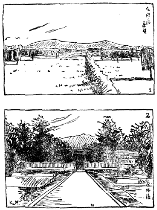
第六十三圖 仁徳天皇百舌鳥耳原中陵
大阪府堺市東郊
（１）遠望 （２）御拜所
仁徳天皇の
御陵と、
應神天皇の
御陵とは、その
大きさが
優れてゐるばかりでなく、
歴史上から
見ても
最もたしかなもので、これが
標準になつてわれ／＼は、その
頃日本に
前方後圓の
塚が
盛んに
行はれ、そして
埴輪が
飾られてをつたことなどを
知ることが
出來るのであります。それゆゑ
考古學の
上からも
最も
貴重な
御陵と
申さなければなりません。
それから
六七代の
間、かの
佛教が
日本にはひつて
來た
時分、
敏達天皇頃［＃ルビの「びだつてんのうころ」は底本では「びんたつてんのうころ」］までは、
少し
形は
小さくなりましたけれども、やはり
御陵はみな
前方後圓の
塚でありました。ところが
用明天皇、
推古天皇、すなはち
聖徳太子の
頃の
天皇から
天智天皇頃までは、
支那の
影響を
受けた
四角な
塚が
御陵に
行はれて、まったく
樣子が
變つて
來ました。いま
申した
天皇樣の
御陵はたいてい
大和から
河内などにありますが、
天智天皇御陵は
山城の
國京都の
東の
方にありまして、
四角の
塚で
上部が
圓くなつてゐるといふことであります。この
天智天皇御陵にかたどつて、
明治天皇、
昭憲皇太后［＃「昭憲皇太后」は底本では「照憲皇太后」］、
大正天皇の
御陵などもつくられたといふことであります。あなた
方はこの
御陵へは
參拜したことがありませうが、あゝいふ
風に
出來てをつたのです。
その
後奈良朝から
平安朝の
始めの
御陵になりますと、また
昔にかへって
圓い
形の
塚になりました。そして
佛教が
盛んになつて
來てからは
御陵は
一そう
簡單になり、また
後には
火葬が
行はれまして、
小さな
御堂や
石の
塔を
御陵に
建てることになり、ことに
武家が
勢力を
占めるに
至つた
時代からは、
皇室の
御陵は
甚だ
小さなものになつてしまつたのです。それに
引きかへて
日光にある
徳川氏の
廟があのとほり
立派なのを
見て、
蒲生君平などが
憤慨して
尊王の
念を
起したので、まことにむりのないことであります。それはとにかく、われ／＼は
日本の
古い
時代の
御陵を
巡拜すれば、
一方日本［＃ルビの「につぽん」は底本では「たつぽん」］の
古墳の
造り
方の
變遷をも
知ることが
出來、
歴史の
研究にも
非常に
役に
立つわけでありますから、
私は
皆さんがたゞ
高い
山などに
登るばかりでなく、
遠足のときにはかういふ
方面へも
出かけることをおすゝめいたします。
さて
話は
前に
戻り
古墳の
中には、どういふものが
埋められてゐるかと
申しますと、
石棺あるひは
石室の
中、
死體を
收めてあつた
所、しかももっともその
體に
近いところにあるものはその
人の
身につけてあつた
著物と
飾り
物とであります。しかし
著物はみな
腐つてしまつて
殘つてをりませんが、
飾り
物の
中で
一番眼に
立つのは、まづ
勾玉その
他の
玉類であります。これはたいてい
堅い
石か
がらすで
造つてあるので、その
色もかはらず
完全に
保存せられてをり、それで
發掘されたとき、
誰にでもすぐに
目につき
發見されやすいのであります。
これらの
玉類は、もとは
結びつらねて、
頸から
胸あるひは
手頸、
脚頸などに
［＃「脚頸などに」は底本では「脚頸なとに」］めぐらしたものであることは、
埴輪人形に
現されてゐるのを
見てもわかります。
さて
玉類の
中でも
一番大切なものは
勾玉であります。
勾玉が、
八坂瓊の
勾玉と
申して、
三種の
神器の
一つにも
數へられてゐることは、
皆さんもよく
知つてをられるでせうが、この
玉の
形は
頭が
圓くて
尻尾が
曲り、ちょっと
英語の『
，』のような
形をしてゐます。
大きなものになりますと、
長さが
三寸にも
達するものもありますが、
普通は
一寸から
一寸五分前後のものであります。そしてその
石は、ごく
古い
時分には、
日本に
産出しない
支那傳來の
硬玉（
翡翠、
青瑯
）といふ
半透明の
美しい
緑色の
石で
作られてあつて、なか／＼
綺麗なものでしたが、やゝ
後の
時代になると、
出雲の
國あたりから
出る
碧玉といふ
青黒い
石が
用ひられ、さらに
後になると、
赤い
瑪瑙が
普通に
使はれるようになりました。またこの
一番後の
時代、
奈良朝ごろになると、
勾玉の
形がコといふ
字の
形のように、
角ばつて
美しくありませんが、
古い
時代の
勾玉はなか／＼
優美な
形をして、その
頭の
孔のところに、
三つ
四つの
切り
目がつけてあるのが
普通です。この
切り
目を
丁字頭と
申します。ですから
皆さんは
勾玉を
見ても、どういふのが
古いか、またどういふのが
新しいかを、それで
知ることが
出來るのであります。また
近頃作つた
新しい
勾玉の
模造品は、その
孔が
眞すぐに
筒形にあいてゐますが、
古い
勾玉はたいてい
一方あるひは
兩方から
圓錘形に
近い
孔が
開いてをり、この
孔のあけ
工合でも、ほんとうに
古いものか、
僞物であるかゞわかるのであります。
勾玉は、
昔も
非常に
貴重にされたものと
見えて、
日本では
一つの
古墳から
餘りたくさん
發見せられません。これに
反して、わりあひにたくさん
出てくるのは
管玉といふ
玉です。これは
管の
形をした
筒形の
玉でありまして、その
長さは
一寸前後のものが
普通です。
石はみな
出雲から
出る
碧玉で
造つてあります。
昔は
管玉のことを
たか玉といつたのですが、それは
竹玉といふ
意味であつて、この
青い
碧玉を
用ひたのは、ちょうど
青竹を
切つて
使つたのをまねたからだといはれてをります。なほ
管玉の
中でごく
古いものには、
非常に
細くて、
直徑が
一分前後のものが
多いのでありますが、
時代がやゝ
降りますと、だん／＼
太くなつてまゐります。
管玉の
次ぎにたくさん
出るものに、
切り
子玉といふのがあります。これはほとんどみな
水晶で
造つてありまして、
六角あるひは
八角の
方錘形を、
底の
方で
二つつないだ
恰好になつてをります。その
他の
玉類には
棗玉、
丸玉、
平玉、
小玉など、いろ／＼の
種類がありますが、これらの
小さい
玉は
多く
紺色、あるひは
緑色の
がらすで
造つてあるのが
普通であります。これによつても、この
時分からすでに
色がらすがつくられたことがよくわかりますが、
無色透明の
板がらすはまだ
世界中どこにもありませんでした。かような
玉は
古墳が
發掘せられたとき、たいてい
土の
中に
混つてゐますから、すぐに
見つからないことがあります。それで
土を
篩にかけてよく
探さなければなりません。（
第六十四、
五圖）
［＃「第六十四圖 日本古墳發見勾玉」のキャプション付きの図（fig18371_65.png、横×縦）入る］
第六十四圖 日本古墳發見勾玉
［＃「第六十五圖 日本古墳發見玉類及び金裝耳飾り」のキャプション付きの図（fig18371_66.png、横×縦）入る］
第六十五圖 日本古墳發見玉類及び金裝耳飾り
いま
申した、いろ／＼の
種類の
玉の
中で、
勾玉は
日本以外では、たゞ
朝鮮の
南方から
出るだけで、
他の
國ではほとんど
發見せられませんから、まづ
日本獨特の
玉といふことが
出來ます。ところがこの
面白い
勾玉の
形が、どうして
出來たのであるかといひますと、
昔の
人が
狩りをして
獸をとり、その
牙や
齒に
孔をあけて
飾りにした
風習が
傳はつて、その
牙や
齒の
形の
曲つたのをまねて、
次第に
勾玉の
美しい
形になつたのだと、
多くの
學者はいつてをります。かういふ
孔をあけた
獸類の
牙や
齒は、
日本の
石器時代の
遺跡や、また
外國の
遺跡からもずいぶんたくさん
發見せられますが、
勾玉のように
美しい
形の
玉は、
外國ではまったく
見られません。また
玉を
體につけて
飾る
風習は、
世界いづれの
國にもありますが、
日本は
支那などに
比べて、よけいに
玉を
愛したと
見えて、
支那の
墓からはそれほどたくさんの
玉が
發見せられることはありません。なほ
玉類のほかに
體へつけた
裝飾品には、
金鐶といふ
銅に
めっきをした
環がありまして、これはたいてい
一對づゝ
出るので、
多分耳飾りなどに
使つたものと
思はれます。またこの
鐶に
はーと型などの
細かい
飾りがぶら
下つてゐる、
立派な
耳飾りが
時々出ることがありますが、これは
南朝鮮の
古墳からたくさん
發見せられるもので、
朝鮮風のものといふことが
出來ます。（
第六十五圖）
古墳から
銅で
作つた
鏡がたくさん
出ますが、ことに
古い
時代の
古墳には
多數の
鏡を
棺の
中に
入れてあるのでありまして、
時には
一つの
古墳に
十枚二十枚或はそれ
以上あることもあります。そして、その
鏡はたいてい
支那で
出來たものであり、
時にはまた
日本で
作つた
鏡もありますが、それもまったく
支那の
鏡をまねて
作つたものであります。ところが
支那製の
鏡は
皆、その
頃大陸から
輸入されたものでなくてはなりませんが、
不思議なことには
朝鮮の
南、
昔の
新羅の
國の
古墳は
日本の
古墳とよく
似てゐて、その
中から
勾玉のような
日本特有のものも
出るにかゝはらず、
鏡に
至つてはほとんどまったく
發見せられないのです。
王樣の
墓と
思はれる
立派な
墓でも、
鏡は
一枚も
掘り
出されないのは、
實に
奇妙に
思はれますが、まさか
新羅の
人でも
鏡を
使はず、お
化粧をしなかつたとは
思はれませんので、
鏡は
用ひてゐたけれども、
死人の
棺の
中に、
何かの
理由で
入れなかつたものと
考へられます。しかし
次ぎの
高麗といふ
時代の
墓からは
鏡がたくさん
出ます。とにかく
鏡は
昔支那でも
顏を
寫すばかりのものではなく、これを
持つてゐると、
惡魔を
除けるといふような
考へがあつたので、
墓に
收めたのもさういふ
意味があつたかも
知れないのです。かように
新羅の
人は
鏡を
使つたにしても、
墓に
埋めないから、
支那からたくさんの
鏡がはひつて
來たとは
思はれません。それゆゑ
日本へ
來た
支那の
鏡は、
朝鮮を
經ないで
恐らく
南支那邊から、
直接に
來たものと
思はれます。
さて
支那では
周のすゑ
秦の
時代頃から、
鏡が
作られてゐたらしいのでありますが、
漢の
時代になつてから
非常にたくさんに
作られ、
六朝時代を
經て
唐の
時代まで、
盛んに
立派な
鏡が
現れましたが、その
後宋の
時代からは、だん／＼
拙い
粗末なものになつてしまひました。また
鏡の
形は
唐の
時代頃までは
多く
圓い
鏡でありまして、あの
花瓣のように
周圍が
切れてゐる
八稜鏡とか
八花鏡といふ
形の
鏡は、まったく
唐の
時代になつて
初めて
出來たものであり、また
柄のついた
鏡や
四角な
鏡も、
唐や
宋以後のものであります。それに
世間では
三種の
神器の
中にある
御鏡を、
八稜鏡のような
恰好のものと
思ふ
人があるのは
間違ひで、もちろん、たれもこれを
拜した
人はないのでありますが、
古い
時代の
鏡でありますれば、
必ず
圓い
鏡でなければなりません。（
第六十七圖）
［＃「第六十六圖 日本支那古鏡」のキャプション付きの図（fig18371_67.png、横×縦）入る］
第六十六圖 日本支那古鏡
［＃「第六十七圖 日本支那古鏡」のキャプション付きの図（fig18371_68.png、横×縦）入る］
第六十七圖 日本支那古鏡
さて
古墳の
中から
出る
鏡は、ちょうど
漢から
六朝時代の
鏡でありまして、その
裏面、
顏を
寫す
面の
反對面には、たいてい
圓い
鈕があつて、その
周圍にはいろ／＼の
模樣が
刻まれてゐます。
時代が
變るに
從つてこの
紋樣もだん／＼
變つて
行くのでありますが、
漢の
時代の
鏡には、
曲線や
直線をあつめた
模樣や、
寫生的でない
動物の
形などが
現れてをります。そこに
竝べてある
鏡を
御覽になればよくわかりますが、かような
模樣をつけた
支那の
鏡は
非常によく
出來てゐますのに、その
頃日本で
出來た
鏡はまだ
作り
方が
拙いので、
大へん
見劣りがいたします。
例へば
模樣の
中にある
支那文字でも、
日本製の
鏡にはなんだかわからない
字の
形になつたり、
模樣もはつきりいたしません。それでこれをよく
見ますと
日本製か
支那製かの
區別はわかるのであります。またそれらの
鏡をお
墓に
入れるときには、はじめは
袋のようなものに
納めて
入れたに
相違なく、いま
發見される
鏡の
端に
腐つた
布の
はしが
着いてゐるのを
見ても、それを
知ることが
出來ます。（
第六十六圖）
古墳からは、
漢から
六朝頃までの
鏡と、それを
摸造した
日本製の
鏡とが
出るだけで、
唐以後の
鏡はほとんど
發見されないといつてもよろしい。しかし
鏡は、もちろんその
頃でも
用ひられてゐたので、たゞ
墓へ
餘り
入れなかつたものと
思はれます。しかし
日本では
平安朝以後になりますと、
唐の
鏡の
模樣をだん／＼
變化させて、
遂にはまったく
日本的のごく
優美な
模樣をつけた
鏡を
作るようになりました。さういふ
鏡は
古墳からは
出ませんけれども、
經塚といつて、お
經などを
埋めた
後の
時代の
塚からよく
發見されます。
前には
日本製の
鏡は
支那製に
比べて
非常に
拙かつたのが、この
平安朝から
足利時代になつて、
支那の
同時代の
鏡と
比べて、かへって
巧く
出來、なか／＼
優れたところがあるのであります。この
日本製の
鏡を
和鏡と
申してをります。つまりそれは
日本がその
時代になつて、だん／″＼
文化が
進んで
技術も
秀れて
行つたことを
示す、
何よりもよい
證據であります。
いまお
話した
古墳から
出る
鏡は
青銅で
作つてあるので、
青色の
錆が
出てをつても、
腐つたものは
少く、たいてい
壞れないで
土の
中から
出て
來ます。ところが
古墳に
入れてあつた
刀や
劍の
類になりますと、その
數は
非常にたくさんありますが、
中身がみな
鐵ですから
赤錆になつて、ぼろ／＼に
腐つてしまひ、
完全に
取り
出すことはよほど
難しいのであります。たゞ
鞘の
上に
飾つてあつた、
金めっきをした
銅などの
部分だけが、わりあひによく
殘つてゐるだけであります。さてこの
時分の
刀劍の
身は、みな
眞すぐで、
後の
時代の
刀のように
反りがありません。また
源頼朝や
義經などの
時代から
後になりますと、
皆さんも
知つてゐるとほり、
日本刀といふものが
盛んに
作られて、
支那へも
輸出されたくらゐでありましたが、この
古い
時代ではかへって
支那や
朝鮮からよい
刀劍が
輸入されたであります。
刀劍の
身の
形は、たいてい
大した
違ひはありませんが、
柄の
形にはいろ／＼
異つたものがありまして、そのうち
珍しいものには、『くぶつち』の
劍といふのがあります。これは
柄の
頭が
槌の
頭、あるひは
拳を
曲げたような
形をしてゐるもので、
多くは
金めっきをした
銅で
出來て、
非常にきれいなものであります。かういふふうな
作りの
劍は、
支那にも
朝鮮にも
見つかりませんので、まづ
日本で
初めて
出來たものだらうと
思はれます。その
次ぎに
環頭の
劍といふのがあります。これは
柄の
頭のところが
環の
形をして、その
中に
鳥や
獸や、あるひは
花の
形がついてゐるものであります。この
種類のものは
朝鮮や
支那からも
出ますので、
多くはかの
地から
日本へ
輸入して
來たものか、またそれを
摸造したものであると
思はれます。それからまた、
日本で
作られたと
思はれるものに、
蕨手の
劍といふのがありますが、これは
大きな
劍にはなくて、
小さい
刀にたくさんありまして、
柄の
頭が
蕨のように
曲つてゐるものであります。（
第六十八圖）
［＃「第六十八圖 日本古墳發見刀劔」のキャプション付きの図（fig18371_69.png、横×縦）入る］
第六十八圖 日本古墳發見刀劔
以上述べた、いろ／＼の
刀劍の
拵へは、たいてい
金めっきをした
銅で
作つたものであつて
［＃「あつて」は底本では「あつつて」］、その
中には『くぶつち』のように
日本獨特の
拵へもありますが、
多くは
支那朝鮮のもの、もしくはそれをまねたもので、かような
外國風のものを、その
時分の
人が
喜んで
用ひたのはむりもありません。しかしまた
一方には、
日本に
古くから
行はれてゐた
作りの
刀劍もやはり
用ひられてゐたものであります。
例へば
劍の
柄のところを
鹿の
角で
裝飾し、その
上に
外國では
見られない
直線や
弧線の
組み
合せた
模樣をつけた
日本風な
刀劍が、
外國的な
刀劍と
同時に
用ひられてゐたのであります。これはそれらの
刀劍が
同じ
墓から、
一しょに
發見されることでよくわかります。
昔の
人は、
今日田舍の
樵や
農夫が
山へ
行く
時に、
鎌や
斧を
腰に
着けてゐるように、きっと
何か
刃物を
持つてゐたものと
思ひます。また
皆さんが
學校へ
行く
時、
鉛筆をけづつたりする
場合に
ないふが
必要であるように、
昔の
人も
常に
小刀を
持つてをりました。その
小刀を
刀子と
申しますが、それが
墓場からたくさん
發見されます。この
刀子は
男ばかりでなく、
女の
人もお
守りに
持つてゐたと
思はれますが、その
鞘は
木でつくつたものゝほかに、
毛のついた
皮を
縫ひ
合せてつくつたものが、
一般に
行はれてゐたようです。そしてお
墓の
中にほんとうの
刀子を
納めたばかりでなく、
石でつくつた
刀子で、ちょっと
見るとなんの
形だかわからぬ
形をしたものをも、たくさん
埋めたのでありました。それがやはり
古墳から
出て
來るのであります。（
第七十三圖）
さて
刀劍が
出るくらゐでありますから、
甲胄もまた
墓の
中からたくさん
出て
來るのです。これはたいてい
鐵で
作つたものでありまして、
後の
時代の
鎧や
劍道のお
胴に
似たようなものであります。なにぶん
薄い
鐵の
板でつくり、これを
革の
紐で
結び
合せたものでありますから、
今ではぼろ／＼に
壞れて、
完全に
遺つてゐるものは
稀であります。もちろんこの
鐵の
甲胄の
他に、
革製のものもあつたと
思はれますが、これはとっくに
腐つてしまひ、
今は
殘つてをりません。しかし、これらの
甲胄をどういふふうに
着けてゐたかといふことは、あの
埴輪人形に
甲胄を
裝ふたのが
遺つてをりますので、それを
見て
大體の
恰好を
想像することが
出來ます。（
第六十九圖）
［＃「第六十九圖 日本古墳發見甲胄」のキャプション付きの図（fig18371_70.png、横×縦）入る］
第六十九圖 日本古墳發見甲胄
たゞ
今までお
話をしました
玉や
鏡や
劍などは、たいてい
古墳の
中にある
石棺の
内か、
石室の
中の
死體のごく
側に、
收めてあつたものでありますが、なほ
石棺の
外や
石室の
中には、その
時代の
人たちの
用ひてゐたいろ／＼の
品物が
收めてあります。その
中でもまづ
眼につくのは、
馬に
使つた
馬具の
類であります。これには
鐵で
造つた
轡だとか
鞍だとか、その
他のものがありますが、
轡には
兩側の
鏡板といふ
部分にいろんな
飾りがついてをります。また
鞍にも
金めっきした
透し
彫りの
美しい
飾りがあります。それから
鞍から
馬の
胸のところや
尻の
方に
廻つて
行く
革の
帶には、
杏葉といふ
飾りがつけてありまして、その
飾りはたいてい
鐵の
上に
金めっきをした
銅を
張りつけ、
美しい
唐草などの
模樣が
透してあります。またこれに
鈴がついてゐるのもあつて、
餘程うまく
出來てをります。そのほか、
馬鐸といつて
杏葉と
一しょに、ぶら
下げる
鈴のようなものもあり、
鈴が
三つ
聯なつた
珍しい
形のものもあります。（
第七十圖）
［＃「第七十圖 日本古墳發見馬具」のキャプション付きの図（fig18371_71.png、横×縦）入る］
第七十圖 日本古墳發見馬具
元來馬は
日本の
石器時代の
貝塚からその
骨が
掘り
出されるので、
古くから
日本にゐたことがわかりますが、しかし
本當に
乘馬に
使ふ
良い
馬は、やはりその
後朝鮮あたりから
輸入されたものでありませう。それで
馬具も
馬と
一しょに、
朝鮮支那などで
用ひてゐたものをそのまゝ
日本で
使つたらしいのです。これらの
馬具をどういふ
風に
着けたかといふことは、あの
埴輪の
馬を
見ればよくわかります。
日本書紀といふ
古い
歴史の
本に、
次ぎのような
話が
書いてあります。むかし、
雄略天皇の
御時、
河内の
安宿郡の
人に
田邊伯孫といふ
人がありまして、その
娘が
古市郡の
人へかたづいてゐましたが、ちょうど
赤ちゃんを
産んだので、
伯孫はお
祝ひにその
家へ
行きました。その
歸りがけ、それは
月夜の
晩のことでありましたが、あの
應神天皇（
伯孫の
時から
百年ほど
前に
當る）の
御陵の
前を
通りかゝると、
非常に
立派な
赤い
馬に
乘つてゐる
人に
出會ひました。
自分の
馬はのろくてとても
叶ひませんので、その
馬をほしく
思ひ、いろ／＼
話をして
馬を
取りかへてもらひ、
喜んで
家へかへりました。ところが
翌日厩へ
行つてその
赤馬を
見ますと、
驚いたことには、それは
土の
馬でありました。これはへんなことだと、
伯孫はゆうべの
應神天皇の
御陵の
所へ
行つて
見ましたら、
自分の
乘つてゐた
馬は、
御陵の
前にある
埴輪の
土馬の
間にをつて、
主人をまつてゐたので
［＃「まつてゐたので」は底本では「まつてるたので」］、またびっくりしましたが、やうやくその
馬と
土馬と
取りかへて
家へつれて
歸つたといふ
面白い
うそのような
話であります。これはその
時分河内の
役人から
朝廷へ
報告した
事實でありまして、とにかく
當時馬に
乘ることが
行はれてをり、また
埴輪の
馬が
御陵に
立つてゐたことを、われ／＼に
教へてくれる
話であります。
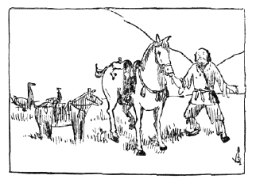
第七十一圖 田邊伯孫譽田陵に馬を求む
馬具のほかに、
古墳からたくさん
出るものは
土器であります。しかし、この
土器はごく
古い
古墳からは
餘り
發見せられず、
石室の
出來た
頃からの
古墳にたくさん
收められてをり、
一つの
墓から
時には
五六十も
一度に
土器の
出て
來ることがあります。それらの
土器の
燒き
方は、
前に
申した
彌生式土器に
似たところの
赭い
色の
軟かい
素燒きのものもありますが、たいていは
鼠色をした、ごく
硬い
陶器とでもいへる
燒き
物であつて、
私どもはこれを
いはひべ（
祝部）
土器と
呼んでをります。この
燒き
方は
朝鮮からはひつて
來て、
日本にだん／＼
行はれるようになつたのでありまして、その
形はいろ／＼あります。
例へば
坏といふ
平たいお
椀のようなもの、それに
蓋のついたもの、またその
坏に
高い
臺のついた
高坏といふようなものなどたくさんありますが、それらはふだん
食事のときに
御馳走を
盛つた
道具だと
思はれます。そのほか、
壺にも
頸の
長いのや
短いのや、いろ／＼あります。また
酒や
水が
五六升もはひるような
大瓶があり、
珍しい
恰好のものには、
丈の
高い
透し
入りの
壺をのせる
臺だとか、
壺と
臺とくっついてゐるものだとか、
口の
周りに
人間や
馬の
小さい
形をつけた、
飾りつきの
壺だとか、また
口のついた
しびんのような
形をしたものもありますが、なかにも
不思議なのは
はさふといふ
器物です。それは
小さい
壺の
上に、
朝顏形に
開いた
長い
口があり、
壺の
横に
小さい
孔がついてゐるものです。
何に
使つたのかよくわかりませんが、ある
人はその
孔に
小さい
竹の
管を
差し
込んで、
中にある
水とか
酒とかを
吸つたものだらうといひます。あるひはさうかも
知れません。また
横に
長い
俵のような
恰好をして、そのまん
中に
口をつけた
横瓮といふ
壺がありますし、ひらべったい
壺で
紐をつける
耳と
口のついた
提げ
瓶といふのがありまして、これはちょうど
今日あるみにゅーむ製の
水筒と
同じように
水を
入れて
提げたものに
違ひはありません。ちょうど
皆さんが
遠足に
行くときに
用ひる
水筒と
同じものでありますが、これは
初めは
獸の
皮で
作つた
水袋からその
形が
出て
來たのです。それで
皮の
縫ひめなどをちゃんと
現した、
皮袋形の
土器が
時々發見せられます。そのほか
今日では
使ひ
方のわからないような
品物もたくさん
出るのでありますが、これを
前に
皆さんと
一しょに
見ました
石器時代の
土器に
比べますと、
大體があっさりとし、その
飾りにしても、ごて／＼した
［＃「ごて／＼した」は底本では「ごて／＼し」］曲線模樣などはなく、その
形もたいてい
一定してをります。かういふ
點から
見ますと、これらの
土器は
恐らく
專門の
土器製造人が、その
工場で
作つたのを
各地に
賣り
出したものにちがひありません。それで
美術的な
目的よりも、まったく
實用的になつたものが
多いことがわかります。（
第七十二圖）
［＃「第七十二圖 日本古墳發見祝部土器」のキャプション付きの図（fig18371_73.png、横×縦）入る］
第七十二圖 日本古墳發見祝部土器
古墳から
普通發見せられるものは、
今まで
述べたようなものでありますが、その
他に、
時々發見せられるものには、
銅に
金めっきをした
冠や、また
同じく
銅製めっきの
靴があります。これは
後ほどお
話をする
朝鮮の
古墳からも
出るもので、かような
靴や
冠は、もちろん
平生使つたものでなく、
儀式のときなどに
用ひたものでありませう。また
今日の
下駄によく
似て
鼻緒の
前の
孔が
右足は
左に、
左足は
右にかたよつて
出來た
石の
下駄が
出て
來ることがあります。これも
平生は
木の
下駄をはいたものでありませうが、この
時分の
人は
多くは
草履や
草鞋のほかに
皮で
作つた
靴を
履き、またこんな
形の
下駄を
雨ふりなどには
履いてゐたことがわかります。さうすると
私共の
下駄はずいぶん
古くからあることがわかつて、なんと
面白いではありませんか。また
同じような
石で
作つた
品物に
鍬の
形をしたものや、
腕輪の
形をしたものなどが
出て
來ますが、この
中には
果して
何に
使はれたものか、よくわからないものも
多くあるのです。（
第七十三圖）
［＃「第七十三圖 日本古墳冠靴その他」のキャプション付きの図（fig18371_74.png、横×縦）入る］
第七十三圖 日本古墳冠靴その他
私達は
今まで
日本の
古墳と、その
中から
發見せられる
樣々の
遺物を
見てまゐりましたが、これ
等の
品物は、みなこの
古い
時代の
人の
作つた
美術品工藝品であつて、このほかに
別に
美術も
工藝もないわけでありますが、いま
改めてそれ
等のものから、
特にこの
時代の
建築はどんなものであつたか、
彫刻、
繪畫はどんなものであつたかを、
述べて
見ることにいたしませう。
第一に
建築は、
古墳の
石室なども
一種の
建築ではありますが、
人間の
住み
家などの
類はどういふふうなものであつたかといふと、
前にも
申したとほり、
屋根は
草葺き、
茅葺きあるひはまた
板葺き、
柱は
圓い
材木をそのまゝ、あるひは
皮をむいて
用ひ、
柱の
下には
礎もない、
掘立て
小屋といふふうなものであつたので、
今日その
跡はなにも
殘つてをりません。それゆゑ、これはたゞあの
埴輪の
家や、そのほかの
品物に
現れてゐる
家の
形と、
歴史や
歌の
書物に
書いてあるところで
想像するほかには、
今なほ
神社や
民家に
殘つてゐる
古い
作り
方を
參考にするほかはありません。また
倉のような
建て
物は、
多くは
今日も
奈良の
正倉院の
御倉などに
見るような、
木を
組みあはせた
校倉といふものであつたと
思はれます。
その
次ぎに
彫刻といふものはなんであるかといふに、これは
埴輪の
人形や
動物の
像または
石人石馬などがそれであります。もちろんあの
埴輪は、お
葬式の
時に
作つて
墓場に
立てたもので、
非常に
骨ををつて
作つたものではありませんが、その
粗末な
下手な
作り
方のうちにも、この
時代の
人の
無邪氣な
素直な
心持ちがよく
現れてをります。かういふ
埴輪の
人形を
作つてゐる
時に、
朝鮮から
佛教が
傳はり、お
釋迦さま、
彌勒さま、
觀音さまのような
佛樣の
像が
持ちこまれたのですから、
驚いたのはむりもないのです。これは
立派なお
姿だと
感心して、
佛教を
信ずるものも
多く
出來たのですが、そのうち
日本でも
佛像を
作るようになり、それから
百年もたゝない
奈良朝ごろになつては、その
本家である
支那朝鮮の
佛像にも
優るとも
劣らない、
立派な
彫刻が
出來たのであります。
それではこの
時代の
繪畫といふものは
殘つてゐるかといひますと、もちろん
襖や
唐紙に
描き、
掛け
軸にした
繪などは、この
時代にはないばかりでなく、またあつたからとて
今日まで
殘つてゐるはずはありません。またあのヨーロッパの
舊石器時代の
大昔のように、
洞穴に
描いたすばらしい
動物の
畫などはまったくなく、たゞ
銅鐸の
上に
現してある
簡單な
子供が
描いたような、しかし
非常に
面白い
人物動物家屋の
圖などの
他には、
祝部土器やその
他の
品物、または
古墳の
石室横穴の
中の
壁などに
彫りつけた、まことに
粗末な
人物や
盾、
矢筒などの
品物の
圖が
少し
殘つてゐるだけでありまして、ごく
昔の
日本人はけっして
繪が
上手であつたとか、
好きであつたとはいふことが
出來ないのです。しかし、それは
生れつき
下手であつたといふわけではない
證據には、
後に
支那朝鮮から
繪畫が
傳はつて
來ると、すぐにそれを
習つて、
非常に
立派なものを
作り
出すことになつたのであります。
次ぎに
裝飾模樣の
類も、
石器時代の
土器にあるような、
曲線のごて／＼した
模樣のまったくないことは、
前に
申したとほりで、たゞ
簡單な
圓や
三角の
圖の
他には、
刀劍の
柄の
飾りにあつたような、
直線と
弧線とを
組み
合せた、
不思議な
模樣が
目につくだけです。この
模樣はまづ
日本にしか
見られないもので、
古墳の
内部やその
他の
品物にもよくつけてあるのですが、
餘り
珍しいので
近頃西洋あたりで
流行する
模樣かと
思ふ
人があるくらゐです。（この
本の
表紙畫を
御覽なさい）この
他馬具や
何かに
支那朝鮮から
傳はり、あるひはそれをまねた
品物に、
支那朝鮮風の
模樣がついてゐるものもありますが、それはこの
時代には、まだほんの
借りものに
過ぎなかつたのでした。
かういふふうに
古墳から
出る
品物を
見て、われ／＼はその
時分の
人々が、どういふ
心持ちでをつたか、どういふ
趣味を
持つてをつたかといふことがわかり、また
支那あたりからはひつて
來た
文化のほかに、
昔から
日本人が
持つてをつた
固有の
文化や
趣味が、やはり
殘つてゐたことが
知られるのです。これは
近頃西洋の
文明がはひつて
來ても
同じことで、いかに
西洋風を
習つても、ある
點には
日本人には
日本人らしい
趣味と
特質が、
消えないのであります。またそれがなくなつては、
日本人でなくなるのですから
大へんです。
またこれらの
古墳から
出た
品物を
調べて
知られることは
幾らもあります。
例へば
昔の
人はどういふ
生活をし、どういふ
風俗をしてをつたかといふことも、
書物だけでははっきりわからぬことを、よく
知ることが
出來るのですから、
古墳をやたらに
掘つたりすることは
惡いことでありますが、
何かの
拍子に
壞れたりして、
中から
物が
出た
時には
大切にこれを
保存し、
丁寧にこれを
調べなくてはなりません。そしてかういふことを
調べる
人が
考古學をやる
學者なのです。なほ
昔の
風俗や
生活のあり
樣については、
詳しいことをこゝでお
話しする
時間もなく、
皆さんが
歴史の
本や
他の
先生から
教はることゝ
思ひますから、
今日はこれだけでよして
置きます。
［＃「第七十四圖 銅鐸の模樣畫」のキャプション付きの図（fig18371_75.png、横×縦）入る］
第七十四圖 銅鐸の模樣畫
［＃「第七十五圖 日本古墳裝飾模樣圖」のキャプション付きの図（fig18371_76.png、横×縦）入る］
第七十五圖 日本古墳裝飾模樣圖
日本の
古墳から
發見されてゐるいろ／＼の
品物は、
皆さんと
一しょに
見てまゐりましたが、この
日本の
古墳と
非常によく
似てゐる
朝鮮などの
古墳についても、この
博物館に
參考として
少しばかり
品物や
摸型を
竝べてありますから、それらを
見なければなりませんが、その
前に、こゝにあります
日本から
出る
古い
瓦を、ちょっと
見ることにいたしませう。
日本の
古墳が
造られた
時代の
終りの
頃には、もはや
朝鮮をへて
日本へ
佛教がはひり、それと
一しょにお
寺の
建築が、だん／＼
出來かけてをりました。あの
大和の
法隆寺などの
大きい
伽藍が
出來た
時分に、
今まで
私共の
見て
來た
古墳がなほつくられてをつたのであります。ところが
支那のごく
古い
古墳には、
墓の
前にお
靈屋のような
建築があつたものもあり、それに
使つた
古い
瓦などが
發見せられるのでありますが、
日本ではそんなものは
一こうありません。しかし、この
日本のお
寺の
瓦は、
前に
申した
祝部土器とほとんど
同じ
作り
方の、
堅い
鼠色の
燒き
物であつて、それは
前に
申したとほり、
朝鮮からその
製法が
傳へられたのでありました。この
古い
瓦が
古いお
寺の
境内や、
古いお
寺のあつた
場所で
今は
畑となつてゐるところから、よく
掘り
出されるのであります。それで
皆さんも
古墳を
見に
行つたり、
石器を
採集に
出かけたりするときには、さういふ
古い
瓦を
拾ふこともありませうから、
瓦の
話を
少し
知つて
置くのも、まったく
無用ではありますまい。
あの
支那では
漢の
時代ごろには、
圓瓦の
先に
模樣や
文字がつけてありました。
瓦のこの
部分を
瓦當と
呼んでゐます。
中にはまたまんまるでなく
半圓形のものもあります。しかし
平瓦、
後には
唐草などが
飾りにつけてあるところでありますから、これを
唐草瓦といひますが、その
端にはたいてい
模樣がつけてありませんでした。
日本の
瓦はちょうど
支那の
隋といふ
時代に、
朝鮮から
輸入せられたものでありまして、
圓瓦の
端には
蓮華の
模樣を
飾りにつけてあり、
唐草瓦にも
蔓草の
模樣などがつけてあります。その
蓮華の
模樣も
中央の
實の
方が
非常に
大きい
形のものもあり、
花瓣の
恰好も
大そう
美しく、
蔓草の
形も
非常によく
出來、その
彫りかたも
強く
立派であります。また
瓦は
一體に
大へん
大きく、
今日の
瓦の
二倍くらゐもあります。またその
竝べ
方も
今日とは
少し
違つてをりました。
聖徳太子の
時代（
飛鳥時代といひます）に
用ひられた、かういふ
立派な
瓦も、だん／＼
時代をふるに
從つて
粗末となり、
聖武天皇の
頃（
奈良時代あるひは
天平時代といふ）を
過ぎては、
模樣は
拙く
意匠のまづいものになつてしまつたのは、
不思議なことであります。それは、かような
大きい
瓦は
屋根を
葺くには
重すぎるので、
後には
輕い
瓦を
作るようになつたことゝ、
瓦師もなるだけ
安いものをたくさんに
造らうとしたので、
惡いものが
出來て
來たものでいたしかたがありません。
私共はこの
瓦の
形と
模樣が、
時代々々に
異なつてゐるのを
見て、その
建築が、いつの
時代のものであるかといふことがわかるので、
美術や
歴史の
上から
見て
非常にためになることでありますが、そのお
話をするとあまり
長くなりますから、
今はやめて
置きます。また
別の
先生方からお
聞きになる
場合がありませう。なほ
古いお
寺のあつたところには、
瓦のほかに
大きな
柱の
礎石が
殘つてゐることもあります。この
礎の
竝べ
方を
見て、そこにはどういふ
形の
御堂が
建つてゐたかゞ
知られます。もちろんこの
時分のお
寺の
建築で、
今日もなほ
昔の
礎の
上に
立つてゐるものも、たまには
珍らしく
殘つてゐます。あの
法隆寺の
金堂、
五重の
塔中門などが
一番古いもので、
千何百年も
長いあひだ
木造の
建築がそのまゝ
傳はつてゐるといふことは、
世界にも
餘り
例のないことです。その
次ぎに
古いのは
奈良の
西にある
藥師寺の
塔、それから
聖武天皇頃の
建て
物が
奈良にちょい／＼
殘つてをります。これ
等のお
寺をよく
見ると、
皆さんはいろ／＼
造り
方の
違つてゐる
點がわかり、また
昔の
建築がいかにも
良く
出來てゐることに
氣がつくのですが、この
建築のお
話もまた
別の
時にすることにいたします。
しかしこゝでちょっと
申して
置くことは、かういふお
寺の
建築が
支那朝鮮から
傳はり、
天皇の
御殿や
貴族の
家屋もさういふふうに
作られるようになりましたが、
人民の
家などはたいていやはり
昔のまゝの
形に
造られたと
思はれますし、ことに
伊勢大神宮や
出雲の
大社のような
神社は、ごく
古い／＼
時代の
日本の
家の
形をそのまゝに
作ることゝなつてをつたのです。そして
今日なほ
大神宮は
［＃「大神宮は」は底本では「太神宮は」］なんべん
建てかへても
形だけは
昔のまゝに、
屋根は
茅葺き、
柱は
掘立て、そして
白木のまゝで、
高く
ちぎと
かつをぎが
屋根の
上についてゐて、いかにも
埴輪の
家の
形を
思ひ
出させるのは、なんと
神々しいことではありませんか。
［＃「第七十六圖 日本朝鮮支那古瓦」のキャプション付きの図（fig18371_77.png、横×縦）入る］
第七十六圖 日本朝鮮支那古瓦
［＃改ページ］
朝鮮にも
石器時代の
遺物が
出ることは、
前にお
話したのでありますが、その
後今から
二千年程前支那の
周の
末から
漢の
始めにかけて、
支那から
金屬の
使用が
傳はつて
來て、
青銅器鐵器の
時代となりましたのは、
日本と
大方同じ
頃であります。ところがちょうどこの
石器から
金屬器にはひる
頃に、
朝鮮には
大きな
石で
造つた
西洋の
巨石記念物の
どるめんとよく
似た
古墳が、
北から
南の
方へかけて、
造られました。それは
日本にもちょっと
見られないすばらしい
形のもので、
下部を
長方形の
箱のように
造り、その
大きいものになると、
上に
載せてある
一枚の
天井石の
長さが、
三間以上にも
及んでゐるものがあります。もっとも、かように
大きいものは、さうたくさんはありませんが、そのうちもっとも
見事なのは、
北朝鮮の
平安南道にあるものです。
南朝鮮の
方にも、やはりこれと
大體同じようなものが、あちこちに
見受けられます。（
第七十七圖）
［＃「第七十七圖 北朝鮮どるめん古墳」のキャプション付きの図（fig18371_78.png、横×縦）入る］
第七十七圖 北朝鮮どるめん古墳
その
後、
南朝鮮には
三韓といふ
小さい
國が
分立しまして、その
内辰韓といふのが、
新羅の
國になり、
弁韓は
日本の
植民地の
任那になり、また
馬韓といふのが
百濟になつたのであります。ところが、これらの
國の
文化は、わが
國の
西南地方である
九州邊の
文化と
大そうよく
似てをりまして、その
時代の
古い
墓から
出る
品物は、
日本のものと
大した
變りはありません。
中にも
日本の
植民地だつた
任那や、
新羅の
古墳ではことにさうでありまして、どうしても
南朝鮮にゐた
人間は、
日本の
九州邊の
人間と、
民族の
上から
見ても
大した
變りはないように
思はれます。しかし
朝鮮には
日本の
古墳で
皆さんが
見たような、
前方後圓の
形をした
塚はなく、たゞ
圓い
塚が
二つくっついた
瓢箪形のものがあるだけです。また
南朝鮮のある
所では、
埴輪圓筒のようなものが
發見せられ、また
勾玉もたくさん
出るので
餘程日本風であるかと
思ふと、また
日本の
古墳からは
支那の
鏡がたくさん
出るのにかゝはらず、
朝鮮の
古墳にはこの
鏡の
姿をまったく
見せないといふようなこともありまして、その
間に
多少異なつたところがあり、
民族は
同じでも、すでに
違つた
國をつくつてゐたと
考へられます。
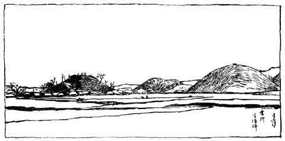
第七十八圖 朝鮮慶州古墳群
左端の高い塚は鳳凰臺といひ、その下から左の方に慶州の町があります。
金冠塚と瑞鳳塚とは、鳳凰臺の右方の塚との間にありました。
さて、
南朝鮮には、あちらこちらに
多數の
古墳がありますが、
中でも
一番たくさん
遺つてゐるのは、
元の
新羅の
都慶州です。こゝは
釜山から
京城へ
行く
汽車に
乘つて、
一時間ばかりで
大邱に
着き、そこで
下車して
自動車で
東の
方へ
三四時間も
走るとすぐ
行かれる
所です。
慶州には
周圍に
低い
山があつて、
一方だけ
少し
開けてゐる
地勢は、ちょうど
内地の
奈良に
似て、まことに
景色のよいところであります。この
町に
着きますと、その
低い
朝鮮の
家が
立ち
竝んでゐる
間に、
非常に
大きい
土饅頭がにょき／＼と
聳えてゐる
景色に
誰もが
驚かされますが、これは
皆、
昔の
新羅の
王樣や
偉い
人の
古墳なのです。その
中でも
一番立派なのは、
慶州の
町の
中にある
鳳凰臺といふので、これは
高さ
七十尺以上もある
大きな
圓塚です。この
慶州の
古墳からは、
今日までいろ／＼のものが
發見せられましたが、
私共をびっくりさせたのは、ちょうど
今から
十年ばかり
前に、その
鳳凰臺の
西手にある
半崩れの
塚から
出た
品物であります。
私共は、その
塚を
金冠塚と
名づけましたが、そのわけは、この
塚の
中から、それは／＼
立派な
金の
冠が
出たからであります。（この
本の
口繪を
御覽なさい）この
冠はまったく
純金作りでありまして、その
五本の
前立てには
小さな
圓いぴら／＼や、
美しい
緑色の
翡翆の
小さい
勾玉が
七十ばかりもぶら
下つてをりまして、これを
頭の
上に
載せてみると、それらがゆら／＼と
搖れて、なんともいへぬ
美しさを
見せます。そればかりではなく、
冠の
眞中からは
鳥の
羽根に
似た
長い
金の
飾りが
後の
方に
立ち、また
冠の
兩側からも
金の
飾りがぶら
下つて、その
端に
勾玉がついてゐるといふ、すばらしい
立派な
金の
冠なのです。またこの
冠を
着けてゐた
人の
腰のあたりには、
金飾りの
美しい
帶がありまして、その
帶から
腰のまはりには、
十七本の
金で
作つた
下げ
物をぶら
下げてをり、その
下げ
物の
先には、
香入れや
魚の
形の
勾玉や
毛拔きのような
小道具がついてをります。そして、また
腕には
腕環、
指には
指環をつけ、
足には
金めっきした
美しい
銅の
靴が
添へてあるばかりでなく、この
墓からは
支那から
渡つた
銅器、がらす
器の
類をはじめ、
馬具、
刀劍、
土器などが
無數に
出たので、
實に
見る
人の
眼を
驚かしたのでありました。
私もちょうどそれらが
發見された
時に、そこへ
來合せてゐてその
立派さに
驚いた
次第であります。しかし
私は
一度この
金の
冠を
頭へのせて
見たことがありましたが、こんな
冠やいろ／＼の
飾りをつけてはその
頃の
人はさぞ
重くて、きゅうくつなことであつたらうと
思ひました。これは
定めし
新羅の
古い
王樣のお
墓でありませうが、その
王樣の
名がわかりませんのは
殘念です。しかし
大體日本の
欽明天皇前後（
今から
千四百年ほど
前）の
古墳と
思はれます。（
第七十九圖）
［＃「第七十九圖 慶州金冠塚發見品」のキャプション付きの図（fig18371_80png、横×縦）入る］
（１）銅柄香爐 （２）がらす杯 （３）角形銅器
（４）金耳飾り （５）勾玉 （６）金腰飾り （７）金帶飾り
かような
塚は、こればかりでなく、その
後おひ／＼と
同じような
金の
冠を
納められたのがたくさん
現れました。あの
鳳凰臺の
南の
方の
小さい
塚からも
金冠が
出たのです。それは
形が
小さく、また
腰に
下げた
飾り
物も
小さく
可愛らしいので、
多分王樣の
子供のお
墓だらうと
想像されます。また
金冠塚のすぐ
西の
塚を、
今から
二三年前、スヱーデンの
皇太子殿下が
御出でになつたとき
［＃「なつたとき」は底本では「なつとき」］掘つてみました。これもまた
金冠塚と
同じような
勾玉のついた
金冠や
金の
飾り
物が
出ましたので、その
品物をそのまゝ
土の
中に
竝べて、
殿下に
御覽に
入れましたが、
朝日の
光りを
受けて
金ぴかの
品物が
輝いてゐるありさまは、なんともいへぬ
見物でありました。『
日本書紀』の
中にも、
新羅の
國は
金銀のたくさんにある
國であると
書ゐてありますがそれは
確にほんとうです。そしてこれほど
金で
作つた
品物が
墓にはひつてゐて
出た
例は、
日本にはまだ
一つもありません。しかし、それらのものは
金で
造つてありますけれども、その
作り
方はあまり
精巧でなく
美術的といふよりも、たゞ
無闇に
金を
使つた
趣味の
低い
品物といふ
外はないのです。この
慶州以外の
古墳から、これほど
立派な
金づくめの
品物は、
今まで
出たことはありませんが、
耳飾りだけはいつも
金で
作つてあります。
冠や
帶飾りなどは
同じ
形でも、
銅に
金めっきをしたものや、
銀で
作つたものが
出ただけです。
餘りたくさんではありませんが、
日本の
古墳からもこれと
同じ
類の
冠や
帶飾りが、やはり
出るのであり、ことに
土器はまったく
祝部土器と
同じ
燒き
方のもので、これらはみな
朝鮮から
日本へ
傳へられたものでありますが、
勾玉は
果してどちらからどちらへ
傳はつたものかわかりません。
［＃「第八十圖 古代新羅人服飾想像圖」のキャプション付きの図（fig18371_81.png、横×縦）入る］
第八十圖 古代新羅人服飾想像圖
いま
申した
古墳は
皆圓塚でありまして、その
中に
漆で
塗つた
棺を
埋め、その
上を
大きな
石塊で
包んだものであります。これを
積み
石塚といひます。
新羅の
古い
墓は、かういふふうの
造り
方であつたのですが、その
後石室をつくることになり、ちょうど
日本にあるのと
同じような
古墳が
朝鮮にも
出來たのであります。とにかく
南朝鮮の
古墳が
日本の
古墳と
非常によく
似てゐることは、
以上申したゞけでもおわかりでありませう。
朝鮮の
北の
方は、
今から
千九百年ほど
前滿洲の
方からかけて、
漢の
武帝といふ
強い
天子が
攻めて
來てそこを
占領し、
樂浪郡などゝいふ
支那の
郡を
四つも
設けたところであります。ことに
樂浪郡の
役所のあつたところは、
今日の
平壤の
南、
大同江の
向う
岸にあつて、
古い
城壁のあともありますが、
支那から
派遣せられた
役人がこゝに
留まつて
朝鮮を
治めてゐたのであります。それですからその
附近には、その
頃の
支那人の
古墳がたくさんあるのであります。これはみな
小さい
圓塚であつて、
中には
木の
棺を
入れたものやあるひは
大きな
煉瓦（
甎といひます）で
室をつくつたものもありまして、その
煉瓦にはいろ／＼
模樣があります。これらの
墓を
掘りますと
立派な
品物がたくさん
出ますが、それには
前に
新羅の
墓で
見たような
金ぴかものはありません。もっと
じみな
銅や
玉でつくつた
品物で、かへって
美術的にはなか／＼
優れたものが
大そう
多いのです。
新羅の
人とこゝにゐた
漢の
人との、
趣味の
相違がよくわかつて
面白いと
思はれます。
ある
墓の
中からは、
木棺内の
死體の
胸のあたりに、
圓い
玉で
作つた
璧といふものや、
口の
邊からは
蝉の
形をした
玉の
飾りなどが
出て
來ました。また
玉の
飾りをした
劍や
鏡、それから
銅の
壺なども
出ましたが、なかにも
立派なのは
金の
帶止めです。この
帶止めは
細い
毛のような
金絲と
金の
粒でもつて
獅子の
形をつくり、それに
寶石をちりばめた
細かい
細工は、
今日でもたやすく
出來ないと
思はれるほど
優れたものであります。またこれらの
墓からたくさん
漆器の
杯や
盆、
箱などが
出ましたが、その
漆器には、これを
作つた
時の
年號や
作つた
人達の
名が
細かく
彫りつけてあります。それによりますと、
漢の
初め
頃支那の
南方蜀といふ
遠い
地方で、
作つたものであることがわかるのであります。また
漆器の
上に
美しい
繪を
描いたものや、
面白い
人物を
描いた
鼈甲の
小箱などがあり、
支那の
漢時代には
美術が
進んでをつたことが、
歴史の
本に
出てをつても、まさか、これ
程まで
發達してをつたとは、
今まで
誰も
想像が
出來なかつたくらゐであります。なほ、ある
墓からは
漆器でつくつた
化粧箱が
出て、その
箱の
中には
紅と
白粉を
入れた
小さな
蓋物が
入れてありましたが、その
頃の
人も、かういふ
道具でお
化粧をしたことがわかります。（
第八十一圖）
［＃「第八十一圖 朝鮮樂浪古墳發見品」のキャプション付きの図（fig18371_82.png、横×縦）入る］
第八十一圖 朝鮮樂浪古墳發見品
（１）―（６）銅器 （７）（８）漆器 （９）璧 （10）（11）玉器 （12）金帶留め （13）刀劔
さてその
後、
北朝鮮には
高句麗といふ
朝鮮人の
國が
建てられて、
支那人の
勢力がだん／＼なくなつてしまひました。この
高句麗時代の
古墳は
平壤附近のほか
朝鮮の
北、
支那との
國境にもありまして、そこには
將軍塚などといふ
名のついてゐる、
石で
造つたエヂプトの
階段ぴらみっと［＃「ぴらみっと」は底本では「ぴらっみと」］のような
大きな
墓があります。これは
高句麗の
古い
頃の
好太王といふ
王樣のお
墓であるといふことであります。この
墓の
内部には
石で
作つた
部屋がありますが、
古くその
中を
荒したものがあつて
今は
何も
殘つてをりません。またこの
墓から
遠くない
所にその
王樣のことを
記した
自然石の
大きな
碑が
立つてをります。それを
讀むと、
日本人が
朝鮮へ
攻めて
行つたことが
記されてありますが、
多分神功皇后の
［＃「神功皇后の」は底本では「神后皇后の」］三韓征伐のときのことなどが
書いてあるように
思はれます。この
將軍塚や
碑のあるところは
鴨緑江の
北で、
今日では
支那の
領地となつてゐます。
高句麗は、その
後この
北の
方から
都を
平壤に
移しましたので、その
後の
古墳は
平壤の
西の
方にたくさんあります。それらの
墓の
中には
大きな
石室がありまして、
室内には
實に
驚くほど
立派な
繪が
描いてあります。その
繪は
優れた
支那風の
繪でありまして、ちょうど
支那の
六朝頃の
畫風を
示してをります。これは
實に
日本の
法隆寺の
金堂の
繪畫にも
比ぶべき、
立派な
古い
繪の
遺りものであります。（
第八十二圖）
［＃「第八十二圖 朝鮮高句麗」のキャプション付きの図（fig18371_83.png、横×縦）入る］
第八十二圖 朝鮮高句麗［＃「朝鮮高句麗」は底本では「朝鮮高勾麗」］
さて
鴨緑江をわたり
北の
方へ
行きますと、
支那の
領地の
南滿洲でありますが、こゝは
日清戰爭、
日露戰爭などがあつて
以來、
日本と
縁の
深い
土地であります。
南滿洲には、やはり
石器時代頃からすでに
人間が
住んでをりましたが、
周の
末から
漢の
初めに
支那人が
盛んに
植民してゐたのです。そしてその
頃の
古墳があちらこちらに
遺つてゐますが、あの
旅順の
西にある
老鐵山の
麓などには
古い
城壁がありまして、そのあたりには
古い
墓がたくさん
散在してをります。その
中には、
煉瓦で
造つた
五つの
室のある
漢時代の
墓がありました。それを
今から
二十年ほど
前に、
私が
掘りにまゐりましたが、
鏡だとか
土で
作つた
家の
形だとかゞ
出て
來ました。この
墓は、その
後壞してしまつて、
今では
跡方も
殘つてをりません。また
旅順の
東、
營城子といふところにも、
漢時代の
墓がありまして、
平壤附近の
墓から
出るのと
同じような
漆器などが
出ました。また
北の
方遼陽の
北には
石で
大きな
室をつくつた
古墳があつて、その
石室に
繪を
描いたのがありましたが、
今は
旅順の
博物館に
持つて
來てありますから、
容易に
見ることが
出來ます。そのほか
南滿洲の
各地には、
小さな
煉瓦造りの
墓や
石棺がありますが、ことに
珍しいのは、
貝殼でもつて
四角に
取り
圍み、その
中に
死體を
收めた
墓であります。それを
貝墓と
呼んでをりますが、これは
石器時代の
貝塚とはまったく
異なつたもので、
中からは
漢時代の
品物や、その
頃の
古錢が
出て
來ます。これらの
古墳やまたあちこちから
出る
周の
終り
頃の
品物や
古錢によつて、
南滿洲にも
古く
周の
終りから
漢の
頃に
支那の
文明が
傳はつてゐたことを
知ることが
出來るばかりでなく、その
頃の
人は
小さい
舟に
乘つて
海岸傳ひにこの
南滿洲から
北朝鮮の
樂浪を
經て、
南朝鮮にも
支那の
文明を
傳へ、
更に
日本の
西南へも
來たのでありまして、その
結果つひに
朝鮮も
日本も、
長い
石器時代の
夢からさめて、
金屬を
使用する
新しい
開けた
時代へ、だん／＼
進んで
行つたものと
思はれます。とにかく、この
滿洲や
朝鮮にある
支那人の
古墳は、
餘り
偉い
人のお
墓ではありませんが、
今日まだ
支那の
内地の
古墳をよく
調べることが
出來ないので、
支那のことを
知る
上からも
非常に
大切なものであります。
博物館の
見物も、だいぶ
長くなつて
皆さんも
疲れたでせうが、
私も
話しくたびれました。まづこれで
見物をやめて、お
茶でも
飮むことにいたしませう。しかし
皆さんはこん
後も
暇があれば
博物館へ
來て、
今まで
見た
品物を
更に
詳しく
見て、わからぬことがあれば
先生や
博物館の
人にお
尋ねになることを
希望いたします。それではさようなら。
（をはり）